Como usar
Cada aula tem duas partes: primeiro o conceito (leia com calma), depois Teste-se. Nas questões de múltipla escolha, toque na alternativa: fica verde se acertou e vermelha se errou, e o placar no topo vai somando. Nas discursivas, responda de cabeça ou no papel antes de abrir a resposta-modelo.
Tudo foi tirado dos slides do professor e da lista de exercícios oficial do 1º TVC. Os quadros amarelos mostram como cada assunto costuma ser cobrado. São 205 questões ao todo.
Aula 1 — Conceitos Fundamentais da IHC (Parte I): interface, interação e linguagem
Interface
Para o professor, interface é o que está no limite (fronteira) entre duas fases de um sistema heterogêneo. Existem interfaces entre sistemas computacionais e interfaces entre o ser humano e os sistemas computacionais. A interface do usuário é como uma "película" que separa o usuário do sistema.
- Interface de Usuário (UI): o apoio computacional pelo qual o usuário aciona as funções do sistema e dele recebe as informações necessárias para realizar suas tarefas (objetivos).
- Definição de Moran (1981): toda a porção de um sistema interativo com a qual o usuário mantém contato físico (motor ou perceptivo) ou conceitual (interpretação e avaliação) durante a interação.
- É o único meio de contato entre usuário e sistema. Por isso a maioria dos usuários acredita que o sistema é a interface.
- Tem elementos de hardware (dispositivos físicos de entrada e saída: teclado, mouse, monitor, touch screen, cartão do RU/ônibus) e de software (botões, ícones, menus, checkboxes, comboboxes). A interface liga elementos mecânicos (mesmo virtuais) ao software e suas funções.
- Contato conceitual: o usuário interpreta o que percebe pelos dispositivos de entrada e saída; essa interpretação permite entender as respostas do sistema e planejar os próximos passos.
- As características físicas (perceptivas e motoras), cognitivas, a formação, o conhecimento e as experiências do usuário influenciam o que é uma interface adequada. Exemplos do slide: daltônicos podem não distinguir erro e alerta indicados só por cor; pessoas analfabetas não leem instruções de uso.
Interação x Interface
Interação é um diálogo, um ato de comunicação entre usuário e sistema. É mais ampla que a interface, mas depende de uma interface para acontecer.
- A interface determina os processos de interação possíveis: define o que o usuário pode falar ou fazer, de que maneira e em que ordem.
- Por isso, quando se define como a interação deve ocorrer, restringem-se características da interface, e vice-versa.
- Regra prática para separar as duas (leitura dos slides): interface = os elementos que o usuário vê e toca (botão, ícone, campo, cor, tamanho, rótulo, dispositivo); interação = o processo/diálogo (sequência de passos, ordem, o que é possível fazer em cada momento, a resposta do sistema).
A complexidade da interface interfere na complexidade da interação (slide repetido nas Aulas 1 e 2):
- Quanto mais opções na interface, maior o tempo de escolha.
- Quanto menores os elementos, maior o tempo e o esforço físico para apontar para eles.
- Quanto mais inteligíveis os símbolos, mais fácil a aprendizagem, a memorização e a eficiência no uso.
Interação depende de linguagem artificial, que é projetada
Todo diálogo depende de uma linguagem. Entre humanos, a linguagem (oral ou corporal) é natural. A linguagem entre usuários e sistemas é artificial e, por isso, passível de ser projetada (processo de design).
Design: processo de projeto que visa criar formas e funções de objetos, produtos e serviços, de modo a torná-los adequados às necessidades de seus usuários e/ou aos efeitos desejados sobre eles.
Elementos da linguagem da interface: léxico, sintático e semântico
- Léxico: símbolos que têm algum significado para a interação. Na lista: "elementos de interface usados para comunicar significados ao usuário". Pergunta-guia: o que esse símbolo significa?
- Sintático: ações válidas no espaço da interação; indica o que é válido a cada momento. Na lista: "as ações possíveis na interface". Pergunta-guia: o que posso fazer aqui? Essa ação é válida? Clicar num elemento que não é clicável é uma ação sem validade: isso é sintaxe.
- Semântico: intenção ou resultado das ações. Na lista: "resultados das ações". Pergunta-guia: o que acontece quando eu faço isso?
- Símbolos, validade das ações e semântica são todos projetados: a linguagem entre humanos e computadores é totalmente artificial.
Teste-se
1. Segundo Moran (1981), usado pelo professor, a interface é:
- o conjunto de telas e botões de um software, excluindo os dispositivos físicos.
- toda a porção do sistema interativo com a qual o usuário mantém contato físico (motor ou perceptivo) ou conceitual (interpretação e avaliação) durante a interação.
- o processo pelo qual o usuário formula uma intenção, age e avalia o resultado.
- a parte do sistema responsável por processar os dados e armazená-los no servidor.
Ver resposta
Letra b. É a definição literal do slide. (a) erra porque a interface também inclui hardware. (c) é a definição de interação de Norman (Aula 2). (d) descreve o sistema "por trás" da interface, com o qual o usuário não tem contato.
2. No iFood, o usuário vê o ícone de uma sacola com um número vermelho no canto. Esse ícone, enquanto símbolo que comunica "você tem itens na sacola", pertence a qual elemento da linguagem da interface?
- Léxico.
- Sintático.
- Semântico.
- Pragmático.
Ver resposta
Letra a. Um símbolo que transmite significado é léxico. Seria sintático se a pergunta fosse sobre a ação de tocar na sacola, e semântico se fosse sobre o resultado (abrir a sacola com os itens e o total). "Pragmático" não faz parte da classificação do professor.
3. Numa loja on-line, o usuário clica em "Adicionar ao carrinho" sem escolher o tamanho e aparece a mensagem "Selecione um tamanho". Como o professor classificou essa situação na aula?
- Léxico, porque a mensagem é um símbolo.
- Sintático, porque a ação foi inválida.
- Semântico, porque é o resultado da ação de clicar no botão sem tamanho.
- Não é linguagem da interface, é apenas um erro do sistema.
Ver resposta
Letra c. No slide, a pergunta é "qual é o resultado da ação de clicar em adicionar sem selecionar tamanho?" e a resposta (mensagem de erro) aparece sob Semântico. (b) é a confusão mais comum: o sintático é a ação possível em si, não o que acontece depois. (a) e (d) ignoram que a mensagem é a resposta projetada para aquela ação.
4. Qual afirmação sobre a relação entre interação e interface está de acordo com os slides?
- Interface e interação são sinônimos: projetar uma é projetar a outra.
- A interação é mais restrita que a interface e acontece sem ela em sistemas por voz.
- A interface pode ser projetada, mas a interação é natural e não pode ser projetada.
- A interação é mais ampla que a interface, mas depende dela; a interface determina o que o usuário pode fazer, de que maneira e em que ordem.
Ver resposta
Letra d. É o texto do slide "Interface x Interação". (a) erra: elas se influenciam, mas não são a mesma coisa. (b) inverte a relação, e sistemas de voz também têm interface (microfone, alto-falante, comandos). (c) erra: a linguagem da interação é artificial e por isso é projetada.
5. Um aplicativo de banco mostra erro em vermelho e sucesso em verde, sem ícone nem texto. Um usuário daltônico não distingue as duas mensagens. Qual ideia da aula explica o problema?
- A interface é o único meio de contato, logo o usuário pensa que o sistema é a interface.
- As características físicas (perceptivas) do usuário influenciam a definição de uma interface apropriada.
- Quanto mais opções na interface, maior o tempo de escolha.
- O sintático define quais ações são válidas em cada momento.
Ver resposta
Letra b. O slide usa exatamente o exemplo do daltônico que não diferencia erro e alerta expressos só por cor. (a) é verdadeira, mas não explica o problema. (c) trata de quantidade de opções. (d) trata de ações válidas, e aqui o problema é de percepção do símbolo.
6. Um controle remoto A tem 50 botões; um controle B tem 5 botões e todas as outras funções ficam em menus na tela da TV. Para ligar a legenda, no A basta um botão; no B são 6 passos. Qual conclusão segue o raciocínio da aula?
- B tem interface e interação mais simples, porque tem menos botões.
- A tem interface e interação mais complexas, porque tem mais botões.
- B tem interface mais simples, mas, para essa tarefa, interação mais complexa.
- Os dois têm a mesma interação, pois realizam a mesma função.
Ver resposta
Letra c. A pergunta do slide ("qual tem a interface mais simples?" e depois "qual tem a interação mais simples?") serve para mostrar que as respostas podem ser diferentes. Interface mais simples (poucos elementos) não garante interação mais simples (menos passos). (a) e (b) tratam as duas coisas como iguais. (d) ignora que a sequência de passos (a interação) muda.
7. (Adaptada da Questão 1 da lista oficial, sem a figura.) Considere a página de produto de um tênis num site como o da Nike: há miniaturas do tênis em 4 cores, uma grade de botões com as numerações (37 a 44), um ícone de coração ao lado do nome do produto e um botão preto "Adicionar à sacola". Aponte dois elementos do léxico, dois do sintático e dois do semântico. Justifique.
Resposta-modelo
Léxico (elementos que comunicam significado):
- Miniaturas do mesmo tênis em cores diferentes: comunicam que é possível escolher a cor do modelo.
- Ícone de coração: comunica "favoritar/salvar o produto", por convenção de outros apps.
Sintático (ações possíveis/válidas):
- Selecionar uma cor clicando na miniatura.
- Selecionar uma numeração e clicar em "Adicionar à sacola". Clicar no título do produto, que não é clicável, não é uma ação válida.
Semântico (resultado das ações):
- Ao selecionar a cor verde, as fotos principais passam a mostrar o tênis verde e a miniatura escolhida ganha um contorno, indicando a opção selecionada.
- Ao clicar em "Adicionar à sacola" sem numeração, aparece uma mensagem pedindo o tamanho; com numeração, o produto vai para a sacola e o contador do ícone da sacola aumenta.
Justificativa: léxico é o símbolo e seu significado; sintático é a ação permitida naquele momento; semântico é o efeito que a ação produz na interface.
8. No Instagram, identifique o léxico, o sintático e o semântico da funcionalidade de curtir uma publicação.
Resposta-modelo
- Léxico: o ícone de coração vazado abaixo da foto, que comunica "curtir". O contador "X curtidas" comunica quantas pessoas curtiram.
- Sintático: as ações válidas são tocar no coração ou dar dois toques na foto. Tocar uma vez na foto não curte (em vídeo, pausa ou tira o som). A ação válida depende de onde e como se toca.
- Semântico: o coração fica vermelho e preenchido, um coração grande aparece sobre a foto (no toque duplo), o contador aumenta em 1 e o autor da publicação recebe uma notificação. Tocar de novo no coração vermelho desfaz a curtida.
9. Explique a diferença entre contato físico e contato conceitual com a interface, usando o Pix no app do Nubank como exemplo.
Resposta-modelo
Contato físico (motor ou perceptivo): o usuário toca a tela no botão "Pix", digita o valor no teclado numérico (motor) e vê na tela o nome do destinatário e o valor (perceptivo).
Contato conceitual (interpretação e avaliação): o usuário interpreta o que viu, por exemplo, entende que o nome exibido confirma que a chave Pix está certa e que a tela "Pix enviado" com o comprovante significa que a transferência foi concluída. Com essa interpretação ele avalia se atingiu o objetivo e planeja o próximo passo (compartilhar o comprovante ou voltar ao início).
Aula 2 — Conceitos Fundamentais da IHC (Parte II): interação, perspectivas de interação e feedback
Elementos do processo de interação e contexto de uso
O processo de interação envolve: um usuário, com um objetivo, interagindo com a interface de um sistema, dentro de um contexto de uso. (complemento: Barbosa & Silva, Figura 2-1; o slide mostra a figura sem texto)
- Contexto de uso: a situação do usuário relevante para a interação, incluindo o momento de uso (quando) e o ambiente físico, social e cultural (onde). (complemento: Barbosa & Silva)
- Exemplo do slide: usar o Impress (editor de slides) em casa preparando a aula, no aeroporto/avião ajustando as notas, e em sala apresentando são interações diferentes com o mesmo software. Essas diferenças devem ser consideradas no design e na avaliação de um novo sistema.
Interação: definições
- Conceito inicial: restrito a como uma entidade física (pessoa) interage com outra (máquina); interação vista como operação de máquina. Os avanços da ciência cognitiva levaram à ideia de comunicação com as máquinas.
- Norman (1986): interação é o processo pelo qual o usuário (1) formula uma intenção, (2) planeja suas ações, (3) atua sobre a interface, (4) percebe e interpreta a resposta do sistema e (5) avalia se o objetivo foi alcançado. É a visão de operação de máquina / comunicação com a máquina.
- A interação também pode ser vista como manipulação, comunicação, conversa, troca, influência.
- Comunicação com/por meio da máquina: interação é o processo de comunicação entre pessoas (incluindo o designer e os usuários), mediado por sistemas computacionais.
- Interação, como linguagem artificial, depende de design.
Interação x Interface: como analisar uma tela (questões 2 e 3 da lista)
A lista pede para classificar cada problema ou qualidade como de design da interação ou de projeto de interface, justificar e dizer a consequência para o usuário. Use as ideias dos slides:
- Problema/qualidade de interface (elemento): símbolo pouco inteligível, rótulo ambíguo, botão ou campo pequeno demais, informação só por cor, texto longo para quem tem pouca leitura, excesso de opções na mesma tela.
- Problema/qualidade de interação (processo/diálogo): ordem dos passos confusa, passos demais para a tarefa, o sistema não responde à ação (falta de feedback), o usuário não consegue voltar ou corrigir, perguntas feitas na hora errada, ações permitidas sem os dados necessários.
- Para cada item, escreva: tipo + elementos envolvidos + por que + consequência (ou benefício) para o usuário.
Feedback
A pergunta que o professor usa: "Como o sistema dá visibilidade (feedback) sobre o seu estado em resposta às ações do usuário?" Feedback é a resposta que a interface dá a cada ação, mostrando ao usuário o que aconteceu e em que estado o sistema está.
- Reconhecer na interface: mudança visual depois de um clique (botão destacado, contorno na opção escolhida), mensagens de confirmação ou erro, contadores que mudam, barras de progresso, status ("enviando", "entregue"), som ou vibração.
- Liga-se à etapa "percebe e interpreta a resposta do sistema" de Norman: sem feedback, o usuário não consegue avaliar se atingiu o objetivo. (complemento: Barbosa & Silva, as mensagens de resposta do sistema abreviam o golfo de avaliação)
"Como é a implementação da interação na interface?"
Item b da mesma questão da lista. Responda descrevendo a sequência de passos da tarefa e, para cada passo, qual elemento de interface o usuário usa e qual resposta recebe. É juntar interação (o diálogo) e interface (os elementos que o tornam possível).
Perspectivas de interação (Kammersgaard, 1988)
Quatro formas diferentes de se comunicar com computadores. Ao projetar a interação, o designer pressupõe uma (ou mais) dessas relações.
- Sistema: o usuário se comporta como uma verdadeira máquina, aprendendo a interagir de forma disciplinada, restrita por formatos de entrada padronizados e rígidos. Objetivo: eficiência e transmissão correta de dados, reduzindo tempo de interação e número de erros. Elementos que limitam o que o usuário pode fazer; teclas de atalho aumentam a eficiência de quem tem habilidade com teclado e tempo e disposição para aprender sequências de comandos.
- Parceiro do discurso: o sistema se comporta como um ser humano, capaz de raciocinar, fazer inferências, tomar decisões e adquirir informação. Usa linguagem natural. O designer define a quantidade, o conteúdo e a sequência das falas para ajudar o usuário a atingir seus objetivos. Exemplo do slide: ChatGPT e o diálogo do presente para a tia (rosas, bombons, orquídea Cattleya).
- Ferramenta: o sistema é um instrumento que ajuda o usuário a realizar suas tarefas. Interação = aplicar uma ferramenta a algum material e avaliar o resultado durante uma atividade. O usuário deve se concentrar no trabalho e manipular a ferramenta de forma automática. Descrita pelo encadeamento de ações do usuário e respostas do sistema. O sucesso depende do conhecimento do usuário sobre a ferramenta e da destreza para manipulá-la.
- Mídia: o sistema é um meio de comunicação (como jornal, TV, rádio, telefone) pelo qual pessoas se comunicam umas com as outras. Dois níveis: entre usuários, mediada pelo sistema; e dos designers para os usuários, mediada pela interface.
| Perspectiva | Significado da interação | Fatores de qualidade mais evidentes |
|---|---|---|
| Sistema | Transmissão de dados | Eficiência (tempo de uso e número de erros) |
| Parceiro do discurso | Conversa usuário-sistema | Adequação da interpretação e geração de textos |
| Ferramenta | Manipulação de ferramenta | Funcionalidades relevantes ao usuário, facilidade de uso |
| Mídia | Comunicação entre usuários e designer-usuário | Qualidade da comunicação mediada e entendimento mútuo |
Design da IHC e Engenharia de Software
- IHC é multidisciplinar: Computação, Psicologia, Sociologia, Antropologia, Ergonomia, Engenharia, Artes, Design, Linguística, Semiótica.
- Na Computação, a área mais próxima da IHC é a Engenharia de Requisitos.
- Requisitos vagos sobre o usuário ("o sistema deverá ser amigável", "fácil de aprender", "design simples e intuitivo", "o estagiário vai cuidar da interface") equivalem a "o sistema deverá impedir o acesso de hackers" ou "ser rápido e confiável": não dizem como fazer nem como verificar.
Affordance (introdução)
Na IHC, affordance são características (físicas e/ou simbólicas) de um objeto capazes de revelar aos usuários o que se pode fazer com ele e as maneiras de usá-lo. É uma indicação convincente de como algo funciona, incluindo a percepção do usuário e a função real. Aprofundado nas Aulas 3 a 5.
Teste-se
1. Um aplicativo de cadastro do SUS só aceita CPF com 11 dígitos, data no formato dd/mm/aaaa e escolhas em listas fechadas, e oferece atalhos de teclado para os atendentes cadastrarem rápido. A perspectiva de interação predominante é:
- Ferramenta.
- Sistema.
- Mídia.
- Parceiro do discurso.
Ver resposta
Letra b. Formatos de entrada padronizados e rígidos, foco em transmissão correta de dados, menos erros e teclas de atalho são exatamente a descrição da perspectiva de sistema. (a) seria se o foco fosse manipular um material e avaliar o resultado. (c) exigiria comunicação entre pessoas. (d) exigiria um sistema que conversa como humano.
2. Qual é o fator de qualidade mais evidente na perspectiva de ferramenta, segundo a tabela do professor?
- Eficiência, medida pelo tempo de uso e número de erros.
- Adequação da interpretação e geração de textos.
- Funcionalidades relevantes ao usuário e facilidade de uso.
- Qualidade da comunicação mediada e entendimento mútuo.
Ver resposta
Letra c. (a) é da perspectiva de sistema, (b) de parceiro do discurso e (d) de mídia. A tabela costuma ser cobrada com essa troca.
3. Sara manda áudio no WhatsApp para a mãe; depois pergunta ao assistente de IA do mesmo app qual o horário da farmácia. Classifique as duas interações, nessa ordem:
- Parceiro do discurso e mídia.
- Mídia e mídia.
- Ferramenta e parceiro do discurso.
- Mídia e parceiro do discurso.
Ver resposta
Letra d. Com a mãe, o sistema é o meio pelo qual duas pessoas se comunicam (mídia). Com o assistente, o próprio sistema é o interlocutor, interpreta a pergunta em linguagem natural e responde como um humano (parceiro do discurso). (a) inverte; (b) ignora que no segundo caso não há outra pessoa; (c) o áudio não é manipulação de material.
4. Qual a ordem correta das etapas da interação segundo Norman (1986)?
- Formular intenção, planejar ações, atuar sobre a interface, perceber e interpretar a resposta, avaliar se o objetivo foi alcançado.
- Planejar ações, formular intenção, atuar sobre a interface, avaliar o objetivo, perceber a resposta.
- Perceber a interface, formular intenção, atuar, avaliar, planejar a próxima ação.
- Formular intenção, atuar sobre a interface, planejar ações, avaliar, perceber a resposta.
Ver resposta
Letra a. É a sequência do slide. Nas demais, a ordem está trocada: não se planeja antes de ter a intenção (b), não se age antes de planejar (d), e só se avalia depois de perceber e interpretar a resposta (b, c, d).
5. Na perspectiva de mídia, quais são os dois níveis de comunicação apresentados nos slides?
- Entre usuário e sistema; entre sistema e servidor.
- Entre usuários, mediada pelo sistema; dos designers para os usuários, mediada pela interface.
- Entre usuários e o sistema que raciocina; entre o sistema e outros sistemas.
- Entre o usuário e a ferramenta; entre a ferramenta e o material.
Ver resposta
Letra b. (a) e (c) colocam o sistema como interlocutor, o que é parceiro do discurso, ou falam de comunicação entre máquinas, que não é IHC. (d) descreve a perspectiva de ferramenta.
6. No Word, o usuário seleciona um parágrafo, clica em "N" e vê o texto ficar em negrito na hora, sem precisar pensar no comando. A perspectiva e a característica que justificam isso são:
- Sistema, porque o botão "N" é um formato de entrada rígido.
- Mídia, porque o documento será lido por outra pessoa.
- Parceiro do discurso, porque o sistema entende o que o usuário quer.
- Ferramenta, porque o usuário aplica uma ferramenta a um material (o texto) e avalia o resultado, concentrado no trabalho.
Ver resposta
Letra d. É a definição de ferramenta: aplicar a ferramenta a um material, avaliar o resultado e manipular de forma automática. (a) confunde um botão com formato de entrada rígido. (b) o documento pode até ser compartilhado, mas a ação descrita é edição. (c) não há conversa nem inferência.
7. Um formulário pede 25 dados numa única tela, com campos pequenos, e só avisa o que está errado depois de o usuário clicar em "Enviar", apagando tudo o que foi digitado. Qual classificação está correta?
- Campos pequenos e excesso de campos são problemas de interação; apagar os dados é problema de interface.
- Campos pequenos e excesso de campos são problemas de interface; avisar o erro só no fim e apagar os dados é problema de interação.
- Todos são problemas de interface, pois aparecem na tela.
- Todos são problemas de interação, pois atrapalham a tarefa.
Ver resposta
Letra b. Tamanho e quantidade de elementos são características da interface (mais opções aumentam o tempo de escolha; elementos menores aumentam esforço para apontar). O momento do aviso e a perda dos dados dizem respeito ao processo/diálogo (ordem e resposta do sistema), ou seja, interação. (a) inverte. (c) e (d) não fazem a distinção que a lista pede.
8. (Adaptada da questão de feedback e perspectivas da lista oficial, sem a figura.) Considere o app do iFood. a) Como o sistema dá visibilidade (feedback) sobre seu estado em resposta às ações do usuário? b) Como é a implementação da interação na interface? c) Aponte a(s) perspectiva(s) de interação associada(s) à aplicação. Justifique.
Resposta-modelo
a) Feedback:
- Ao tocar em "Adicionar" num prato, aparece uma barra inferior "Ver sacola" com a quantidade de itens e o total, informando que o item entrou na sacola.
- Depois do pagamento, a tela mostra o status do pedido em etapas (confirmado, em preparo, saiu para entrega) e um mapa com o entregador, informando o estado do pedido a cada momento.
- Se o usuário tenta finalizar sem endereço, o app mostra uma mensagem pedindo o endereço e não deixa avançar.
b) Implementação da interação: a tarefa "pedir comida" é dividida em passos: (1) buscar ou escolher restaurante na lista (campo de busca e cards de restaurante); (2) escolher pratos (botão "Adicionar" e seletor de quantidade); (3) revisar a sacola (botão "Ver sacola"); (4) escolher endereço e pagamento (listas de opções); (5) confirmar (botão "Fazer pedido"); (6) acompanhar (tela de status). Cada passo usa um elemento de interface e recebe uma resposta visível.
c) Perspectivas:
- Sistema: endereço, forma de pagamento e quantidades são escolhidos em formatos padronizados (listas e campos fixos), o que reduz erros na transmissão dos dados do pedido.
- Mídia: o chat com a loja e com o entregador é comunicação entre pessoas mediada pelo app. A própria interface também comunica do designer para o usuário como fazer o pedido.
- Ferramenta (pode ser citada): o usuário "monta" o pedido como um material, adicionando e removendo itens e vendo o total mudar.
9. (Adaptada das Questões 2 e 3 da lista oficial.) Na tela de Pix de um app de banco, o usuário digita a chave, o app mostra o nome e o banco do destinatário, depois pede o valor num teclado numérico grande e, por fim, mostra uma tela de revisão com o botão "Confirmar". Aponte as características do design da interação e do projeto de interface que tornam a tela apropriada. Para cada uma, indique o tipo, os elementos envolvidos e como ajuda o usuário.
Resposta-modelo
- Tipo: design da interação. Elementos: sequência chave, valor, revisão, confirmar. Justificativa: a tarefa é dividida em passos curtos, numa ordem lógica, e o usuário só confirma depois de revisar; isso reduz erros como mandar dinheiro para a pessoa errada.
- Tipo: design da interação (feedback). Elementos: exibição do nome e do banco do destinatário logo após digitar a chave. Justificativa: o sistema dá visibilidade do que entendeu, e o usuário percebe e interpreta essa resposta antes de seguir.
- Tipo: projeto de interface. Elementos: teclado numérico grande. Justificativa: elementos maiores diminuem o tempo e o esforço para apontar e o teclado só com números evita digitar letras no valor.
- Tipo: projeto de interface. Elementos: botão "Confirmar" com rótulo claro e destacado. Justificativa: símbolos inteligíveis facilitam aprendizagem, memorização e eficiência; o usuário sabe o resultado do toque.
10. Explique a diferença entre as perspectivas de mídia e de parceiro do discurso e dê um exemplo de app para cada uma.
Resposta-modelo
Na perspectiva de mídia, o sistema é um meio de comunicação entre pessoas (como telefone ou jornal): a interação é comunicação entre usuários, e do designer para o usuário, mediada pela tecnologia. Qualidade: qualidade da comunicação mediada e entendimento mútuo. Exemplo: WhatsApp numa conversa entre amigos.
Na perspectiva de parceiro do discurso, o sistema é o próprio interlocutor: conversa com o usuário em linguagem natural, como um ser humano, raciocinando, fazendo inferências e tomando decisões; o designer define a quantidade, o conteúdo e a sequência das falas. Qualidade: adequação da interpretação e geração de textos. Exemplo: ChatGPT, ou o chatbot de atendimento do banco.
Lista oficial resolvida — questões 1 a 4
As respostas abaixo usam só o que aparece nas figuras da lista. Quando algo não dá para ver na imagem, isso está dito na resposta. Leia o enunciado, olhe a figura, tente responder no papel e só depois abra a resposta-modelo.
Questão 1 da lista oficial — léxico, sintático e semântico (loja de artigos esportivos)
Enunciado resumido: com base na Figura 1 (página de produto de uma loja on-line de artigos esportivos, um tênis de corrida), aponte dois elementos do léxico, dois do sintático e dois do semântico da linguagem da interface e justifique. A própria lista lembra: léxico = elementos que comunicam significados; sintático = ações possíveis; semântico = resultados das ações.
O que se vê na figura: duas capturas da mesma página. Menu superior (Ofertas, Lançamentos, Masculino, Feminino, Infantil, SNKRS), campo de busca com a lupa e o texto "vaporfly 3", ícones de coração e de sacola. À esquerda, fotos do tênis. À direita: preço ("R$ 1699,99 em até 12x sem juros", "26% off"), aviso em verde "Baixe o Nike App e ganhe 5% de desconto com o cupom PRIMEIRACOMPRA... Saiba mais", 10 miniaturas de cores, "Selecione um tamanho", link "Tabela de medidas", grade de numerações de 37 a 48 (algumas com um traço diagonal), botão preto "Adicionar ao carrinho" e botão "Salvar como favoritos" com coração. Na 1ª captura está selecionada a miniatura do tênis claro (azul-claro) e as fotos mostram esse tênis; na 2ª está selecionada a miniatura vermelha, as fotos mostram o tênis vermelho e o tamanho 39 aparece com contorno azul.
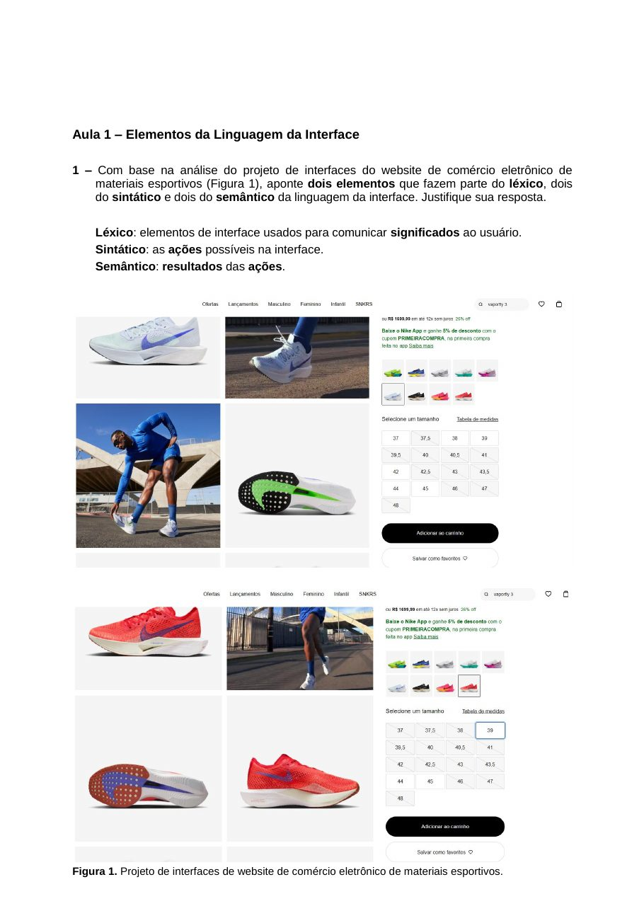
1. Com base na Figura 1, aponte dois elementos do léxico, dois do sintático e dois do semântico da linguagem da interface. Justifique.
Resposta-modelo
Conceito cobrado (slides da Aula 1): a interação é um diálogo que depende de uma linguagem; entre usuário e sistema essa linguagem é artificial e, por isso, projetada pelo designer. Ela tem três elementos: léxico = símbolos que têm algum significado para a interação (na lista: "elementos de interface usados para comunicar significados ao usuário"); sintático = ações válidas no espaço da interação, o que é válido a cada momento (na lista: "as ações possíveis na interface"); semântico = intenção ou resultado das ações (na lista: "resultados das ações"). Símbolos, validade das ações e semântica são todos projetados.
Aplicação à Figura 1:
Léxico (símbolos que comunicam significado ao usuário):
- Miniaturas de cores do tênis (10 pequenas fotos do mesmo modelo em cores diferentes, à direita). Justificativa: comunicam que o produto existe em várias cores e que a cor pode ser escolhida ali.
- Ícone de sacola no canto superior direito (e o ícone de coração ao lado). Justificativa: a sacola significa "carrinho de compras" e o coração significa "favoritos", por convenção de lojas on-line, sem precisar de texto.
- (Outros válidos: a lupa no campo de busca significa "pesquisar"; o traço diagonal sobre algumas numerações comunica que aquele tamanho não está disponível; o texto "26% off" comunica desconto.)
Sintático (ações possíveis/válidas na interface):
- Selecionar a cor clicando numa miniatura. Justificativa: é uma ação válida naquele espaço; as miniaturas são clicáveis.
- Selecionar um tamanho clicando num número da grade "Selecione um tamanho" e depois clicar em "Adicionar ao carrinho". Justificativa: são as ações previstas para comprar, nessa ordem; clicar num tamanho riscado ou numa área sem função não é uma ação válida.
- (Outros válidos: clicar em "Salvar como favoritos"; digitar o nome do produto no campo de busca; clicar em "Tabela de medidas" ou "Saiba mais".)
Semântico (resultado das ações), comparando as duas capturas:
- Ao selecionar a miniatura vermelha, as fotos principais passam a mostrar o tênis vermelho e a miniatura escolhida ganha um contorno. Justificativa: é o resultado visível da ação "selecionar cor"; o usuário confirma qual cor está escolhida.
- Ao selecionar o tamanho 39, o quadro do 39 ganha um contorno azul. Justificativa: é o resultado da ação "selecionar tamanho"; mostra qual numeração será comprada.
- (Também aceitável, mas não aparece nesta figura: ao clicar em "Adicionar ao carrinho", o produto vai para a sacola; sem tamanho escolhido, aparece mensagem pedindo o tamanho, o que se vê na Figura 4.)
Dica de formato: para cada item escreva "elemento + onde está + o que significa (léxico) / qual ação permite (sintático) / o que acontece depois (semântico)". O mesmo elemento pode aparecer nos três níveis, desde que você descreva o aspecto certo: a miniatura é léxico; clicar nela é sintático; as fotos mudarem é semântico.
Variação provável: "Defina léxico, sintático e semântico da linguagem da interface e explique por que se diz que a linguagem da interação humano-computador é artificial e projetada." Ou: "Dê um exemplo de cada elemento em um aplicativo que você usa e diga por que o mesmo botão pode aparecer nos três níveis."
Questão 2 da lista oficial — problemas de interação e de interface (Pró-Inclusão)
Enunciado resumido: na tela de cadastro de pessoa em situação de rua do aplicativo Pró-Inclusão (Figura 2), aponte os problemas de interação e de interface. Para cada um: tipo (interação ou interface), por que é problema e consequências para os usuários.
O que se vê na figura: barra superior roxa com seta de voltar e o título "Informações Pessoais (5/10)". Abaixo, um espaço vazio e um cartão com o subtítulo "Serviços" e três perguntas em letra pequena e cinza: "Você possui cadastro no CRAS (Centro de Referência de Assistência Social)?", "Você possui cadastro no CREAS (Centro de Referência Especializado de Assistência Social)?" e "Você sabe da existência do Serviço de Albergue de Juiz de Fora?". Cada pergunta tem um campo de texto livre com o texto "Resposta:". No rodapé, dois botões iguais, roxos: "ANTERIOR" e "PRÓXIMO".
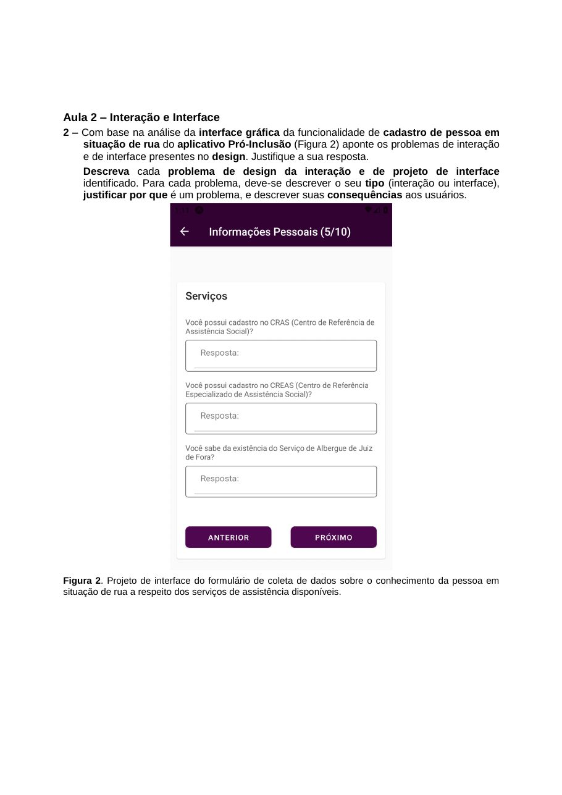
2. Com base na Figura 2, aponte os problemas de interação e de interface do design. Para cada problema, descreva o tipo, por que é um problema e suas consequências aos usuários.
Resposta-modelo
Conceito cobrado (slides das Aulas 1 e 2): interface é toda a porção de um sistema interativo com a qual o usuário mantém contato físico (motor ou perceptivo) ou conceitual (interpretação e avaliação) durante a interação (Moran, 1981); é o único meio de contato entre usuário e sistema e tem elementos de hardware e de software (botões, ícones, campos, menus). Interação é um diálogo, um ato de comunicação entre usuário e sistema; é mais ampla que a interface, mas depende dela para acontecer. A interface determina os processos de interação possíveis: o que o usuário pode falar ou fazer, de que maneira e em que ordem. Por isso, problema de interface está no elemento (símbolo, rótulo, tamanho, cor, quantidade de opções); problema de interação está no processo (ordem dos passos, passos demais, falta de resposta do sistema, impossibilidade de corrigir). E a complexidade da interface interfere na da interação: mais opções, maior tempo de escolha; elementos menores, maior esforço para apontar; símbolos mais inteligíveis, aprendizagem e uso mais fáceis. As características físicas, cognitivas, a formação e a experiência do usuário definem o que é uma interface adequada.
Aplicação à Figura 2:
Problema 1 — Campo de texto livre para perguntas de sim/não.
Tipo: interface (elemento inadequado) com reflexo na interação.
Elementos: os três campos "Resposta:".
Por que é problema: as três perguntas só admitem respostas fechadas (sim / não / não sei), mas a interface oferece um campo de digitação. O elemento escolhido não comunica quais respostas são esperadas e obriga a digitar o que poderia ser um toque.
Consequências: mais tempo e esforço para preencher (digitar no celular); respostas inconsistentes ("sim", "s", "tenho", "acho que sim"), que dificultam contar e analisar os dados; mais chance de erro de digitação. O adequado seria botões de opção (Sim / Não / Não sei).
Problema 2 — Título da tela não corresponde ao conteúdo.
Tipo: interface (rótulo).
Elementos: título "Informações Pessoais (5/10)" na barra superior x subtítulo "Serviços" no cartão.
Por que é problema: o título diz que a etapa é de informações pessoais, mas as perguntas são sobre serviços de assistência. O rótulo comunica um significado errado.
Consequências: o usuário fica em dúvida sobre em que parte do cadastro está e sobre o que está respondendo.
Problema 3 — Siglas e textos longos, em letra pequena e cinza.
Tipo: interface (símbolos pouco inteligíveis, contraste e tamanho de texto).
Elementos: as três perguntas, com siglas CRAS e CREAS e nomes institucionais longos, em fonte pequena e cinza-claro sobre fundo branco.
Por que é problema: o público é a pessoa em situação de rua, que pode ter pouca escolaridade, dificuldade de leitura ou de visão (o slide da Aula 1 lembra que pessoas analfabetas não leem instruções). Siglas e nomes técnicos não são linguagem do usuário, e o texto pequeno e de baixo contraste é difícil de ler, ainda mais na rua, sob sol.
Consequências: a pessoa não entende a pergunta, responde errado ou depende de outra pessoa para ler; o dado coletado perde confiabilidade.
Problema 4 — Fluxo longo sem orientação suficiente.
Tipo: interação (processo/diálogo).
Elementos: indicação "(5/10)" no título; botões "ANTERIOR" e "PRÓXIMO".
Por que é problema: o cadastro é dividido em 10 etapas e o progresso aparece só como um número entre parênteses, sem barra ou nome das etapas. A tela também não diz se as perguntas são obrigatórias nem oferece a opção de pular ou responder "não sei".
Consequências: o usuário não sabe quanto falta nem o que acontece se deixar um campo vazio; cansaço e risco de abandonar o cadastro no meio.
Problema 5 — Botões "ANTERIOR" e "PRÓXIMO" com o mesmo peso visual.
Tipo: interface (com efeito na interação).
Elementos: dois botões roxos idênticos, lado a lado, no rodapé (além da seta de voltar na barra superior, que repete a função de voltar).
Por que é problema: a ação principal (avançar) não se destaca da secundária (voltar). Só o texto diferencia os dois.
Consequências: toque no botão errado, principalmente por quem lê com dificuldade; o usuário volta uma etapa sem querer.
Problema 6 (menor) — Espaço desperdiçado.
Tipo: interface (layout).
Elementos: faixa vazia entre a barra superior e o cartão "Serviços".
Por que é problema: ocupa área que poderia aumentar o tamanho do texto e dos campos.
Consequências: elementos menores do que poderiam ser, mais esforço para ler e tocar (quanto menor o elemento, maior o tempo e o esforço para apontar, slide das Aulas 1 e 2).
Observação: a figura não mostra quem opera o aplicativo (a própria pessoa em situação de rua ou um agente social). Vale dizer isso na prova e mostrar que os problemas valem nos dois casos: para o agente, o campo livre atrasa a entrevista e gera dados inconsistentes.
Variação provável: "Diferencie interação de interface. Explique por que se diz que a interface determina os processos de interação possíveis." Ou: "Explique como a complexidade da interface interfere na complexidade da interação, com um exemplo" (o dos controles de TV: poucos botões = interface simples, mas interação mais longa por menus).
Questão 3 da lista oficial — características que tornam a tela apropriada (transferência bancária)
Enunciado resumido: na tela de registro de transferência de um aplicativo de banco (Figura 3), aponte as características do design da interação e do projeto de interface que a tornam apropriada para uso. Para cada uma: tipo, elementos de interface envolvidos e justificativa de como ajuda o usuário a atingir o objetivo.
O que se vê na figura: barra superior azul com seta de voltar, título "Nova transferência" e um "X" à direita, com uma faixa amarela abaixo. Bloco do destinatário: quadrado azul com a letra "A", nome "Andre Luiz de Oliveira", dados da conta tarjados de preto e "Conta Corrente". Depois: "De onde transferir o dinheiro" com "Conta Corrente R$616,50" e uma seta ">"; "Data" com "17/05/2022" e ícone de calendário; campo "Valor" vazio; "Repetir transferência" com uma chave (botão liga/desliga) desligada; no rodapé, botão amarelo de largura total "AVANÇAR".
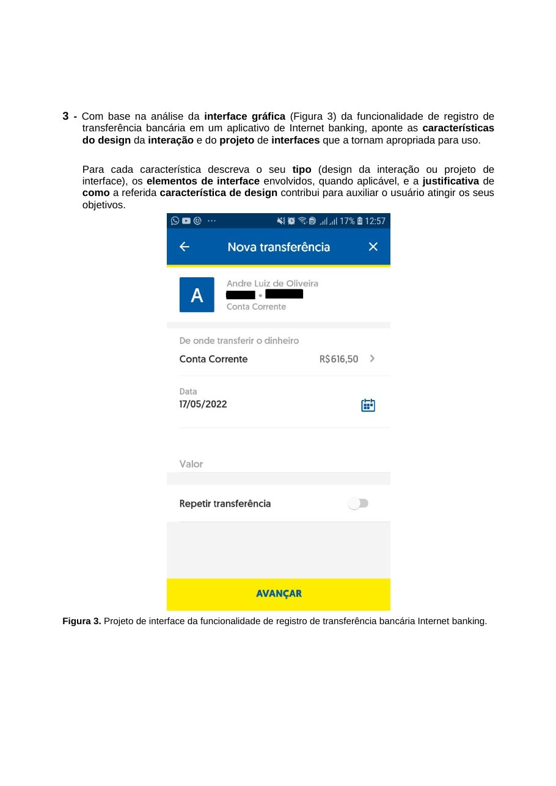
3. Com base na Figura 3, aponte as características do design da interação e do projeto de interfaces que tornam a tela apropriada para uso. Para cada uma, descreva o tipo, os elementos envolvidos e a justificativa.
Resposta-modelo
Conceito cobrado (slides das Aulas 1 e 2): design da interação trata do diálogo entre usuário e sistema (interação = ato de comunicação: o que o usuário pode fazer, de que maneira e em que ordem, e como o sistema responde); projeto de interface trata dos elementos com que o usuário mantém contato físico ou conceitual (Moran): rótulos, botões, campos, ícones, cores, tamanhos. A interface determina os processos de interação possíveis, então as duas decisões se restringem mutuamente. Uma tela é apropriada quando esses dois níveis ajudam o usuário a atingir seu objetivo: poucas opções (menor tempo de escolha), elementos com tamanho adequado (menor esforço para apontar) e símbolos inteligíveis (aprendizagem e uso mais fáceis).
Aplicação à Figura 3:
Característica 1 — Confirmação de quem vai receber o dinheiro.
Tipo: projeto de interface.
Elementos: bloco no topo com o quadrado azul com a inicial "A", o nome "Andre Luiz de Oliveira", dados da conta e "Conta Corrente".
Justificativa: o usuário vê, antes de digitar qualquer coisa, para quem está transferindo. Isso reduz o risco de enviar dinheiro para a pessoa errada e dá segurança para continuar.
Característica 2 — Conta de origem com saldo visível e possibilidade de troca.
Tipo: projeto de interface e design da interação.
Elementos: rótulo "De onde transferir o dinheiro", "Conta Corrente", saldo "R$616,50" e a seta ">".
Justificativa: o rótulo usa linguagem simples, do dia a dia; o saldo à vista permite decidir o valor sem sair da tela; a seta indica que é possível escolher outra conta. O usuário evita tentar transferir mais do que tem.
Característica 3 — Data já preenchida, com calendário.
Tipo: design da interação (valor padrão) apoiado na interface.
Elementos: campo "Data" com "17/05/2022" e ícone de calendário.
Justificativa: no caso mais comum (transferir hoje), o usuário não precisa fazer nada. Quem quer agendar toca no calendário e escolhe a data, sem digitar no formato dd/mm/aaaa. Menos passos e menos erro de formato.
Característica 4 — Poucos campos e um só dado a digitar.
Tipo: design da interação e projeto de interface.
Elementos: o único campo vazio é "Valor"; os demais já vêm preenchidos.
Justificativa: a tela tem poucas opções, o que diminui o tempo de escolha (slide: quanto mais opções, maior o tempo de escolha). O usuário se concentra no que importa: quanto vai transferir.
Característica 5 — Repetição opcional, desligada por padrão.
Tipo: projeto de interface (elemento adequado) e design da interação (opção não obrigatória).
Elementos: rótulo "Repetir transferência" e a chave liga/desliga, desligada.
Justificativa: a chave é o elemento certo para uma escolha de dois estados (sim/não) e mostra o estado atual. Como vem desligada, quem só quer uma transferência não é afetado; quem paga algo todo mês resolve na mesma tela.
Característica 6 — Botão principal destacado que leva a uma etapa seguinte.
Tipo: projeto de interface (destaque) e design da interação (fluxo em etapas).
Elementos: botão amarelo, de largura total, no rodapé, com o rótulo "AVANÇAR".
Justificativa: o botão é grande e fica na área do polegar, fácil de achar e tocar. O rótulo diz que o próximo passo é avançar, e não concluir: a transferência não é feita neste toque, o que permite conferir os dados antes de confirmar (a tela de confirmação não aparece na figura).
Característica 7 — Saídas sempre disponíveis.
Tipo: design da interação.
Elementos: seta de voltar e "X" na barra superior, ao lado do título "Nova transferência".
Justificativa: o usuário pode desistir ou voltar a qualquer momento sem completar a operação; o título informa claramente em que tarefa ele está.
Variação provável: "Diferencie design da interação de projeto de interface e explique por que decisões sobre um restringem o outro." Ou: "Segundo Moran, o que é interface? Diferencie contato físico (motor ou perceptivo) de contato conceitual (interpretação e avaliação), com um exemplo de cada nesta tela."
4ª questão da lista oficial (aparece numerada como "2" por engano) — feedback, implementação da interação e perspectivas
Enunciado resumido: considerando o design da interação e o projeto de interfaces do site de artigos esportivos da Figura 4, responda: (a) como o sistema dá visibilidade (feedback) sobre seu estado em resposta às ações do usuário; (b) como é a implementação da interação na interface; (c) quais perspectivas de interação estão associadas à aplicação, com justificativa.
O que se vê na figura: três capturas da página do mesmo tênis. Na 1ª, a miniatura verde está selecionada e as fotos mostram o tênis verde. Na 2ª, a miniatura branca/cinza está selecionada e as fotos mostram o tênis branco. Na 3ª (página seguinte), ainda com o tênis branco, nenhum tamanho está selecionado e aparece, abaixo do botão, a mensagem em vermelho "Selecione um tamanho para continuar". Em todas: grade de tamanhos de 37 a 48 (algumas com traço diagonal), botões "Adicionar ao carrinho" e "Salvar como favoritos", linha "Compartilhar: WhatsApp, Copiar link", ícones de coração e sacola no topo e o aviso sobre o cupom do aplicativo da loja.
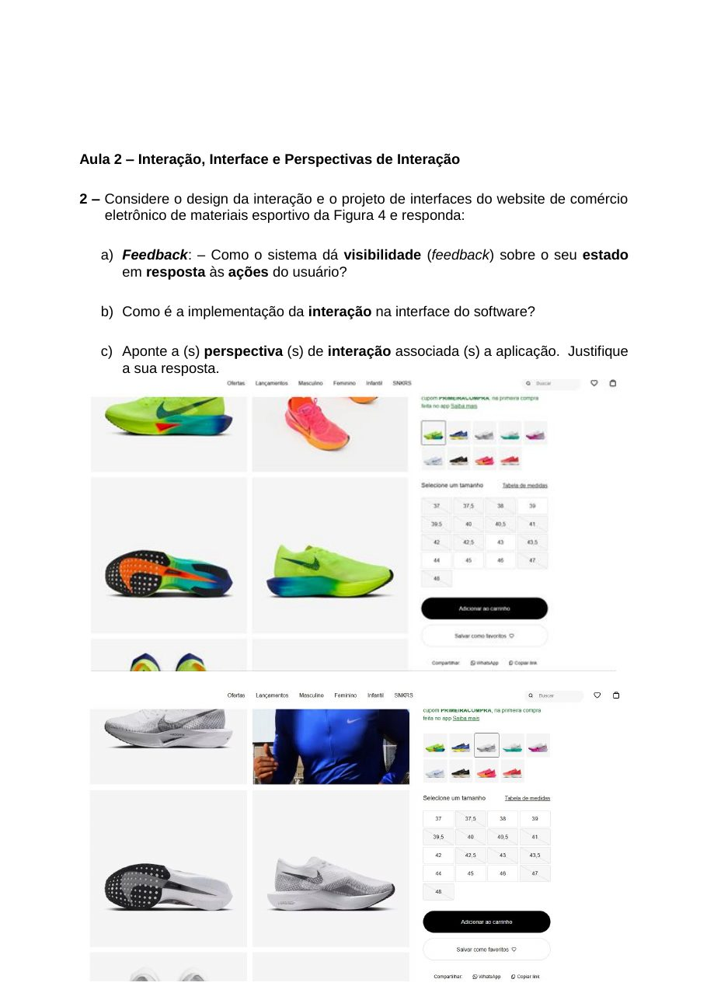
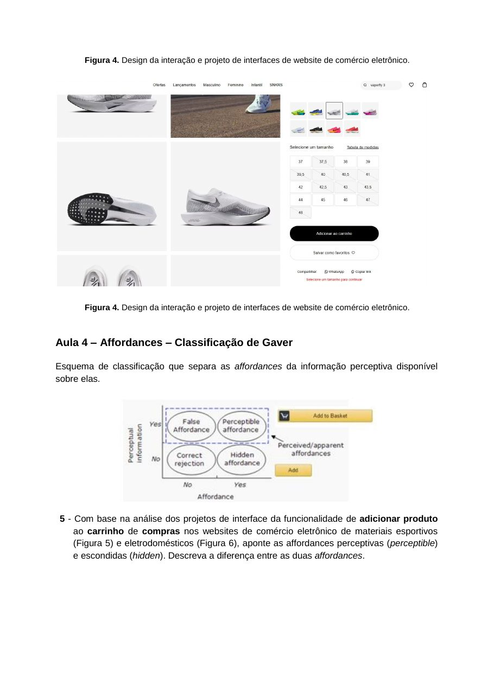
4. Considere o design da interação e o projeto de interfaces da Figura 4 e responda: a) Como o sistema dá visibilidade (feedback) sobre o seu estado em resposta às ações do usuário? b) Como é a implementação da interação na interface do software? c) Aponte a(s) perspectiva(s) de interação associada(s) à aplicação. Justifique.
Resposta-modelo
Conceitos cobrados (slides da Aula 2):
- Feedback: a forma como o sistema dá visibilidade sobre o seu estado em resposta às ações do usuário. Corresponde à etapa de Norman em que o usuário percebe e interpreta a resposta do sistema para avaliar se atingiu o objetivo.
- Implementação da interação na interface: como o diálogo (interação) é concretizado pelos elementos da interface; a interface determina o que o usuário pode fazer, de que maneira e em que ordem.
- Perspectivas de interação (Kammersgaard, 1988): formas diferentes de se comunicar com computadores, que o designer pressupõe ao projetar. Sistema: o usuário se comporta como máquina, de forma disciplinada, com formatos de entrada padronizados e rígidos; objetivo de eficiência e transmissão correta de dados. Parceiro do discurso: o sistema se comporta como um ser humano, capaz de raciocinar, fazer inferências e tomar decisões, em linguagem natural. Ferramenta: o sistema é um instrumento; interação = aplicar a ferramenta a um material e avaliar o resultado, descrita pelo encadeamento de ações do usuário e respostas do sistema. Mídia: o sistema é um meio pelo qual pessoas se comunicam, entre usuários e dos designers para os usuários.
Aplicação à Figura 4:
a) Feedback (ação do usuário + resposta visível + o que ela informa):
- Selecionar a cor: ao clicar numa miniatura, ela recebe um contorno e as fotos grandes passam a mostrar o tênis naquela cor (verde na 1ª captura, branco na 2ª). Informa qual cor está escolhida e como o produto fica nela.
- Tentar adicionar sem tamanho: ao clicar em "Adicionar ao carrinho" sem escolher numeração, aparece em vermelho, abaixo dos botões, "Selecione um tamanho para continuar". Informa que a ação não foi concluída e o que falta fazer.
- Disponibilidade: as numerações com traço diagonal mostram, antes de qualquer clique, que aquele tamanho não está disponível naquela cor.
- Selecionar o tamanho: o tamanho escolhido ganha contorno (isso aparece na Figura 1, tamanho 39; na Figura 4 nenhum tamanho está selecionado).
- A figura não mostra o resultado de uma adição bem-sucedida ao carrinho (por exemplo, número na sacola ou mensagem de confirmação). Na prova, cite só o que está visível ou deixe claro que é o comportamento esperado.
b) Implementação da interação (sequência de passos + elemento usado + resposta do sistema): a compra é feita na própria página do produto, em passos.
- O usuário escolhe a cor clicando numa das miniaturas; o sistema destaca a miniatura e troca as fotos.
- Escolhe o tamanho na grade "Selecione um tamanho" (pode consultar a "Tabela de medidas"); tamanhos riscados não estão disponíveis; o tamanho escolhido fica destacado.
- Clica em "Adicionar ao carrinho". Se pulou o passo 2, o sistema não deixa prosseguir e mostra "Selecione um tamanho para continuar"; o usuário volta à grade, escolhe e clica de novo.
- Ações alternativas na mesma tela: "Salvar como favoritos" (coração), compartilhar o produto por WhatsApp ou copiar o link, buscar outro produto pelo campo de busca e navegar pelo menu (Ofertas, Lançamentos, Masculino...).
Ou seja: a interação é um diálogo curto de seleção direta (clicar em opções visíveis) com resposta imediata a cada passo, e a ordem é controlada pelo sistema, que exige o tamanho antes de adicionar ao carrinho.
c) Perspectivas de interação (a aplicação tem mais de uma):
- Ferramenta: o site funciona como instrumento para o usuário montar a compra. Ele aplica ações sobre o produto (escolher cor, escolher tamanho) e avalia o resultado na hora (fotos mudam, opção fica destacada). A interação é descrita pelo encadeamento de ações do usuário e respostas do sistema, que é a definição de ferramenta. Fator de qualidade: funcionalidades relevantes e facilidade de uso.
- Sistema: a entrada de dados é restrita e padronizada. O tamanho só pode ser escolhido entre as opções da grade, tamanhos indisponíveis vêm riscados e o sistema bloqueia a ação "Adicionar ao carrinho" sem tamanho. O usuário segue um formato rígido, o que busca transmissão correta dos dados e menos erros (pedido com tamanho faltando).
- Mídia: (1) entre usuários: "Compartilhar: WhatsApp / Copiar link" permite que uma pessoa envie o produto a outra, com o site como meio; (2) do designer para o usuário: a interface transmite mensagens da loja, como o aviso do cupom de desconto no aplicativo e o "26% off" (visível na Figura 1).
- Parceiro do discurso: não se aplica pelo que aparece na figura: não há conversa em linguagem natural com o sistema (chat, assistente) nem o sistema raciocinando e respondendo como um humano. A mensagem "Selecione um tamanho para continuar" é texto fixo de erro, não um diálogo.
Variação provável: "Descreva as quatro perspectivas de interação de Kammersgaard e o fator de qualidade mais evidente em cada uma" (sistema: eficiência; parceiro do discurso: adequação da interpretação e geração de textos; ferramenta: funcionalidades relevantes e facilidade de uso; mídia: qualidade da comunicação mediada e entendimento mútuo). Ou: "Diferencie a perspectiva de mídia da de parceiro do discurso" e "O que é feedback e por que ele é necessário para o usuário avaliar se atingiu seu objetivo?"
Aula 3 — Affordances: Definições (Gibson, Norman, significantes e falsas affordances)
Affordance — definição do professor
Affordance: “na área de IHC significa características (físicas e/ou simbólicas) de um objeto capazes de revelar aos usuários o que se pode fazer com ele (possibilidades de ação).”
“Affordances definem as ações possíveis.” Affordance “é uma indicação convincente de como algo funciona, incluindo tanto a percepção do usuário quanto sua função real.”
- Uma caixa de texto possibilita (affords) escrever.
- Um botão possibilita pressioná-lo para acionar uma operação do sistema.
- O desenho de uma porta indica a possibilidade de puxar ou empurrar.
- Texto destacado em azul numa página web indica que dá para clicar e acessar outra página; em roxo, indica que o link já foi acessado.
Affordance real — Gibson (1977/1979)
O termo vem da Psicologia: James Gibson, estudando a percepção visual de animais, inventou a palavra.
Para reproduzir na prova: “Para Gibson, as affordances de um ambiente são as possibilidades de ações que são oferecidas ao animal, sejam elas para o bem ou para o mal.” Em IHC: “as possibilidades de ação que são fornecidas ou oferecidas ao usuário, sejam elas para o bem (ações válidas) ou para o mal (ações que induzem a erros).”
- “Affordance é um relacionamento físico entre um ator (animal ou pessoa/usuário) e artefatos físicos do ambiente (mundo) que reflete as ações que se pode fazer com esses artefatos.”
- “Uma affordance não precisa estar visível, ser conhecida ou até mesmo desejável.”
- Affordance real: “conjunto de características de um objeto físico que determina ou sugere ao observador o tipo de ação/uso que se pode fazer com o objeto”, ou seja, características que indicam “de forma natural, intuitiva” o que se pode fazer.
- É independente da experiência, conhecimento, cultura ou capacidade do ator de perceber. A existência é binária.
- Ênfase: utilidade — “Para que serve?”.
Affordance percebida ou perceptiva — Norman (1988)
Para reproduzir na prova: “Características (físicas e/ou simbólicas) de um objeto capazes de revelar aos seus usuários as operações e manipulações que eles podem fazer com ele.” “Refere-se ao aspecto de design de um objeto que sugere como ele deve ser usado, uma pista visual de sua função e uso.”
- “Quando se obtém vantagens das affordances, o usuário sabe o que fazer apenas olhando: não é necessária nenhuma imagem, rótulo ou instrução.”
- São “possibilidades de ações percebidas, ou seja, somente ações nas quais os usuários consideram possíveis”.
- “Se uma affordance não pode ser percebida, ela simplesmente não existe.” O esforço do designer deve ser tornar visível a affordance.
- “Estão associadas à experiência prévia do usuário.” Em telas, são percebidas “de acordo com convenções, restrições e feedback visual, auditivo e, às vezes, tátil”.
- “São convenções aprendidas que são reveladas ou indicadas por pistas estabelecidas e consistentes, porém artificiais (passível de design).”
- Ênfase: usabilidade — “Como devo usar?”.
| Affordance — Gibson | Affordance — Norman |
|---|---|
| Possibilidades de ação no ambiente em relação às capacidades de ação de um ator | Propriedades percebidas que podem não existir realmente; sugestões ou dicas sobre como usar as propriedades |
| Independente da experiência, conhecimento, cultura ou capacidade do ator de perceber | Pode depender da experiência, conhecimento ou cultura do ator |
| A existência é binária: existe uma affordance ou não existe | Pode tornar uma ação difícil ou fácil |
| Utilidade: para que serve? | Usabilidade: como devo usar? |
Como se complementam: “Nós projetamos para a utilidade ao criar affordances que atendam aos objetivos do usuário e nós melhoramos a usabilidade ao projetar as informações que especificam essas affordances corretamente (sombras e volumes em botões, ou a ‘mãozinha’ para indicar que algo é clicável).”
Significante (Norman)
Para reproduzir na prova: “Tipo de indicação (pista) perceptível sobre a affordance de um determinado objeto.” “Sinal (pista visual) que uma determinada affordance pode fornecer a uma pessoa, que é a parte perceptível de uma affordance.”
- “Affordances determinam as possibilidades de ações em um design — O que eu posso fazer?”
- “Significantes comunicam onde as ações estão localizadas e como executá-las — Onde está a ação?”
- Ligar/desligar são as affordances do interruptor; “ON” e “OFF” são os sinais (significantes).
- “Significantes podem existir sem a presença de affordances” (faixa de pedestres: indica onde é seguro atravessar, mas dá para atravessar em qualquer ponto) “e affordances podem existir sem a presença de significantes” (a parte significante fica invisível).
Falsa affordance
Para reproduzir na prova: “Affordance falsa: o ator percebe uma função que não existe.”
- Ex. (Barbosa e Silva): “357” como texto simples → ler um número (ok); dentro de uma caixa com cara de campo → “editar um número?” (affordance ruim ou falsa); com cara de botão → “pressionar um botão?” (affordance ruim ou falsa).
- Ex.: “elementos que se assemelham a botões em um website e-commerce, mas não são clicáveis”.
Teste-se
1. Qual é a definição de affordance em IHC apresentada em aula?
- A sequência de passos que o usuário executa para atingir um objetivo.
- Características (físicas e/ou simbólicas) de um objeto capazes de revelar aos usuários o que se pode fazer com ele.
- A resposta do sistema depois de uma ação do usuário.
- O sinal que indica onde a ação está localizada.
Ver resposta
Letra b. É a definição do slide. A letra a descreve uma tarefa ou plano de ação; a c é feedback; a d é a definição de significante, que é a pista da affordance e não a affordance.
2. “Uma affordance não precisa estar visível, ser conhecida ou até mesmo desejável.” Essa afirmação pertence a:
- Gibson.
- Norman.
- Hartson.
- Nielsen.
Ver resposta
Letra a. Para Gibson, a affordance é um relacionamento entre ator e ambiente que existe naturalmente. Norman diz o oposto (se não é percebida, não existe). Hartson classifica affordances e Nielsen propõe heurísticas, sem essa tese.
3. Qual par “autor — ênfase” está correto?
- Gibson — usabilidade (“como devo usar?”).
- Norman — utilidade (“para que serve?”).
- Gibson — utilidade; Norman — usabilidade.
- Gibson e Norman — estética da interface.
Ver resposta
Letra c. Gibson enfatiza tornar clara a utilidade das coisas; Norman, melhorar a usabilidade. As letras a e b invertem os autores (confusão mais comum). Estética não é a ênfase de nenhum dos dois.
4. Qual afirmação diferencia corretamente affordance de significante?
- São sinônimos; Norman só trocou o nome em 2013.
- Affordance é a pista visual; significante é a ação possível.
- Significante só existe quando existe affordance.
- Affordance responde “o que eu posso fazer?”; significante responde “onde está a ação e como executá-la?”.
Ver resposta
Letra d. Norman criou o termo significante justamente para separar o sinal da affordance, então não são sinônimos (a). A letra b inverte os conceitos. A c é falsa: a faixa de pedestres é significante sem affordance que impeça atravessar em outro lugar.
5. A faixa de pedestres indica onde é seguro atravessar, mas nada impede atravessar em outro ponto. Que conceito ela ilustra?
- Falsa affordance.
- Significante que existe sem affordance.
- Affordance real de Gibson.
- Affordance sem significante.
Ver resposta
Letra b. É o exemplo de Norman: o sinal existe, mas não há affordance exclusiva naquele ponto. Não é falsa, porque atravessar ali é possível. Affordance sem significante seria o contrário: a ação existe e a pista é invisível.
6. “O ator percebe uma função que não existe.” Essa é a definição de:
- Affordance escondida.
- Affordance negativa.
- Falsa affordance.
- Rejeição correta.
Ver resposta
Letra c. Na escondida, a função existe e não é percebida (o contrário). Na negativa, a função existe mas está bloqueada de propósito. Na rejeição correta, não há função nem pista.
7. Por que o ícone de balão de fala para “mensagens” é classificado como affordance percebida (Norman) e não real (Gibson)?
- Porque é uma propriedade física do celular.
- Porque existe independentemente de o usuário conhecê-lo.
- Porque não tem nenhuma função.
- Porque é uma convenção aprendida (herdada dos quadrinhos), que depende da experiência prévia do usuário.
Ver resposta
Letra d. A affordance percebida depende de experiência, cultura e convenções. As letras a e b descrevem características da visão de Gibson; a c descreveria uma falsa affordance.
8. Segundo a aula, como as visões de Gibson e Norman se complementam em IHC?
- Projetamos a utilidade criando affordances que atendam aos objetivos do usuário e melhoramos a usabilidade projetando corretamente as informações que especificam essas affordances.
- Gibson vale para interfaces digitais e Norman só para objetos físicos.
- Basta criar affordances; a informação perceptiva é irrelevante.
- Basta criar pistas visuais, mesmo que a ação não exista.
Ver resposta
Letra a. É a frase do slide (com exemplos como sombra em botões e a “mãozinha” do cursor). A letra b inverte as origens (Gibson vem da percepção de animais no mundo físico). A c ignora Norman. A d gera falsas affordances.
9. Defina affordance segundo Gibson e segundo Norman e aponte três diferenças entre as duas visões.
Resposta-modelo
Gibson: as affordances de um ambiente são as possibilidades de ação oferecidas ao ator (animal ou usuário), sejam para o bem (ações válidas) ou para o mal (ações que induzem a erros). É um relacionamento físico entre ator e ambiente.
Norman: características físicas e/ou simbólicas de um objeto capazes de revelar aos usuários as operações e manipulações que podem fazer com ele; o aspecto de design que sugere como o objeto deve ser usado.
Diferenças: (1) para Gibson a affordance não precisa ser visível nem conhecida; para Norman, se não pode ser percebida, não existe. (2) Gibson: independe da experiência e da cultura; Norman: pode depender delas (convenções aprendidas). (3) Gibson: existência binária e foco na utilidade (“para que serve?”); Norman: pode tornar a ação mais fácil ou mais difícil e foca na usabilidade (“como devo usar?”).
10. Diferencie affordance de significante e dê um exemplo de interface em que os dois aparecem.
Resposta-modelo
Affordance é a possibilidade de ação em um design (“o que eu posso fazer?”). Significante é a indicação (pista) perceptível sobre a affordance, a parte perceptível dela, que comunica onde a ação está e como executá-la (“onde está a ação?”). Um pode existir sem o outro: a faixa de pedestres é um significante sem affordance que impeça outra ação, e há affordances sem significante (sinal invisível).
Exemplo: no iFood, a affordance é adicionar o prato à sacola; o botão vermelho com o rótulo “Adicionar” é o significante dessa affordance.
11. Defina falsa affordance, explique por que ela prejudica o usuário e dê um exemplo.
Resposta-modelo
Definição: falsa affordance ocorre quando o ator percebe uma função que não existe — há pista perceptiva de uma ação que na verdade não é possível.
Prejuízo: o usuário tenta uma ação que não acontece, perde tempo e erra, e passa a desconfiar da interface.
Exemplo: num site de loja, elementos com aparência de botão (fundo colorido, cantos arredondados) que não são clicáveis; ou um número exibido dentro de uma caixa com cara de campo de texto, sugerindo que dá para editá-lo.
Aula 4 — Affordances: Classificações de Gaver (1991) e Hartson (2003)
Classificação de Gaver (1991)
Para reproduzir na prova: “Gaver contribuiu com uma estrutura para separar as affordances da informação perceptiva disponível sobre elas.” Dois eixos: a affordance existe? Há informação perceptiva sobre ela?
| Affordance: não | Affordance: sim | |
|---|---|---|
| Informação perceptiva: sim | Falsa | Perceptível (perceptiva) |
| Informação perceptiva: não | Rejeição correta | Escondida / oculta (hidden) |
- Perceptiva: “características perceptivas do próprio objeto indicam quais possibilidades de ações estão disponíveis e são desejáveis.” Ex.: maçaneta, botão de emergência.
- Escondida (oculta): “existe quando a affordance está lá, mas a informação perceptiva que a especifica não está.” “Em interfaces sem affordances óbvias, usuários frequentemente devem confiar em sua experiência e tentativa e erro para determinar as ações possíveis.” Ex.: interruptor sem indicação de ligado/desligado; menus suspensos “suspeitos”.
- Falsa: “existe quando não há possibilidade de ação, mas há a informação perceptiva que a especifica.” “Característica de um objeto que sugere aos usuários que eles podem fazer algo que não podem.” Ex.: texto sublinhado que não é link.
- Rejeição correta: “existe quando não há affordance e nenhuma informação perceptiva para especificá-la.”
No quadro da lista, a área tracejada que cobre falsa + perceptível é chamada de affordances percebidas/aparentes: as que o usuário vê, existam ou não.
Classificação de Hartson (2003) — definições da lista oficial
Hartson “revisou as teorias anteriores”, propôs uma metodologia para projetar um produto em termos de affordances, “renomeou as categorias que já existiam e criou duas novas: a sensorial e a funcional”. Quatro categorias: funcional, física, cognitiva e sensorial. A aula soma duas do design de interfaces: padrão e negativa.
- Funcional: “permite que o usuário complete uma atividade e atinja seu objetivo.” “Características de design que auxiliam os usuários a realizarem suas tarefas (utilidade de uma função do sistema).” O designer deve começar por ela.
- Física: “affordances que podem contribuir para aumentar o desempenho de usuários experientes e auxiliar novatos a se familiarizarem com o produto. Características perceptivas do próprio objeto indicam quais possibilidades de ações estão disponíveis.” Indica, “através de características físicas (tamanho, textura, posicionamento no layout), como os usuários deverão manipular os elementos”. “Sempre que textos aparecem em affordances, como botões, elas são chamadas de affordances explícitas.”
- Cognitiva: affordances que “asseguram que o usuário compreenda com facilidade como deverá interagir com os elementos da interface”. Ex.: “o rótulo gráfico anuncia claramente o que irá acontecer caso o usuário pressione uma determinada tecla ou botão”; “texto rotulado (tooltip) que indica as informações que o usuário deverá preencher em cada campo”. Mesma ideia da affordance percebida de Norman.
- Sensorial: “servem como apoio para affordances cognitivas e físicas.” Aparecem na forma “visual (algo brilhando), auditiva (algo apitando) ou através do tato (algo vibrando)”. Ex.: som de erro do Windows, barras de progresso, borda realçada na opção selecionada.
- Padrão: “uso de convenções do mundo real para solicitar que os usuários executem determinadas ações na interface.” Ex.: ícone de “hamburger” para menus.
- Negativa: “affordances que têm o propósito de impedir os usuários de procederem para um objetivo quando é necessário que eles forneçam mais dados antes de continuar, prevenindo-os de cometer erros.” Ex.: botão “Entrar” do Twitter desabilitado com a senha em branco.
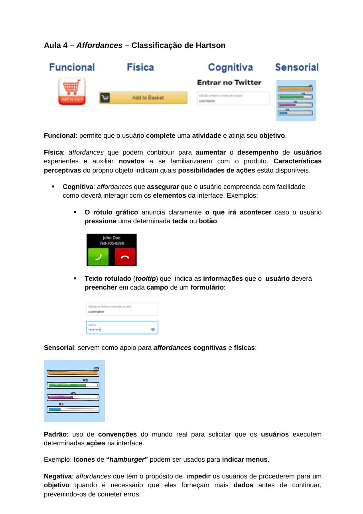
Combinação (tela de chamada recebida): atender e rejeitar = funcionais; botão em degradê = física; rótulo gráfico, rótulo textual, seta e formato de etiqueta = cognitivas; cor verde, vibração e toque = sensoriais.
| Tipo | Pergunta que responde | Palavra-chave para justificar |
|---|---|---|
| Funcional | Que tarefa o usuário consegue concluir? | completar a atividade, atingir o objetivo, utilidade |
| Física | Como manipular o elemento? | tamanho, textura, posição no layout, rótulo explícito |
| Cognitiva | O usuário entende o que vai acontecer? | rótulo, ícone, tooltip, instrução |
| Sensorial | O usuário consegue perceber? | cor, brilho, som, vibração; apoio às outras |
| Padrão | Segue uma convenção conhecida? | convenção, hambúrguer, lupa, carrinho |
| Negativa | Impede avançar sem os dados? | bloqueio, desabilitado, prevenir erro |
Teste-se
1. Qual é o critério da classificação de Gaver (1991)?
- O tipo de sentido envolvido (visão, audição, tato).
- Separar as affordances da informação perceptiva disponível sobre elas.
- A ordem em que o designer deve projetar as affordances.
- A heurística de usabilidade que cada affordance atende.
Ver resposta
Letra b. Gaver cruza “a affordance existe?” com “há informação perceptiva?”. A letra a lembra a affordance sensorial de Hartson; a c é a recomendação de Hartson (começar pela funcional); a d mistura com Nielsen.
2. A affordance existe, mas não há informação perceptiva que a indique. Na classificação de Gaver, ela é:
- Falsa.
- Rejeição correta.
- Escondida (oculta).
- Perceptível.
Ver resposta
Letra c. Falsa é o inverso (há informação, não há ação). Rejeição correta: não há ação nem informação. Perceptível: há ação e há informação.
3. Um texto sublinhado que não é link é falsa affordance e não escondida porque:
- Há informação perceptiva (o sublinhado) indicando uma ação que não existe.
- A ação existe, mas não há nenhuma pista visual.
- Ele impede o usuário de avançar até preencher dados.
- Ele segue uma convenção do mundo real.
Ver resposta
Letra a. Na falsa, a pista existe e a ação não. A letra b define escondida; a c define negativa; a d define padrão (e, aqui, a convenção é usada de forma enganosa).
4. Quais categorias Hartson criou (e não apenas renomeou)?
- Física e cognitiva.
- Padrão e negativa.
- Falsa e escondida.
- Sensorial e funcional.
Ver resposta
Letra d. Física e cognitiva foram renomeadas; padrão e negativa vêm do design de interfaces (slides “UI Design”); falsa e escondida são de Gaver.
5. Qual affordance de Hartson “guia o projeto com o enfoque na usabilidade, na mesma ideia de Norman na sua affordance percebida”?
- Cognitiva.
- Física.
- Funcional.
- Negativa.
Ver resposta
Letra a. Está no slide da affordance cognitiva. Física trata de tamanho, textura e posição; funcional, de completar a tarefa (utilidade); negativa, de bloquear para prevenir erros.
6. Qual afirmação diferencia corretamente affordance física de cognitiva?
- Física é som e vibração; cognitiva é cor.
- Física indica como manipular o elemento por tamanho, textura e posição no layout; cognitiva garante que o usuário compreenda com facilidade como interagir (rótulos, tooltips, instruções).
- Física existe só em objetos reais; cognitiva só em telas.
- Física impede o usuário de avançar; cognitiva permite concluir a tarefa.
Ver resposta
Letra b. A letra a descreve sensorial; a c é falsa (Hartson aplica física a botões na tela); a d mistura negativa e funcional.
7. Segundo Hartson, a affordance sensorial:
- Substitui as affordances cognitivas e físicas.
- É a primeira a ser projetada, antes da funcional.
- Serve como apoio para as affordances cognitivas e físicas e aparece na forma visual, auditiva ou tátil.
- É sinônimo de falsa affordance.
Ver resposta
Letra c. É a definição do slide e da lista. Ela apoia, não substitui (a). O projeto começa pela funcional (b). Não tem relação com falsa (d).
8. Botão “Entrar” desabilitado até o usuário digitar a senha. Por que é affordance negativa e não falsa?
- Porque não existe nenhuma ação de entrar no sistema.
- Porque a ação existe e foi bloqueada de propósito, com aviso visual, até o usuário fornecer os dados, prevenindo erro.
- Porque segue uma convenção do mundo real.
- Porque não há nenhuma informação perceptiva sobre o botão.
Ver resposta
Letra b. A falsa exige que a ação não exista (a); aqui ela existe. A letra c define padrão e a d descreve escondida ou rejeição correta.
9. Defina e diferencie as affordances perceptível, escondida e falsa segundo Gaver. Dê um exemplo de cada.
Resposta-modelo
Gaver separa as affordances da informação perceptiva disponível sobre elas.
Perceptível: a affordance existe e as características perceptivas do próprio objeto indicam a ação. Ex.: botão “Adicionar ao carrinho” com rótulo.
Escondida: a affordance existe, mas a informação perceptiva que a especifica não está presente; o usuário depende de experiência ou tentativa e erro. Ex.: arrastar uma mensagem para responder no WhatsApp.
Falsa: não há possibilidade de ação, mas há informação perceptiva sugerindo que há. Ex.: texto sublinhado que não é link.
Diferença: perceptível e escondida existem de fato e diferem pela presença da informação perceptiva; a falsa tem a informação, mas não tem a ação.
10. Defina as affordances funcional, física, cognitiva, sensorial, padrão e negativa e indique por qual delas, segundo Hartson, o designer deve começar o projeto.
Resposta-modelo
Funcional: permite que o usuário complete uma atividade e atinja seu objetivo (utilidade da função). Física: por características físicas (tamanho, textura, posição no layout), indica como manipular o elemento; ajuda experientes a ganhar desempenho e novatos a se familiarizar. Cognitiva: garante que o usuário compreenda com facilidade como interagir (rótulo gráfico, tooltip). Sensorial: apoia as cognitivas e físicas de forma visual, auditiva ou tátil. Padrão: usa convenções para pedir ações (hambúrguer = menu). Negativa: impede o usuário de avançar enquanto não fornece os dados necessários, prevenindo erros.
O designer deve começar pela funcional (funcionalidade, utilidade e propósito do produto) e depois pensar nas cognitivas.
11. Um botão com o rótulo “Confirmar” e um texto de ajuda “Digite somente números” ao lado de um campo. Classifique cada um segundo Hartson e justifique, explicando por que não são do mesmo tipo.
Resposta-modelo
Botão “Confirmar”: affordance física, uma vez que o botão, com tamanho, posição e rótulo, torna o resultado da ação explícito (affordance explícita) — mesmo raciocínio da resposta oficial da Q8 (“AVANÇAR”).
Texto “Digite somente números”: affordance cognitiva, uma vez que é um texto rotulado que indica a informação que o usuário deve preencher no campo, assegurando que ele compreenda como interagir.
Por que diferem: o botão é o elemento que se manipula e cuja forma e rótulo mostram a ação; o texto de ajuda não é manipulado, apenas explica.
Aula 5 — Como projetar melhores affordances: heurísticas de Nielsen, Lei de Fitts e Material Design
Como projetar melhores affordances
Cuidado com as affordances de botões, ícones, animações, notificações, campos de formulário e fotos. Como usar corretamente: siga convenções/padrões; seja simples (não invente coisas complexas); utilize rótulos textuais; conheça seus usuários. “É necessário fornecer as ‘pistas’ (significantes) corretas e feedback imediato e efetivo.”
- Compreender os pensamentos dos usuários por meio de UX Research.
- Utilizar princípios de design para criar affordances claras e logicamente organizadas.
- Utilizar significantes para dirigir os usuários às affordances.
- Seguir convenções que façam os usuários reconhecerem as affordances (mão para cima = mais, para baixo = menos → posição vertical representa intensidade).
- Aplicar a Lei de Fitts.
- Explorar o Material Design.
Princípios da Gestalt (“o todo é maior que a soma das partes”; relacionados à capacidade de reconhecimento de padrões do sistema visual humano): proximidade, similaridade, simetria, boa continuidade (alinhamento), fecho, destino comum, região comum, conectividade, pregnância (simplicidade), segregação e unidade.
As 10 heurísticas de usabilidade de Nielsen
“Auxiliam o design da IHC por apontarem problemas e apresentarem soluções para problemas recorrentes na prática.” Ordem e redação dos slides:
- Visibilidade do estado do sistema — “manter os usuários informados sobre o que está acontecendo por meio de feedback apropriado em um intervalo de tempo razoável.” App: iFood mostra “Em preparo → Saiu para entrega”.
- Correspondência entre sistema e mundo real — “incorporar a linguagem do usuário: palavras, frases e conceitos familiares ao invés de jargões internos e seguir convenções do mundo real.” App: ícone de carrinho e “Finalizar compra” numa loja online.
- Equilíbrio entre controle e liberdade do usuário — “fornecer alternativas e saídas de emergência, com possibilidades de desfazer ações indesejadas e refazer ações.” App: “Desfazer” após enviar no Gmail.
- Consistência e padronização — “usuários não devem se perguntar se palavras, situações ou ações diferentes possuem o mesmo significado. Padronize ações iguais e use elementos diferentes para indicar ações diferentes.” App: botões de tamanho todos iguais numa loja de tênis.
- Prevenção de erros — “eliminar condições propensas a erros, verificar essas condições e apresentar uma opção de confirmação antes de executarem a ação.” App: botão “Entrar” desabilitado sem senha; autocompletar; formato de telefone da Uber.
- Reconhecimento ao invés de memorização — “minimizar o esforço de memória dos usuários, tornando os objetos, as ações e opções visíveis.” App: “Pedir de novo” com pedidos anteriores no iFood.
- Flexibilidade e eficiência de uso — “oferecer atalhos e caminhos alternativos para realizar uma mesma tarefa e permitir que personalizem ações frequentes.” App: curtir no Instagram pelo coração ou por duplo toque.
- Design estético e minimalista — “não deve conter informações irrelevantes ou raramente necessárias; cada unidade extra de informação reduz sua visibilidade relativa.” App: página inicial do Google.
- Ajuda para reconhecer e recuperar de erros — “mensagens de erro em linguagem simples (sem códigos indecifráveis), indicar precisamente o problema e sugerir uma solução de forma construtiva.” App: “Senha incorreta. Esqueceu a senha?” no Instagram.
- Ajuda e documentação — “fornecer documentação para auxiliar os usuários a compreenderem como completar as suas tarefas sempre que necessário.” App: instrução “Celular, e-mail ou nome de usuário” no login (exemplo do slide).
Lei de Fitts
Para reproduzir na prova: “Quanto maior o tamanho do elemento de interface, menor será o tempo que o usuário levará para apontar para o objeto na tela.” Aplicá-la auxilia os usuários a executarem as ações no sistema. (Complemento: Fitts também considera a distância até o alvo.)
Material Design e esqueumorfismo
Material Design: “linguagens de design orientadas à plataforma, criadas por empresas como Google e Meta, para apoiar a experiência do usuário em interações em dispositivos com telas sensíveis ao toque, por meio de recursos ricos em ‘dicas’ (sinais) e movimentos naturais que imitam objetos reais.” Surgiu em 2014 no Google (artigo “Quantum Paper”). Objetivo: “saída visual de alta qualidade, consistente entre múltiplas plataformas (Android e iOS)”, com componentes “que se comportam como objetos do mundo real”. Equilibra estética e funcionalidade.
Princípios:
- Metáfora do material: “projete interfaces que forneçam conceitos familiares aos usuários para facilitar o reconhecimento de affordances” e “use um design adaptativo: cores, ícones e proporções espaciais devem ser consistentes por todos os dispositivos”.
- Negrito, gráfico e intencional: “uso de negrito, elementos gráficos que adicionam significados e que são agradáveis aos ‘olhos’”.
- Movimento: “mostre aos usuários as mudanças resultantes de suas ações”.
Esqueumorfismo: “elementos de interface que imitam as suas contrapartes no mundo real na aparência ou na maneira como o usuário pode interagir” (lixeira = excluir, disquete = salvar). Está relacionado ao conceito de affordances de Gibson. Diferença: o esqueumorfismo segue convenções culturais; no Material Design se aplicam “mapeamentos e leis naturais do mundo físico, principalmente iluminação e movimento”.
Quadro comparativo — conceitos parecidos (Aulas 3 a 5)
| Conceito A | Conceito B | Diferença em uma linha |
|---|---|---|
| Affordance real (Gibson) | Affordance percebida (Norman) | Gibson: existe mesmo invisível, independe da cultura, foco em utilidade. Norman: se não é percebida não existe, depende de experiência, foco em usabilidade. |
| Affordance | Significante | Affordance = o que posso fazer. Significante = pista de onde está a ação e como executá-la. |
| Perceptível (Gaver) | Escondida (Gaver) | As duas existem; na perceptível há informação perceptiva, na escondida não há. |
| Escondida | Falsa | Escondida: há ação, falta a pista. Falsa: há pista, falta a ação. |
| Falsa | Rejeição correta | As duas não têm ação; a falsa engana com uma pista, a rejeição correta não tem pista. |
| Falsa (Gaver) | Negativa (Hartson/UI) | Falsa: ação não existe e a pista engana. Negativa: ação existe, bloqueada de propósito para prevenir erro. |
| Física | Cognitiva | Física: tamanho, textura, posição, botão com texto (explícita). Cognitiva: rótulo, tooltip, instrução que faz compreender. |
| Cognitiva | Sensorial | Cognitiva faz entender; sensorial faz perceber (cor, som, vibração) e apoia cognitiva e física. |
| Funcional | Física | Funcional: a tarefa que se conclui (utilidade). Física: como manipular o elemento que a dispara. |
| Padrão | Cognitiva | Padrão: reconhecida por convenção (hambúrguer). Cognitiva: explicada por rótulo ou dica. |
| Prevenção de erros | Ajuda a reconhecer e recuperar de erros | Prevenção age antes do erro; recuperação age depois, com mensagem clara e solução. |
| Visibilidade do estado do sistema | Ajuda e documentação | Visibilidade informa o que está acontecendo (feedback); documentação ensina como completar a tarefa. |
| Reconhecimento ao invés de memorização | Consistência e padronização | Reconhecimento: opções visíveis para não depender da memória. Consistência: o mesmo elemento significa sempre a mesma coisa. |
| Heurística de Nielsen | Princípio da Gestalt | Heurística: regra para apontar problemas de usabilidade e soluções recorrentes. Gestalt: como o sistema visual reconhece padrões (proximidade, similaridade...). |
| Heurística de Nielsen | Princípio de Material Design | Heurística é regra geral de usabilidade; Material Design é linguagem visual de plataforma (metáfora do material, luz, movimento). |
| Lei de Fitts | Heurística | Fitts é uma lei sobre tempo de apontar (maior = mais rápido); heurística é diretriz de usabilidade. |
| Esqueumorfismo | Material Design | Esqueumorfismo imita o objeto real (convenção cultural); Material Design aplica leis físicas de luz e movimento. |
Teste-se
1. Segundo a aula, qual é o papel das heurísticas de usabilidade de Nielsen?
- Medir o tempo que o usuário leva para apontar para um elemento.
- Auxiliar o design da IHC apontando problemas e apresentando soluções para problemas recorrentes na prática.
- Definir a aparência dos componentes em telas de toque.
- Explicar como o sistema visual agrupa elementos próximos.
Ver resposta
Letra b. É a frase do slide. A letra a é a Lei de Fitts; a c, o Material Design; a d, a Gestalt (proximidade).
2. “O design de interfaces deve minimizar o esforço de memória dos usuários, tornando os objetos, as ações e opções visíveis.” Qual heurística?
- Consistência e padronização.
- Design estético e minimalista.
- Reconhecimento ao invés de memorização.
- Visibilidade do estado do sistema.
Ver resposta
Letra c. “Visível” aparece também em “visibilidade do estado”, mas aquela trata de informar o que está acontecendo (feedback). Consistência trata de padronizar significados; minimalismo, de remover informação irrelevante.
3. Qual afirmação diferencia corretamente prevenção de erros de ajuda para reconhecer e recuperar de erros?
- Prevenção elimina condições propensas a erros antes da ação; a recuperação usa mensagens simples que indicam o problema e sugerem solução depois que o erro ocorre.
- São a mesma heurística com nomes diferentes.
- Prevenção trata de desfazer ações; recuperação trata de confirmar ações.
- Prevenção é sobre documentação; recuperação é sobre atalhos.
Ver resposta
Letra a. Antes x depois do erro. Desfazer é controle e liberdade (c). Documentação e atalhos são outras heurísticas (d).
4. Associe a definição ao conceito: “quanto maior o tamanho do elemento de interface, menor será o tempo que o usuário levará para apontar para o objeto na tela”.
- Princípio da similaridade (Gestalt).
- Flexibilidade e eficiência de uso (Nielsen).
- Affordance física (Hartson).
- Lei de Fitts.
Ver resposta
Letra d. É a definição do slide. A affordance física também fala de tamanho, mas para indicar como manipular, não para medir tempo de apontar. Flexibilidade trata de atalhos.
5. Qual afirmação diferencia corretamente esqueumorfismo de Material Design?
- Os dois são o mesmo conceito, criado pelo Google em 2014.
- O esqueumorfismo imita objetos reais seguindo convenções culturais (lixeira, disquete); o Material Design aplica leis naturais do mundo físico, sobretudo iluminação e movimento.
- O esqueumorfismo é exclusivo do Android; o Material Design é exclusivo do iOS.
- O Material Design proíbe qualquer referência ao mundo real.
Ver resposta
Letra b. É o contraste do slide. O Material Design busca consistência entre plataformas (c errada) e usa a metáfora do material (d errada).
6. “Mostre aos usuários as mudanças resultantes de suas ações” é um princípio de:
- Material Design.
- Gestalt.
- Classificação de Gaver.
- Lei de Fitts.
Ver resposta
Letra a. Está entre os princípios de Material Design (movimento). Lembra a heurística de visibilidade do estado do sistema, mas, como frase de princípio, foi apresentada no bloco de Material Design.
7. “Fornecer alternativas e saídas de emergência, com possibilidades de desfazer ações indesejadas e refazer ações.” Qual heurística?
- Prevenção de erros.
- Flexibilidade e eficiência de uso.
- Equilíbrio entre controle e liberdade do usuário.
- Ajuda e documentação.
Ver resposta
Letra c. Desfazer e refazer são a marca dessa heurística. Flexibilidade trata de atalhos e caminhos alternativos para a mesma tarefa, não de desfazer.
8. “Mover a mão para cima significa mais e para baixo menos, motivo pelo qual é apropriado usar a posição vertical para representar intensidade.” Esse exemplo ilustra qual caminho para projetar melhores affordances?
- Aplicar a Lei de Fitts.
- Seguir convenções que façam os usuários reconhecerem as affordances.
- Fazer UX Research.
- Usar o princípio de fecho da Gestalt.
Ver resposta
Letra b. É o exemplo do slide “4) Convenções”. Não trata de tamanho (Fitts), pesquisa com usuários ou fechamento de formas.
9. Liste as 10 heurísticas de usabilidade de Nielsen com o significado de cada uma.
Resposta-modelo
1) Visibilidade do estado do sistema: manter o usuário informado do que acontece, com feedback em tempo razoável. 2) Correspondência entre sistema e mundo real: usar a linguagem e as convenções do usuário, sem jargão interno. 3) Controle e liberdade do usuário: saídas de emergência, desfazer e refazer. 4) Consistência e padronização: ações iguais com a mesma aparência; elementos diferentes para ações diferentes. 5) Prevenção de erros: eliminar condições propensas a erro e pedir confirmação antes da ação. 6) Reconhecimento ao invés de memorização: deixar objetos, ações e opções visíveis. 7) Flexibilidade e eficiência de uso: atalhos, caminhos alternativos e personalização. 8) Design estético e minimalista: sem informação irrelevante ou raramente necessária. 9) Ajuda para reconhecer e recuperar de erros: mensagens simples, que indicam o problema e sugerem solução. 10) Ajuda e documentação: documentação e instruções concisas para completar as tarefas.
10. Diferencie heurística de usabilidade de Nielsen, princípio da Gestalt, princípio de Material Design e Lei de Fitts. Dê um exemplo de cada.
Resposta-modelo
Heurística de Nielsen: regra geral que ajuda a apontar problemas de usabilidade e soluções recorrentes. Ex.: prevenção de erros — botão “Entrar” desabilitado sem senha.
Princípio da Gestalt: descreve como o sistema visual reconhece padrões e agrupa elementos (“o todo é maior que a soma das partes”). Ex.: proximidade — campos de endereço juntos são lidos como um grupo.
Princípio de Material Design: diretriz de uma linguagem de design de plataforma para telas de toque, com sinais ricos e movimentos que imitam objetos reais. Ex.: “mostre as mudanças resultantes das ações” — botão que se expande em animação.
Lei de Fitts: quanto maior o elemento, menor o tempo para apontar para ele. Ex.: botão de largura total no rodapé do app.
11. Defina esqueumorfismo, explique sua relação com as affordances de Gibson e diferencie-o do Material Design.
Resposta-modelo
Esqueumorfismo: elementos de interface que imitam suas contrapartes do mundo real na aparência ou na forma de interagir, como a lixeira para excluir e o disquete para salvar. Torna a interface familiar por usar conceitos que o usuário reconhece.
Relação com Gibson: representa o conceito de affordance (possibilidades de ação dos objetos do ambiente) nas interfaces digitais: aproveita nossa interpretação natural dos objetos.
Diferença: o esqueumorfismo segue convenções culturais (copia o objeto); o Material Design aplica mapeamentos e leis naturais do mundo físico, principalmente iluminação (sombra, elevação) e movimento, com consistência entre plataformas.
Lista oficial resolvida — questões 5 a 17
Questão 5. Nas páginas de adicionar produto ao carrinho de uma loja de materiais esportivos (Figura 5) e de eletrodomésticos (Figura 6), aponte as affordances perceptivas e escondidas e descreva a diferença entre elas.
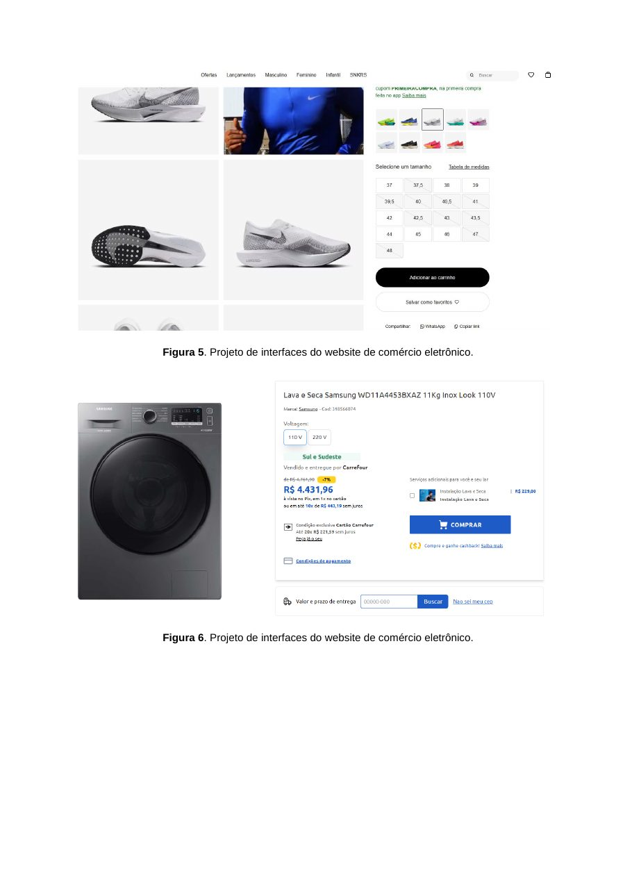
Resposta-modelo
Figura 5 (loja de tênis) — perceptivas:
- Affordance: adicionar o tênis ao carrinho. Elementos: botão preto arredondado “Adicionar ao carrinho”, abaixo da grade de tamanhos. Rótulo, contraste e formato de botão indicam a ação.
- Affordance: escolher o tamanho. Elementos: grade de botões “Selecione um tamanho” (37 a 48); os indisponíveis aparecem esmaecidos e com uma linha diagonal.
- Affordance: escolher a cor. Elementos: miniaturas do tênis em cada cor; a selecionada tem borda.
- Affordance: consultar as medidas. Elementos: link sublinhado “Tabela de medidas”.
- Affordance: favoritar. Elementos: botão “Salvar como favoritos” com ícone de coração.
Figura 6 (lava e seca) — perceptivas:
- Affordance: comprar o produto. Elementos: botão azul “COMPRAR” com ícone de carrinho.
- Affordance: escolher a voltagem. Elementos: botões “110 V” (selecionado, borda azul) e “220 V”.
- Affordance: calcular frete. Elementos: campo “00000-000” + botão “Buscar” em “Valor e prazo de entrega”; link “Não sei meu cep”.
- Affordance: contratar instalação. Elementos: caixa de seleção “Instalação Lava e Seca — R$ 229,00”.
Escondidas (a ação costuma existir, mas nada na tela a indica):
- Figura 5: ampliar ou percorrer as fotos do tênis (clicar ou passar o mouse nas imagens) — não há lupa, seta ou texto indicando.
- Figura 5: a exigência de escolher um tamanho antes de adicionar só aparece depois do clique, na mensagem vermelha “Selecione um tamanho para continuar” (visível na Figura 4/11); antes disso, nada indica a regra.
- Figura 6: ampliar a foto da lava e seca — sem nenhuma pista visual.
Diferença: pela classificação de Gaver, que separa as affordances da informação perceptiva sobre elas, as duas existem de fato. Na perceptiva, as características do próprio elemento indicam a ação disponível. Na escondida, a ação existe, mas a informação perceptiva que a especifica não está presente, e o usuário depende de experiência ou tentativa e erro.
(Observação: por ser uma imagem estática, não dá para confirmar se as fotos ampliam de fato; cite como affordance escondida “provável”. Extra: o selo verde “Sul e Sudeste” da Figura 6 tem aparência de botão; se não for clicável, é candidato a falsa affordance.)
Variação provável: “Aponte uma affordance falsa e uma rejeição correta nas Figuras 5 e 6” ou “Explique o esquema de Gaver usando os quatro quadrantes”.
Questão 6. No formulário do app Pró-Inclusão (Figura 7), identifique a principal affordance, descreva os elementos e classifique-a (Perceptiva, Escondida, Falsa, Física, Cognitiva, Sensorial, Funcional, Padrão ou Negativa).
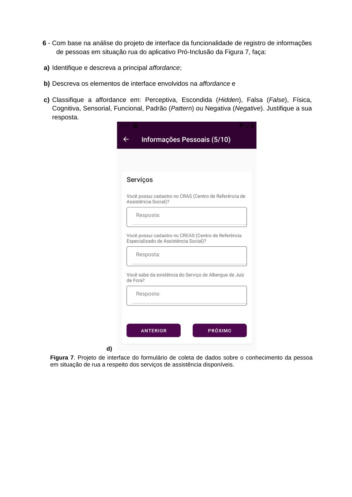
Resposta-modelo
Affordance: o botão com o rótulo “PRÓXIMO” comunica explicitamente que, ao tocá-lo, o usuário avança para a próxima etapa do cadastro (a tela é a etapa 5 de 10, conforme o título “Informações Pessoais (5/10)”).
Elementos de interface: botão roxo com o rótulo “PRÓXIMO” no canto inferior direito, ao lado do botão “ANTERIOR”; abaixo das três perguntas da seção “Serviços” (CRAS, CREAS e Albergue de Juiz de Fora), cada uma com um campo “Resposta:”.
Tipo de affordance: física (Hartson), uma vez que o tamanho, a posição na área inferior e o rótulo tornam o resultado da ação explícito (affordance explícita). Pela classificação de Gaver, é também perceptiva, pois o próprio botão indica a ação disponível.
(Outras possíveis: as perguntas acima de cada campo funcionam como affordance cognitiva, indicando o que preencher. Observação crítica: as perguntas são de sim/não, mas os campos são de texto livre; a affordance de “escrever qualquer coisa” não corresponde à resposta esperada — opções Sim/Não seriam mais adequadas.)
Variação provável: “Classifique o botão ANTERIOR” (física; permite voltar — também relacionado a controle e liberdade do usuário) ou “Qual affordance cognitiva aparece no formulário?”.
Questão 7. Na funcionalidade de adicionar produto ao carrinho do site da Nike no celular (Figura 8), identifique a principal affordance, descreva os elementos e classifique-a (Física, Cognitiva, Sensorial, Funcional, Padrão ou Negativa).
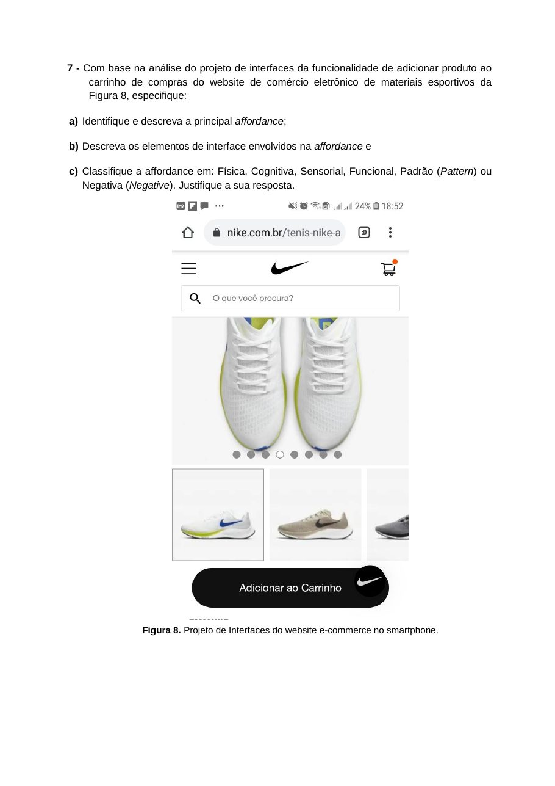
Resposta-modelo
Affordance: o botão com o rótulo “Adicionar ao Carrinho” comunica explicitamente que, ao tocá-lo, o tênis será adicionado ao carrinho de compras.
Elementos de interface: botão preto, grande e arredondado, com o rótulo “Adicionar ao Carrinho” em branco e o logotipo da Nike, ocupando quase toda a largura da tela, na parte inferior, logo abaixo das miniaturas de cores.
Tipo de affordance: física, uma vez que o tamanho, o contraste e o posicionamento na parte inferior (ao alcance do polegar) e o rótulo tornam o resultado da ação explícito.
(Outras na mesma tela: ícone de três linhas no canto superior esquerdo = padrão (menu); ícone de carrinho com ponto laranja = padrão + sensorial (aviso de item no carrinho); bolinhas abaixo da foto = sensorial (indicam a foto atual do carrossel); miniaturas do tênis em cores diferentes = cognitiva; campo “O que você procura?” com lupa = padrão/cognitiva.)
Variação provável: “Identifique uma affordance padrão e uma sensorial na Figura 8.”
Questão 8. Na tela “Nova transferência” de um app de banco (Figura 9), identifique as affordances, descreva os elementos de cada uma e classifique-as (há mais de uma).
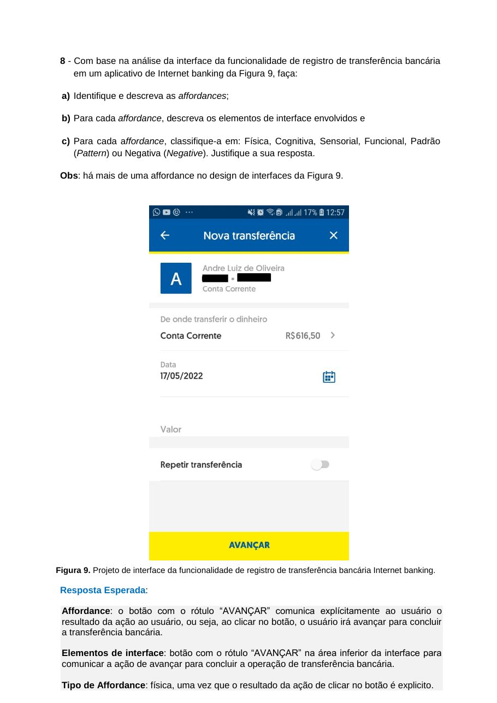
Resposta-modelo
Resposta esperada do professor (reproduzir): “Affordance: o botão com o rótulo ‘AVANÇAR’ comunica explicitamente ao usuário o resultado da ação, ou seja, ao clicar no botão, o usuário irá avançar para concluir a transferência bancária. Elementos de interface: botão com o rótulo ‘AVANÇAR’ na área inferior da interface para comunicar a ação de avançar para concluir a operação de transferência bancária. Tipo de Affordance: física, uma vez que o resultado da ação de clicar no botão é explícito.”
Affordances adicionais (para completar a resposta):
- Affordance: escolher a conta de origem. Elementos: linha “De onde transferir o dinheiro — Conta Corrente R$616,50” com seta “>” à direita. Tipo: cognitiva, uma vez que o rótulo e a seta indicam que, ao tocar, abre-se a lista de contas.
- Affordance: escolher a data. Elementos: campo “Data 17/05/2022” com ícone de calendário. Tipo: cognitiva (rótulo gráfico anuncia o que acontece ao tocar) / padrão (calendário é convenção para datas).
- Affordance: agendar repetição. Elementos: chave liga/desliga “Repetir transferência”. Tipo: padrão, uma vez que segue a convenção do interruptor.
- Affordance: saber para quem se transfere. Elementos: quadro com a letra “A”, nome “Andre Luiz de Oliveira” e “Conta Corrente”. Tipo: funcional, uma vez que auxilia o usuário em sua atividade (como o nome e a foto na tela de chamada, exemplo da aula).
- Affordance: voltar ou cancelar. Elementos: seta “←” e “X” no topo azul. Tipo: padrão (convenções de voltar e fechar).
Variação provável: “O campo ‘Valor’ está vazio e o botão AVANÇAR continua amarelo. Que affordance poderia ser aplicada para prevenir o erro?” → negativa: deixar AVANÇAR desabilitado até o valor ser informado.
Questão 9. Na página inicial do Facebook (Figura 10), identifique uma affordance, descreva os elementos e classifique-a.
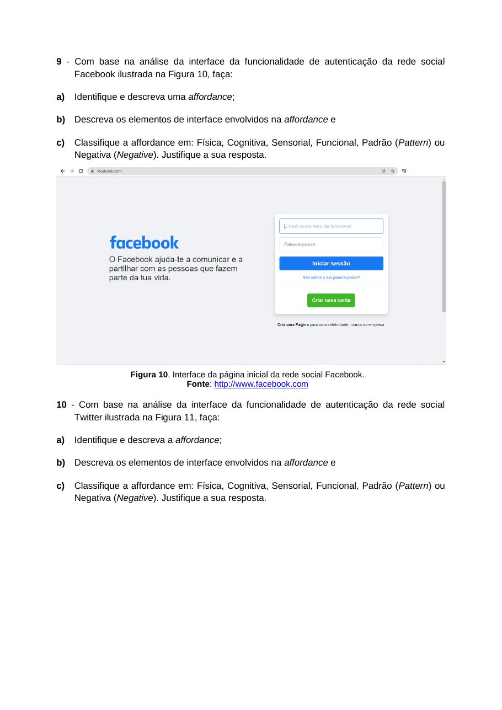
Resposta-modelo
Affordance: o botão com o rótulo “Iniciar sessão” comunica explicitamente que, ao clicar, o usuário entrará na rede social com os dados informados.
Elementos de interface: botão azul, largo, com o rótulo “Iniciar sessão”, logo abaixo dos campos “E-mail ou número de telemóvel” e “Palavra-passe”, no quadro branco à direita.
Tipo de affordance: física, uma vez que o tamanho, a cor de destaque, a posição logo após os campos e o rótulo tornam o resultado da ação explícito.
(Alternativas válidas: textos dentro dos campos “E-mail ou número de telemóvel” e “Palavra-passe” = cognitiva, indicam o que preencher; borda azul no campo de e-mail em foco = sensorial; link “Não sabes a tua palavra-passe?” = funcional, permite recuperar o acesso; botão verde “Criar nova conta” = física, com cor diferente para uma ação diferente.)
Variação provável: “Por que ‘Iniciar sessão’ e ‘Criar nova conta’ têm cores diferentes?” → elementos diferentes para ações diferentes (consistência e padronização) e sensorial apoiando a física.
Questão 10. Nas telas de autenticação do Twitter (Figura 11), identifique a affordance, descreva os elementos e classifique-a.
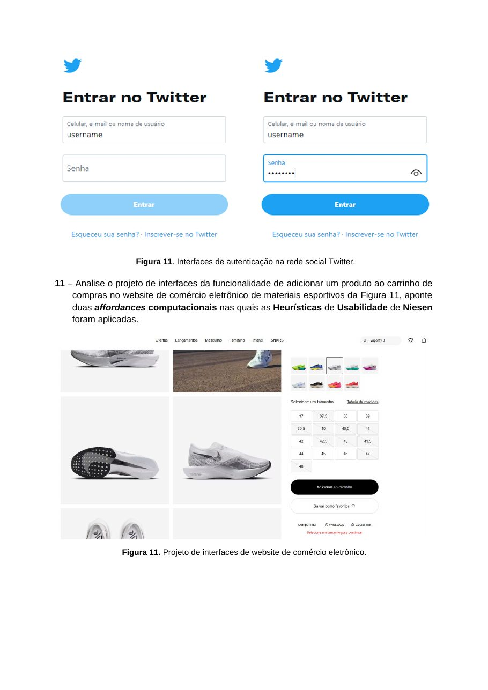
Resposta-modelo
Affordance: o botão “Entrar” permanece desabilitado enquanto o campo de senha está em branco e só é habilitado depois que o usuário informa a senha, impedindo uma tentativa de login incompleta.
Elementos de interface: na tela da esquerda, campo “Celular, e-mail ou nome de usuário” preenchido (“username”), campo “Senha” vazio e botão “Entrar” em azul claro (esmaecido, desabilitado). Na tela da direita, o campo “Senha” preenchido, com borda azul, e o botão “Entrar” em azul forte (habilitado).
Tipo de affordance: negativa, uma vez que impede o usuário de prosseguir para o objetivo (entrar na rede social) até que forneça os dados necessários, prevenindo erros.
(Apoios: a mudança de cor do botão e a borda azul no campo em foco são affordances sensoriais; o ícone de olho no campo de senha é padrão/cognitiva (mostrar senha).)
Variação provável: “Diferencie a affordance do botão desabilitado de uma falsa affordance.”
Questão 11. Na funcionalidade de adicionar produto ao carrinho da loja de materiais esportivos (Figura 11, segunda figura da página), aponte duas affordances computacionais em que as heurísticas de Nielsen foram aplicadas.
Resposta-modelo
1) Heurística: Prevenção de erros. Affordance: os botões de tamanhos indisponíveis aparecem esmaecidos e com uma linha diagonal (affordance sensorial/negativa). Justificativa: a aparência comunica que esses tamanhos não podem ser escolhidos, prevenindo que o usuário os selecione.
2) Heurística: Reconhecimento ao invés de memorização. Affordance: as miniaturas do tênis em cada cor disponível (affordance cognitiva — significantes). Justificativa: o usuário reconhece a cor pela imagem, sem precisar lembrar nomes de cores ou de modelos.
3) (extra) Heurística: Ajuda para reconhecer e recuperar de erros. Affordance: mensagem vermelha “Selecione um tamanho para continuar”, abaixo dos botões de compartilhar. Justificativa: em linguagem simples, indica o problema (faltou o tamanho) e o que fazer.
Variação provável: “Relacione o botão ‘Adicionar ao carrinho’ a uma heurística” → reconhecimento ao invés de memorização (affordance física: tamanho, texto e posição tornam a ação evidente — exemplo do slide).
Questão 12. Nas telas de autenticação do Twitter (Figura 12), aponte duas affordances computacionais em que as heurísticas de Nielsen foram aplicadas.
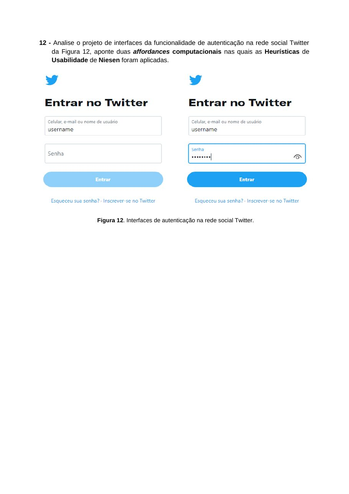
Resposta-modelo
1) Heurística: Prevenção de erros. Affordance negativa: o botão “Entrar” fica desabilitado (azul claro) enquanto a senha está em branco e é habilitado (azul forte) depois de preenchida. Justificativa: elimina a condição propensa a erro de tentar entrar sem senha (exemplo usado no slide da heurística 5).
2) Heurística: Ajuda e documentação. Affordance cognitiva: o texto “Celular, e-mail ou nome de usuário” no primeiro campo. Justificativa: a instrução é concisa e informa quais dados podem ser usados para autenticar (exemplo usado no slide da heurística 10).
3) (extras) Ajuda para recuperar de erros / controle e liberdade: link “Esqueceu sua senha?”. Visibilidade do estado do sistema: borda azul e rótulo “Senha” no topo do campo em foco, mostrando qual campo está ativo.
Variação provável: “Aponte uma heurística ligada ao ícone de olho no campo de senha” → controle e liberdade / reconhecimento (o usuário confere o que digitou).
Questão 13. Na funcionalidade de rastrear pedido (Figura 13), aponte a affordance e a heurística de Nielsen aplicada.
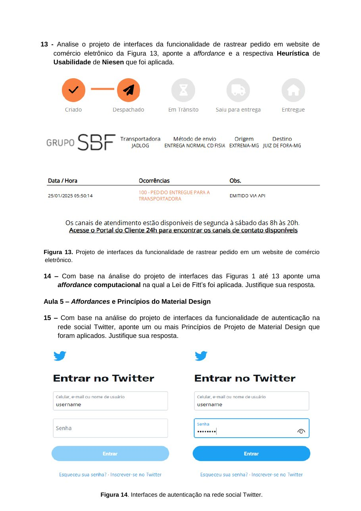
Resposta-modelo
Affordance: a linha do tempo de etapas comunica em que ponto da entrega o pedido está.
Elementos de interface: cinco círculos com ícone e rótulo — “Criado” (visto) e “Despachado” (avião de papel) em laranja, ligados por uma linha laranja; “Em Trânsito” (ampulheta), “Saiu para entrega” (caminhão) e “Entregue” (casa) em cinza. Abaixo, transportadora (JADLOG), método de envio, origem (EXTREMA-MG), destino (JUIZ DE FORA-MG) e a tabela de ocorrências com data/hora.
Tipo: sensorial (laranja x cinza mostra o que já ocorreu) apoiada por cognitiva (ícones e rótulos de cada etapa).
Heurística: Visibilidade do estado do sistema, uma vez que o design mantém o usuário informado do que está acontecendo com o pedido.
(Extra crítico: os ícones de caminhão e casa aplicam correspondência com o mundo real, mas os textos “100 - PEDIDO ENTREGUE PARA A TRANSPORTADORA” e “EMITIDO VIA API” trazem código e jargão interno, o que fere essa mesma heurística.)
Variação provável: “Aponte uma heurística violada na Figura 13” → correspondência entre sistema e mundo real (código “100” e “EMITIDO VIA API”).
Questão 14. Nas Figuras 1 a 13, aponte uma affordance computacional em que a Lei de Fitts foi aplicada. Justifique.
Resposta-modelo
Affordance: o botão “AVANÇAR” da tela de transferência (Figura 9) comunica a ação de avançar para concluir a transferência.
Elementos de interface: botão amarelo que ocupa toda a largura da tela, na área inferior, com o rótulo “AVANÇAR”.
Justificativa (Lei de Fitts): quanto maior o elemento de interface, menor o tempo que o usuário leva para apontar para ele. Por ser o maior alvo da tela e ficar no rodapé, perto do polegar, o botão da ação principal é acertado mais rápido.
(Outras respostas válidas: botão “Adicionar ao Carrinho” grande na parte inferior da Figura 8; botão “Entrar” de largura total nas Figuras 11/12.)
Variação provável: “Aponte um elemento em que a Lei de Fitts NÃO foi bem aplicada” → ex.: o link pequeno “Esqueceu sua senha?” ou a seta “>” da conta de origem, alvos pequenos e mais demorados de acertar.
Questão 15. Nas telas de autenticação do Twitter (Figura 14), aponte um ou mais princípios de Material Design aplicados. Justifique.
Resposta-modelo
1) Mostre aos usuários as mudanças resultantes de suas ações: depois que a senha é digitada, o botão “Entrar” passa de azul claro para azul forte, e o campo em uso ganha borda azul, com o rótulo “Senha” subindo para o topo do campo. O usuário vê o efeito do que fez.
2) Metáfora do material (conceitos familiares / design adaptativo): campos e botões são “peças” com bordas e cantos arredondados, que se comportam como objetos reais (botão “apagado” = ainda não dá para apertar). Cores, ícones e proporções consistentes com o app do Twitter em outros dispositivos (o azul da marca, o pássaro).
3) Negrito, gráfico e intencional: título “Entrar no Twitter” em negrito, logotipo do pássaro e botão sólido em azul de destaque dão significado e hierarquia à tela.
(Observação: a imagem é estática; a animação em si não aparece, só os dois estados, antes e depois.)
Variação provável: “Diferencie o princípio de Material Design aplicado da heurística de Nielsen aplicada na mesma tela” → Material Design: mostrar as mudanças das ações (linguagem visual); Nielsen: prevenção de erros (o botão bloqueado evita login sem senha).
Questão 16. No site de materiais esportivos (Figura 15), aponte duas heurísticas de Nielsen seguidas. Justifique.
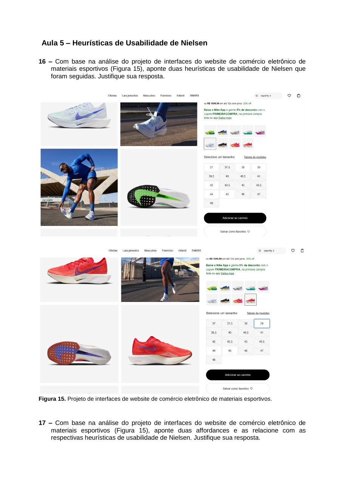
Resposta-modelo
1) Visibilidade do estado do sistema. Justificativa: ao escolher outra cor (tela de cima, branco/azul; tela de baixo, vermelho), as fotos do produto mudam para a cor escolhida, a miniatura selecionada ganha borda e o tamanho escolhido (39, na tela de baixo) fica com borda azul. O sistema mostra ao usuário o resultado das suas escolhas.
2) Prevenção de erros. Justificativa: botões de tamanhos indisponíveis esmaecidos e com uma linha diagonal, evitando que o usuário selecione um tamanho que não existe em estoque.
(Outras válidas: consistência e padronização — todos os botões de tamanho têm o mesmo formato e a aparência dos disponíveis difere dos indisponíveis; reconhecimento ao invés de memorização — miniaturas com as cores; correspondência com o mundo real — ícones de coração (favoritos) e sacola.)
(Na resolução da imagem não dá para ler com certeza quais números estão riscados; a resposta não depende disso.)
Variação provável: “Aponte uma heurística seguida e uma violada na Figura 15.”
Questão 17. No mesmo site (Figura 15), aponte duas affordances e relacione-as com as heurísticas de Nielsen. Justifique.
Resposta-modelo
1) Heurística: Reconhecimento ao invés de memorização. Affordance física: botão preto “Adicionar ao carrinho” com tamanho, texto e posição de destaque abaixo da grade de tamanhos, tornando mais evidente a ação de adicionar o produto ao carrinho. Justificativa: a ação principal fica visível; o usuário não precisa lembrar onde ela está.
2) Heurística: Reconhecimento ao invés de memorização. Affordance cognitiva: miniaturas do tênis em cada cor, usadas como significantes da ação de selecionar o modelo numa cor disponível. Justificativa: o usuário reconhece a cor pela imagem.
3) (alternativa) Heurística: Prevenção de erros. Affordance negativa/sensorial: tamanhos indisponíveis esmaecidos e riscados. Justificativa: impedem a escolha de um tamanho sem estoque.
(As duas primeiras reproduzem os exemplos dos slides 85 e 86 da Aula 5.)
Variação provável: “Relacione a affordance sensorial da borda no tamanho selecionado (39) com uma heurística” → visibilidade do estado do sistema.
Aula 9 — Princípios de Design de Norman
Ponto de partida: a “Norman Door”
É uma porta cujo design induz você a fazer o oposto do que deveria (empurrar uma porta de puxar, ou o contrário), ou uma porta que dá um sinal errado e precisa de um rótulo (signo) para corrigi-lo. Sem pista no próprio objeto, a pessoa descobre o lado certo por tentativa e erro.
- Frase-chave (Norman, 2013): “Quando significantes/signos externos precisam ser adicionados a algo simples como uma porta, é sinal de um design ruim.”
- Pergunta de Norman: “Por que é necessário um sinal indicando para puxar ou empurrar? Por que não tornar isto óbvio?”
Discoverability (facilidade de descoberta) e Understanding (entendimento)
Discoverability: capacidade de descobrir/identificar quais operações podem ser realizadas, ou seja, reconhecer as ações possíveis na interface, identificar onde estão localizadas e saber como executá-las.
- Quando as ações não estão visíveis, fica difícil reconhecê-las, localizá-las e saber como executá-las.
- Trade-off nos apps móveis: menu hambúrguer (esconde opções) x menu lateral x menu tabular (abas). A visibilidade das opções melhora a experiência do usuário.
- Na prática (Aula 10): navegação clara, pontos focais e organização hierárquica visual dos elementos = boa discoverability e understanding.
Understanding: capacidade do design de ajudar o usuário a responder “O que tudo isso significa?”, “Como o produto deve ser usado?” e “O que os diferentes controles e configurações significam?”. É o entendimento total, que vem naturalmente quando há boa discoverability.
Design Centrado no Humano (Norman, 2013)
Processo de observar pessoas realizando tarefas, gerar ideias, prototipar e testar a solução (ciclo Observação → Geração da ideia → Prototipação → Teste). Garante que o design corresponda às necessidades e capacidades das pessoas para as quais foi feito.
- “Design é um ato de comunicação, que significa ter um conhecimento profundo da pessoa com a qual o designer está comunicando.”
- Discoverability e Feedback são, segundo o slide, os princípios base que orientam o trabalho de designers e engenheiros.
Os 7 princípios (lista da prova)
A lista oficial numera: 1) Discoverability, 2) Affordance, 3) Significante, 4) Mapeamento, 5) Feedback, 6) Restrições, 7) Modelo Conceitual. Os slides chamam affordances, significantes, mapeamentos, feedback, restrições e modelo conceitual de “Princípios Fundamentais da Interação”; somando discoverability, são sete. Norman: “quem usa um produto deve sempre conseguir responder às sete perguntas”.
Affordance
Características (físicas ou simbólicas) ou propriedades de um objeto que determinam como as pessoas podem interagir com ele. “Afford” = sinal/pista que indica como o objeto pode ser usado. Para serem efetivas, devem ser fáceis de descobrir/perceber.
- Placa plana na porta: indica que ela pode ser empurrada.
- Maçaneta: pode ser girada, puxada ou empurrada.
- Botões indicam que devem ser clicados para realizar uma ação; caixas de texto indicam informações a serem fornecidas.
Significantes
Sinais que indicam a presença de uma affordance ou anti-affordance. Ajudam o usuário a localizar as ações no design. Nas conclusões o professor resume: “metáforas visuais que apoiam o usuário a localizar as ações na interface”.
- Affordances com significantes são chamadas de affordances perceptivas/percebidas.
- Norman: o bom design comunica propósito, estrutura e operação do dispositivo; “esse é o papel do significante”.
- Exemplo do slide (e-commerce de tênis): as amostras de cor do modelo são significantes que comunicam a ação de selecionar as cores disponíveis.
Mapeamento
Relacionamento entre elementos de conjuntos diferentes (ex.: interruptores x luzes de uma sala). É importante no design de controles e displays.
- Quando há correspondência espacial entre o layout dos controles e os dispositivos controlados, é fácil saber como usá-los.
- Com um mapeamento claro entre controles, ações e resultados esperados, a relação controle–resultado é fácil de aprender.
- Mapeamentos naturais tornam óbvia a relação entre controle e objeto controlado e levam ao entendimento imediato.
- Alguns são culturais ou biológicos: mão para cima = mais, para baixo = menos; por isso a posição vertical serve para representar intensidade.
- Outros vêm de princípios da percepção (Gestalt, agrupamento e proximidade): controles relacionados devem ficar agrupados.
- Nas conclusões: mapeamento permite ao usuário prever o resultado de cada ação.
Feedback
Sinal que indica o que aconteceu após uma ação do usuário; comunica os resultados das ações e o estado do sistema. Deve ser imediato, informativo, discretamente planejado e priorizado. Informa que o sistema está funcionando conforme a solicitação.
- Quando algo dá errado, um diálogo de erro chama a atenção e informa o que ocorreu e o que fazer. Informação importante deve ser comunicada de forma imediata e clara.
Restrições
Formas de limitar as possibilidades de interação em determinado momento para orientar o comportamento, prevenir erros e simplificar a interação. Reduzem a carga cognitiva; possibilidades ilimitadas confundem o usuário. Itens de menu desabilitados indicam que não é preciso interagir com eles e orientam a próxima ação adequada.
Quatro tipos, com os exemplos do professor:
- Física: usa características físicas da interface/dispositivo. Ex.: tamanho e posição dos botões na tela de toque, que incentivam o toque preciso e evitam toques acidentais. Nos exemplos da aula, o botão “adicionar ao carrinho” com rótulo, tamanho e posição no canto inferior direito foi classificado como restrição física.
- Semântica: depende de símbolos, ícones e convenções. Ex.: lupa para busca, lixeira para remoção.
- Cultural: normas e expectativas sociais (linguagem, símbolos, gestos) do público-alvo. Ex.: cima = mais e baixo = menos; ícones de salvar, desfazer e refazer no editor de texto; ícones de atender e recusar chamada no celular.
- Lógica: relação entre o layout funcional dos controles e o que eles afetam. Ex.: posição dos interruptores x lâmpadas; layout das bocas do fogão x seus botões.
Interfaces conversacionais (linguagem natural, ex.: assistentes de voz e chatbots) têm poucas restrições: é impossível saber quais consultas são suportadas, e a tecnologia não responde a todas as consultas possíveis.
Modelo Conceitual
Explicação simplificada de como algo funciona. O conjunto de affordances, significantes, restrições, mapeamentos e feedback cria o modelo conceitual do produto. Um bom modelo permite prever os efeitos das ações e saber o que fazer quando algo não sai como planejado.
- Arquivos, pastas e ícones ajudam a formar o modelo de “documentos e pastas”; ícones na tela do celular indicam os aplicativos que podem ser abertos; metáforas visuais comunicam as ações possíveis.
- Norman: sem um bom modelo conceitual “operamos mecanicamente, cegamente” e não sabemos que efeitos esperar nem o que fazer se algo der errado.
- Três modelos: do Designer (concepção da aparência e operação do produto); Imagem do Sistema (estrutura física do sistema e documentação); do Usuário (derivado da interação com o produto). O designer espera que o modelo do usuário seja idêntico ao seu, mas só se comunica com ele pela imagem do sistema.
Tabela comparativa dos 7 princípios (definições na redação do professor)
| Princípio | Definição (slide) | Exemplo | Como não confundir |
|---|---|---|---|
| Discoverability | “Capacidade de reconhecer as ações possíveis na interface de um produto, identificar onde estão localizadas e saber como executá-las.” | Barra de abas do Instagram, sempre visível. | É a qualidade geral de deixar as ações visíveis e localizáveis. Significante é o sinal específico de uma ação. |
| Affordance | “Características (físicas ou simbólicas) ou propriedades de um objeto que determinam como pessoas podem interagir com ele.” | Campo de texto (digitar); botão (clicar); placa plana na porta (empurrar). | Affordance = o que dá para fazer. Significante = o sinal que mostra que dá e onde. |
| Significante | “Sinais que indicam a presença de uma affordance ou anti-affordance.” “Auxiliam o usuário a localizar as ações no design.” | Amostras de cor do tênis; ícone de clipe no WhatsApp. | Affordance + significante = affordance perceptiva/percebida. Se o ícone é usado como convenção que orienta a ação (lupa, lixeira), o professor chama de restrição semântica. |
| Mapeamento | “Relacionamento entre elementos de conjuntos diferentes.” Relacionamentos entre controles e efeitos que permitem “prever os resultados de cada ação”. | Interruptores x luzes; escolher a cor e a foto do tênis mudar. | Mapeamento é a relação controle → efeito (dá para prever antes de agir). Feedback é o aviso depois da ação. Restrição limita as ações. |
| Feedback | “Consiste em comunicar os resultados das ações do usuário. Deve ser imediato, informativo, discretamente planejado e priorizado.” | Tiques do WhatsApp; “Produto adicionado à sacola”. | Vem depois da ação e ajuda a atravessar o golfo de avaliação. Mapeamento existe antes da ação. |
| Restrições | “Formas de limitar as possibilidades de interação do usuário com a interface em determinado momento para orientar o comportamento do usuário, prevenir erros e simplificar a interação.” Tipos: física, semântica, cultural, lógica. | Tamanho esgotado riscado; botão apagado até preencher o campo. | Restrição tira opções. Affordance e significante mostram opções. Restrição lógica (layout controle x objeto) é parente do mapeamento: a diferença é o foco em limitar e orientar. |
| Modelo Conceitual | “Explicação simplificada de como algo funciona.” Criado pelo conjunto de affordances, significantes, restrições, mapeamentos e feedback. | Pastas e arquivos no computador; carrinho de compras. | É a explicação que o design comunica. O modelo do usuário (modelo mental) é o que ele forma ao interagir. |
Teste-se
1. Uma porta de vidro tem o mesmo puxador vertical dos dois lados e um adesivo “EMPURRE” em um deles. Segundo Norman, o adesivo:
- mostra um bom design, porque comunica a ação correta ao usuário.
- é sinal de design ruim: se é preciso acrescentar um signo externo a algo simples, o próprio objeto não comunica a ação.
- é uma restrição física que impede o usuário de puxar a porta.
- é um feedback, porque informa o resultado da ação de empurrar.
Ver resposta
Letra b. É a citação de Norman (2013) usada nos slides. (a) é o oposto do que Norman defende. (c) está errada porque o adesivo não impede fisicamente nada. (d) também: feedback vem depois da ação, e o adesivo aparece antes.
2. “Sinais que indicam a presença de uma affordance ou anti-affordance.” Essa definição corresponde a:
- Affordance
- Restrição semântica
- Significante
- Mapeamento
Ver resposta
Letra c. É a definição literal de significante. Affordance é a característica que determina como interagir, não o sinal dela. Restrição semântica usa ícones e convenções para limitar e orientar, e não é definida como “indicar a presença de affordance”. Mapeamento é a relação entre controles e efeitos.
3. Segundo os slides, affordances acompanhadas de significantes são chamadas de affordances:
- escondidas (hidden)
- perceptivas/percebidas
- falsas (false)
- negativas
Ver resposta
Letra b. O significante torna a affordance perceptível. Escondida é justamente a affordance sem informação perceptiva (Gaver). Falsa é a informação que sugere uma ação inexistente. Negativa (Hartson) impede o avanço até que faltem dados.
4. Pela classificação de restrições da aula, o ícone de lupa para buscar e o de lixeira para apagar são restrições:
- físicas
- culturais
- lógicas
- semânticas
Ver resposta
Letra d. O slide traz esse exemplo exato em restrições semânticas (símbolos, ícones e convenções). A confusão comum é com cultural: o professor coloca como culturais os ícones de salvar/desfazer/refazer e de atender/recusar chamada. Física envolve tamanho/posição; lógica envolve o layout dos controles em relação ao que controlam.
5. Os botões de um fogão estão dispostos na mesma organização espacial das bocas que controlam. Pela classificação da aula, isso exemplifica uma restrição:
- lógica
- física
- semântica
- cultural
Ver resposta
Letra a. Restrição lógica explora a relação entre o layout funcional dos controles e as coisas afetadas por eles (exemplos do slide: fogão e interruptores/lâmpadas). Também é um bom mapeamento, mas a pergunta pedia o tipo de restrição. Física seria o tamanho e a posição que evitam erro de toque; semântica, um ícone; cultural, uma convenção social.
6. Um app troca o menu hambúrguer por uma barra de abas fixa na parte de baixo, com as cinco funções principais sempre visíveis. O princípio mais diretamente favorecido é:
- Feedback
- Discoverability
- Restrição física
- Modelo conceitual do designer
Ver resposta
Letra b. O slide discute exatamente o trade-off hambúrguer x lateral x abas: a visibilidade das opções facilita reconhecer e localizar as ações. Feedback é a resposta a uma ação já feita. Restrição física trata de tamanho/posição para evitar erros, não de deixar opções visíveis. O modelo do designer é a concepção do próprio designer, não uma qualidade da tela.
7. Entre os três modelos conceituais, a “Imagem do Sistema” é:
- a concepção da aparência e da operação do produto feita pelo designer.
- o modelo que o usuário forma a partir da interação com o produto.
- a estrutura física do sistema e sua documentação.
- a explicação que o usuário dá quando algo dá errado.
Ver resposta
Letra c. (a) é o modelo do designer; (b) é o modelo do usuário; (d) não é um dos três modelos. A imagem do sistema é o que de fato chega ao usuário: a interface e a documentação.
8. No WhatsApp, depois de tocar em enviar, aparecem um tique cinza, depois dois tiques cinza e, por fim, dois tiques azuis. Esse comportamento ilustra principalmente:
- Mapeamento natural
- Restrição semântica
- Affordance
- Feedback
Ver resposta
Letra d. São sinais que comunicam o resultado da ação e o estado do sistema (enviada, entregue, lida), de forma imediata e informativa. Não há relação espacial controle–efeito (mapeamento) nem limitação de ações (restrição), e os tiques não indicam uma ação possível (affordance).
9. (Estilo da questão 18 da lista) Considere a tela de um prato no iFood: foto e nome do prato no topo; seção “Escolha a bebida — Obrigatório” com opções em botões de rádio; contador “− 1 +” no rodapé ao lado de um botão vermelho “Adicionar R$ 32,90”, que fica apagado enquanto a bebida não é escolhida; ao tocar nele, a tela fecha e surge uma barra “Ver sacola (1 item)”. Aponte dois princípios de design de Norman seguidos. Justifique.
Resposta-modelo
Princípio: Restrições. Justificativa: o botão “Adicionar” fica desabilitado até a escolha da bebida obrigatória. Isso limita a interação naquele momento, mostra qual é a próxima ação adequada (escolher a bebida) e impede um pedido incompleto.
Princípio: Feedback. Justificativa: depois de tocar em “Adicionar”, a barra “Ver sacola (1 item)” comunica na hora o resultado (o prato entrou na sacola) e o novo estado do pedido. O valor no próprio botão também se atualiza quando o usuário muda a quantidade no contador.
Outras respostas aceitas: Significante (rótulo “Obrigatório” e botões de rádio indicam onde e como escolher); Restrição física (botão grande, com rótulo e preço, fixo no rodapé, como no exemplo do professor para “adicionar ao carrinho”); Mapeamento (“−” e “+” ao lado do número, que muda o total exibido).
10. Diferencie affordance de significante. Dê um exemplo de interface em que os dois aparecem juntos e explique o que acontece quando há affordance sem significante.
Resposta-modelo
Affordance: características (físicas ou simbólicas) ou propriedades de um objeto que determinam como as pessoas podem interagir com ele. É a possibilidade de ação.
Significante: sinais que indicam a presença de uma affordance ou anti-affordance e auxiliam o usuário a localizar as ações no design. É o sinal que comunica a possibilidade e onde ela está.
Juntos: affordances com significantes são chamadas de affordances perceptivas/percebidas. Exemplo: no WhatsApp, a possibilidade de anexar um arquivo é a affordance; o ícone de clipe ao lado do campo de mensagem é o significante que mostra onde e como fazer isso.
Sem significante: a ação existe, mas o usuário não a descobre ou só a descobre por tentativa e erro (ex.: um gesto de deslizar sem nenhuma indicação na tela). É o caso da Norman Door: a porta abre, mas nada indica se é para puxar ou empurrar, e alguém acaba colando um rótulo, sinal de design ruim.
11. Defina modelo conceitual e descreva os três modelos apresentados em aula (do designer, imagem do sistema, do usuário). Explique por que o designer depende da imagem do sistema.
Resposta-modelo
Modelo conceitual: explicação simplificada de como algo funciona. O uso de affordances, significantes, restrições, mapeamentos e feedback cria o modelo conceitual do produto; um bom modelo permite ao usuário prever os efeitos de suas ações e saber o que fazer quando as coisas não saem como planejado.
- Modelo do designer: concepção da aparência e operação do produto.
- Imagem do sistema: a estrutura física do sistema e a documentação.
- Modelo do usuário: derivado da interação com o produto.
Os designers esperam que o modelo do usuário seja idêntico ao seu, mas não conversam com cada usuário: o usuário só tem contato com a imagem do sistema (interface e documentação). Se a imagem do sistema comunica mal (ícones confusos, ações escondidas, falta de feedback), o modelo do usuário fica diferente do modelo do designer. Exemplo: a metáfora de pastas e arquivos faz o usuário entender que um documento “fica dentro” de uma pasta e pode ser movido para outra.
Aula 10 — Princípios de Design de Norman na Prática
A pergunta de cada estágio da ação
A Aula 10 aplica os 7 princípios em cima do modelo de ação de 7 estágios (detalhado na Aula 11). Cada estágio responde a uma pergunta:
- Objetivo: o que eu quero fazer e por quê?
- Intenção imediata/Plano: como eu posso fazer?
- Especificação das ações: qual a sequência de ações para atingir a intenção imediata?
- Executar: o que eu posso fazer agora?
- Perceber: o que aconteceu?
- Interpretar: o que isso significa?
- Avaliar: estou caminhando em direção ao meu objetivo? Alcancei o meu objetivo?
Exemplo do professor: comprar tênis no site da Nike
- 1) Objetivo: encontrar um tênis de corrida de determinado modelo, cor e tamanho.
- 2) Intenção imediata: encontrar o Pegasus FlyEase, cor verde, tamanho 41.
- 3) Especificação das ações (quais as opções?) — aqui entram quase todos os princípios:
- Discoverability: dá visibilidade às opções; navegação clara, pontos focais e hierarquia visual.
- Modelos conceituais: presentes na navegação e nos controles de classificar e filtrar resultados de busca; descrevem as ações possíveis.
- Affordances: botões e caixas de seleção dão a percepção de como podem ser controlados.
- Significantes: comunicam a localização das ações.
- Mapeamento: ao selecionar o modelo, a página mostra os efeitos — tamanhos e cores disponíveis e mudança de preço.
- Restrições: limitam o que, onde e quando a informação pode ser usada (a navegação oferece as categorias de produto); estados desabilitados só deixam escolher opções em estoque.
- Sequência resultante: selecionar o modelo → selecionar a cor → selecionar o tamanho → adicionar ao carrinho.
- 4) Execução (o que posso fazer agora?): affordances, significantes e mapeamentos ajudam a reconhecer e executar cada ação da sequência.
- 5) Percepção (o que aconteceu?): feedback, a mensagem de confirmação de adição à cesta com modelo, cor, tamanho, preço e quantidade, além de mensagem de sucesso e opções adicionais.
- 6) Interpretação: entender o significado da resposta do sistema.
- 7) Avaliação: comparar o resultado obtido com o objetivo.
Teste-se
1. A pergunta “qual a sequência de ações executar para atingir a intenção imediata?” corresponde ao estágio:
- Objetivo
- Especificação das ações
- Executar
- Avaliar
Ver resposta
Letra b. Objetivo pergunta “o que eu quero fazer e por quê?”; Executar, “o que eu posso fazer agora?”; Avaliar, “estou caminhando para o meu objetivo / alcancei?”.
2. Depois de tocar em “Pagar”, o app mostra “Pagamento aprovado”. Ao pensar “então o pedido foi aceito e já está sendo preparado”, o usuário está no estágio de:
- Perceber
- Executar
- Interpretar
- Especificação das ações
Ver resposta
Letra c. Ver a mensagem é perceber (“o que aconteceu?”); atribuir significado a ela é interpretar (“o que isso significa?”). O toque em “Pagar” foi a execução, que já tinha acontecido.
3. No site da Nike, ao selecionar um modelo de tênis, a página passa a mostrar as cores e os tamanhos disponíveis e o preço muda. Nos slides, esse comportamento ilustra o princípio:
- Mapeamento
- Discoverability
- Restrição física
- Significante
Ver resposta
Letra a. O slide de mapeamento usa exatamente esse exemplo: a relação entre o controle (selecionar o modelo) e seus efeitos visíveis na página. Discoverability trata de tornar as ações visíveis, restrição física de tamanho/posição contra erros, significante de sinalizar onde está a ação.
4. A mensagem que confirma a adição do tênis à cesta, mostrando modelo, cor, tamanho, preço e quantidade, é associada pelo professor a:
- Restrições, no estágio de especificação das ações
- Significantes, no estágio de execução
- Modelo conceitual, no estágio de objetivo
- Feedback, no estágio de percepção
Ver resposta
Letra d. O slide “5) Percepção: O que aconteceu?” traz essa mensagem como feedback. As outras alternativas juntam princípios reais a estágios em que eles não aparecem nesse exemplo.
5. No exemplo da Aula 10, quais princípios ajudam o usuário no estágio de execução (“o que posso fazer agora?”)?
- Feedback e modelo conceitual
- Affordances, significantes e mapeamentos
- Restrições e discoverability apenas
- Feedback, interpretação e avaliação
Ver resposta
Letra b. É a frase do slide 4) Execução. Feedback pertence à percepção. Restrições e discoverability foram destacadas na especificação das ações. A alternativa (d) mistura um princípio com nomes de estágios.
6. “Encontrar um tênis de corrida modelo Pegasus FlyEase, cor verde, tamanho 41” é, no exemplo do professor, o(a):
- Objetivo
- Intenção imediata/Plano
- Especificação das ações
- Execução
Ver resposta
Letra b. O objetivo é genérico (“um tênis de corrida de um modelo, cor e tamanho”); a intenção imediata é a versão concreta, com valores definidos. A especificação é a sequência (modelo → cor → tamanho → carrinho); a execução são os cliques.
7. Considere o Pix do Nubank: na tela inicial há o atalho “Pix”; dentro dele, “Transferir”; um campo pede o valor e o botão “Continuar” fica apagado até haver valor; em seguida, um campo para a chave Pix; uma tela de revisão mostra nome do destinatário, banco e valor com o botão “Transferir”; por fim aparece “Transferência realizada” e o comprovante. Para cada estágio da ação, indique qual princípio de Norman apoia o usuário e por quê.
Resposta-modelo
- Objetivo: pagar uma pessoa por Pix.
- Intenção imediata: transferir R$ 50,00 para a chave (celular) da Ana hoje.
- Especificação das ações: Discoverability (atalho “Pix” visível na tela inicial mostra onde está a ação); Modelo conceitual (fluxo valor → chave → revisão → confirmar, parecido com uma transferência no caixa, permite prever os passos); Restrição (“Continuar” desabilitado sem valor orienta a próxima ação e evita erro).
- Execução: Affordance (campo de texto indica que é preciso digitar; botão indica que é para tocar); Significante (rótulos “Transferir” e “Continuar” e o ícone do Pix indicam onde agir).
- Percepção: Feedback (tela de revisão e depois a mensagem “Transferência realizada”).
- Interpretação: o nome do destinatário e o valor exibidos permitem entender que o Pix irá (ou foi) para a pessoa certa.
- Avaliação: o comprovante mostra que o objetivo foi atingido; nenhuma ação adicional é necessária.
8. No exemplo do site da Nike, o professor classifica como mapeamento o fato de a página mostrar tamanhos, cores e preço quando o usuário seleciona um modelo, e como feedback a mensagem de confirmação depois de “Adicionar ao carrinho”. Explique a diferença entre os dois princípios e em qual estágio da ação cada um ajuda.
Resposta-modelo
Mapeamento é o relacionamento entre controles e seus efeitos, que permite ao usuário prever o resultado de cada ação. Ao selecionar o modelo, o usuário vê na própria página o efeito daquela escolha (cores, tamanhos disponíveis, preço): a relação entre o controle e o resultado fica clara. Ajuda na especificação e na execução das ações (golfo de execução), porque o usuário sabe qual controle mexe em quê.
Feedback consiste em comunicar os resultados das ações do usuário e o estado do sistema, de forma imediata e informativa. A mensagem com modelo, cor, tamanho, preço e quantidade confirma o que aconteceu depois da ação. Ajuda no estágio de percepção (“o que aconteceu?”) e, a partir dela, na interpretação e na avaliação (golfo de avaliação).
Resumo: mapeamento responde “se eu mexer aqui, o que muda?”; feedback responde “o que aconteceu depois que eu mexi?”.
Aula 11 — Modelo Conceitual e Psicologia das Ações do Cotidiano
Ciclo de ação: cognição, emoção e comportamento
Objetivo da aula: apresentar o modelo cognitivo da teoria da ação de Norman para especificar um modelo conceitual adequado aos usuários. Para projetar algo intuitivo e satisfatório, é preciso entender os processos cognitivos, emocionais e comportamentais durante e após a interação. Esses três componentes estão interligados e, juntos, explicam a “anatomia” da experiência do usuário.
- Lado do fazer: O que fazer? → Como fazer? → Fazer.
- Lado do avaliar: O que aconteceu? → O que isso significa? → Atingi meu objetivo?
- Sempre que vemos um site ou app, montamos um conjunto de ações mentais do que precisa ser feito para usá-lo.
Golfos de Execução e de Avaliação
Ao usar algo para atingir um objetivo, a pessoa enfrenta dois golfos:
- Golfo de Execução: tentar descobrir como o sistema funciona — como interagir com ele? Quais são as ações possíveis?
- Golfo de Avaliação: tentar descobrir o estado do sistema e se as ações levaram ao objetivo — o estado do sistema após a ação é o esperado? Minhas ações estão me levando ao objetivo?
O papel do designer é ajudar o usuário a atravessar os dois golfos, reduzindo a distância entre o pensamento do usuário (objetivos, intenções, ações e expectativas) e os controles físicos e estados do sistema.
Modelo de Ação de 7 Estágios
Classificação literal do slide em ações mentais e físicas:
- AÇÕES MENTAIS
- 1. Definir um OBJETIVO geral;
- 2. Estabelecer uma INTENÇÃO IMEDIATA (o que fazer agora?);
- 3. Estabelecer uma SEQUÊNCIA DE AÇÕES (plano de ações) para realizar a intenção imediata;
- AÇÕES FÍSICAS
- 4. EXECUTAR as ações estabelecidas;
- 5. PERCEBER o estado resultante (feedback) da execução;
- AÇÕES MENTAIS
- 6. INTERPRETAR o que é percebido;
- 7. AVALIAR se a intenção imediata foi atingida: 7.1 se sim, nenhuma ação é necessária; 7.2 se não, gerar uma intenção imediata diferente para atingir o objetivo.
O slide mostra os estágios 4 a 7 dentro de um laço: para cada ação do plano → executar, perceber, interpretar, avaliar. Os estágios 1 a 4 formam a travessia do golfo de execução; 5 a 7, a do golfo de avaliação.
Níveis de processamento da ação
- Visceral: reações subconscientes ao design.
- Comportamental: a usabilidade subconsciente de algo (intuitividade).
- Reflexivo: racionalização e intelectualização conscientes (pensamento, definição de submeta/plano para alcançar um objetivo).
Associação com os estágios (exemplo “comprar um tênis”):
- Golfo de Execução: Reflexivo → intenção imediata/plano; Comportamental → sequência de ações; Visceral → execução de cada ação.
- Golfo de Avaliação: Visceral → percepção da resposta; Comportamental → interpretação da resposta; Reflexivo → avaliação do estado do sistema em relação ao objetivo.
Emoções no exemplo do parquímetro:
- Visceral: calma ou ansiedade ao usar pela primeira vez; o novato fica apreensivo ao agir e ver o resultado.
- Comportamental: expectativas que ativam esperança, medo, alívio, desespero; sensível à especificação da tarefa e à interpretação dos resultados (dúvida ao definir os passos, alívio ao interpretar um resultado positivo).
- Reflexivo: compara as expectativas (objetivo) com o resultado. Fez tudo certo e a máquina falhou: insatisfação, culpa, raiva. Concluiu a tarefa: satisfação e prazer.
Exemplo do professor: pagar o parquímetro
Golfo de Execução — Objetivo: pagar o estacionamento por um período. Intenção imediata: estacionar por meia hora. Reconhecer as ações possíveis e definir a sequência: #1 pressionar “tempo”; #2 informar a placa; #3 pressionar “confirma”; #4 inserir moedas ou cartão; #5 pressionar “confirma”. Executar fisicamente a sequência.
Golfo de Avaliação — depois de cada ação: percepção, interpretação e avaliação (“isso me aproximou do objetivo?”; se sim, próxima ação; se não, o ciclo se repete).
- Ação #1 “tempo” → Percepção: tela mostra “Digite sua placa” → Interpretação: preciso informar a placa → Avaliação: estou mais perto; executar #2.
- Ação #2 placa → Percepção: tela se atualiza a cada letra/dígito → Interpretação: a placa exibida está correta → Avaliação: executar #3.
- Ação #3 “confirma” → Percepção: tempo mínimo (30 min) e “Efetue o pagamento” → Interpretação: preciso inserir moedas ou cartão → Avaliação: executar #4.
- Ação #4 moedas → Percepção: tela mostra o valor inserido → Interpretação: valor exibido = valor inserido → Avaliação: executar #5.
- Ação #5 “confirma” → Percepção: comprovante impresso → Interpretação: paguei com sucesso → Avaliação: objetivo atingido, nenhuma ação necessária.
O modelo de resposta que o professor espera (exemplo “Efetuar Transferência”)
No exemplo de internet banking que o professor deu, a resposta segue esta estrutura fixa:
- Objetivo: a tarefa em uma linha (ex.: “Efetuar transferência bancária”).
- Intenção imediata: a tarefa com todos os valores concretos (valor R$ 50,00, banco, agência 6409-9, conta 668899-0, data).
- Plano de ações mentais: lista numerada #1, #2... no nível de “o que fazer”, incluindo decisões em forma de pergunta (“Confirmar a transferência? (Sim ou Não)”, “Deseja comprovante?”).
- Execução de cada ação mental: para cada #N, as AÇÕES FÍSICAS #N.1, #N.2... (clicar, informar, selecionar), cada uma seguida de Percepção (o que mudou na tela), Interpretação (o que isso significa) e Avaliação (“estou caminhando em direção ao meu objetivo e irei executar o próximo passo”).
- A última avaliação fecha com “alcancei o meu objetivo”.
Teste-se
1. “O usuário tenta descobrir como o sistema funciona: como interagir com ele e quais são as ações possíveis.” Isso descreve:
- O golfo de execução
- O golfo de avaliação
- O nível de processamento reflexivo
- O modelo conceitual do designer
Ver resposta
Letra a. É a definição do slide. O golfo de avaliação trata de descobrir o estado do sistema e se o objetivo foi atingido. Reflexivo é um nível de processamento, não um golfo. O modelo do designer é a concepção do produto pelo designer.
2. No modelo de 7 estágios apresentado pelo professor, quais estágios são classificados como AÇÕES FÍSICAS?
- Apenas executar
- Executar e perceber o estado resultante
- Executar, perceber e interpretar
- Intenção imediata e sequência de ações
Ver resposta
Letra b. O slide separa: mentais (1 a 3), físicas (4 executar e 5 perceber), mentais (6 interpretar e 7 avaliar). Quem marca (a) esquece que perceber está no bloco físico; quem marca (c) inclui interpretar, que é mental.
3. Na travessia do golfo de execução, o nível de processamento associado à sequência de ações é o:
- Visceral
- Reflexivo
- Comportamental
- Semântico
Ver resposta
Letra c. Execução: reflexivo → intenção/plano; comportamental → sequência de ações; visceral → execução de cada ação. “Semântico” não é um nível de processamento (é um tipo de restrição).
4. Qual é a ordem correta dos 7 estágios da ação de Norman?
- Objetivo → Sequência de ações → Intenção imediata → Executar → Interpretar → Perceber → Avaliar
- Intenção imediata → Objetivo → Sequência de ações → Executar → Perceber → Avaliar → Interpretar
- Objetivo → Intenção imediata → Sequência de ações → Executar → Perceber → Interpretar → Avaliar
- Objetivo → Intenção imediata → Executar → Sequência de ações → Perceber → Interpretar → Avaliar
Ver resposta
Letra c. Três ações mentais (objetivo, intenção imediata, sequência), duas físicas (executar, perceber) e duas mentais (interpretar, avaliar). Em (a), sequência vem antes da intenção e interpretar antes de perceber. Em (b), a intenção vem antes do objetivo e avaliar antes de interpretar. Em (d), executar vem antes de planejar a sequência.
5. No estágio 7, o usuário conclui que a intenção imediata não foi atingida. Segundo o modelo do professor, o que acontece?
- Nenhuma ação é necessária e o ciclo termina.
- O usuário repete exatamente a mesma ação física até funcionar.
- O usuário gera uma intenção imediata diferente para atingir o objetivo.
- O usuário passa a usar o modelo conceitual do designer.
Ver resposta
Letra c. É o item 7.2 do slide. (a) é o caso 7.1 (intenção atingida). (b) não está no modelo. (d) não faz sentido: o usuário só tem acesso à imagem do sistema.
6. Segundo a aula, o designer ajuda o usuário a atravessar os golfos principalmente:
- aumentando o número de opções na tela para dar liberdade total.
- reduzindo a distância entre o pensamento do usuário (objetivos, intenções, ações e expectativas) e os controles físicos e estados do sistema.
- escondendo os estados internos do sistema para não sobrecarregar o usuário.
- adicionando rótulos externos em todos os controles.
Ver resposta
Letra b. É a frase do slide. (a) contraria a ideia de restrições (opções ilimitadas confundem). (c) aumentaria o golfo de avaliação. (d) lembra a Norman Door: precisar de rótulo externo é sintoma de design ruim.
7. No exemplo do parquímetro, depois de pressionar “tempo”, a tela exibe “Digite sua placa”. Ver essa mensagem corresponde ao estágio de:
- Interpretação
- Percepção
- Avaliação
- Especificação da sequência de ações
Ver resposta
Letra b. A percepção registra o que aconteceu (mensagem na tela). “Preciso informar a placa para continuar” é a interpretação. “Isso me aproximou do objetivo e vou para a ação #2” é a avaliação.
8. A pessoa segue corretamente todos os passos no parquímetro, mas a máquina falha e não imprime o comprovante; ela sente raiva e culpa. Esse sentimento está ligado ao nível:
- Visceral, porque é uma reação subconsciente à aparência da máquina.
- Comportamental, porque envolve a especificação da tarefa.
- Físico, porque a falha foi da máquina.
- Reflexivo, porque a pessoa compara a expectativa (objetivo) com o resultado obtido.
Ver resposta
Letra d. É o exemplo literal do slide do nível reflexivo. Visceral é a calma/ansiedade imediata de quem usa pela primeira vez; comportamental envolve expectativas (esperança, medo, alívio) durante a tarefa e a interpretação; “físico” não é um nível.
9. Diferencie golfo de execução e golfo de avaliação. Para cada um, indique os estágios da ação envolvidos, os níveis de processamento associados e dois princípios de design de Norman que ajudam o usuário a atravessá-lo.
Resposta-modelo
Golfo de execução: o usuário tenta descobrir como o sistema ou dispositivo funciona — como interagir com o sistema? Quais são as ações possíveis? Estágios: objetivo, intenção imediata, sequência (plano) de ações e execução. Níveis: reflexivo (intenção/plano), comportamental (sequência de ações), visceral (execução de cada ação). Princípios que ajudam: discoverability (ações visíveis e localizáveis), affordances e significantes (o que dá para fazer e onde), restrições (orientam a próxima ação), mapeamento (prever o efeito de cada controle).
Golfo de avaliação: o usuário tenta descobrir o estado do sistema e se suas ações levaram ao objetivo — o estado do sistema em resposta à ação é o esperado? Minhas ações estão me levando ao objetivo? Estágios: perceber, interpretar e avaliar. Níveis: visceral (percepção), comportamental (interpretação), reflexivo (avaliação em relação ao objetivo). Princípios que ajudam: feedback (comunica o resultado e o estado do sistema) e modelo conceitual (permite entender o que a resposta significa e prever o próximo passo).
Papel do designer: ajudar a atravessar os dois golfos, reduzindo a distância entre o pensamento do usuário (objetivos, intenções, ações e expectativas) e os controles físicos e estados do sistema.
(A resolução completa da questão 20 da lista, Latam, está na seção “Lista oficial resolvida”, no fim deste bloco.)
10. Especifique, com o modelo de ação de 7 estágios, o cenário “enviar uma foto da galeria para a Júlia no WhatsApp”. Considere: lista de conversas com busca (lupa), conversa com o clipe de anexo, opção “Galeria”, tela de pré-visualização com campo de legenda e botão de enviar (seta), e os tiques de envio.
Resposta-modelo
Objetivo: enviar uma foto para um contato no WhatsApp.
Intenção imediata: enviar a foto mais recente da galeria (o print do horário da prova) para a Júlia, com a legenda “horário da P1”.
Plano de ações mentais: #1 Abrir a conversa com a Júlia; #2 Anexar a foto da galeria; #3 Escrever a legenda; #4 Enviar.
Execução AÇÃO #1: AÇÃO FÍSICA #1.1 tocar na lupa e digitar “Júlia”. Percepção: a lista é filtrada e mostra a conversa com a Júlia. Interpretação: é o contato certo. Avaliação: estou caminhando em direção ao objetivo. AÇÃO FÍSICA #1.2 tocar na conversa. Percepção: a tela muda para a conversa, com o nome Júlia no topo. Interpretação: estou na conversa certa. Avaliação: irei executar o próximo passo.
Execução AÇÃO #2: AÇÃO FÍSICA #2.1 tocar no clipe. Percepção: aparecem opções (Documento, Câmera, Galeria...). Interpretação: devo escolher “Galeria”. Avaliação: próximo passo. AÇÃO FÍSICA #2.2 tocar em “Galeria” e na foto do print. Percepção: abre a pré-visualização da foto com campo de legenda. Interpretação: a foto certa foi selecionada. Avaliação: próximo passo.
Execução AÇÃO #3: AÇÃO FÍSICA #3.1 digitar “horário da P1”. Percepção: o texto aparece no campo de legenda. Interpretação: a legenda está correta. Avaliação: próximo passo.
Execução AÇÃO #4: AÇÃO FÍSICA #4.1 tocar na seta de enviar. Percepção: a foto aparece na conversa com um relógio e, em seguida, dois tiques. Interpretação: a foto foi enviada e entregue à Júlia. Avaliação: alcancei o meu objetivo.
11. Usando o pedido de comida no iFood como exemplo, associe os níveis de processamento (visceral, comportamental, reflexivo) aos estágios da travessia dos golfos de execução e de avaliação e dê um exemplo de reação do usuário em cada nível.
Resposta-modelo
Golfo de Execução (objetivo: pedir o jantar):
- Reflexivo → intenção imediata/plano: “vou pedir uma pizza média de calabresa no restaurante X, pagando com Pix”. Decisão consciente da submeta.
- Comportamental → sequência de ações: buscar o restaurante, escolher a pizza, adicionar à sacola, escolher o pagamento, confirmar. Para quem já usa o app, isso flui sem esforço (intuitividade).
- Visceral → execução de cada ação: os toques em si. Um usuário novato pode ficar apreensivo ao tocar em “Fazer pedido”.
Golfo de Avaliação:
- Visceral → percepção: ver a tela “Pedido confirmado”; reação imediata de alívio ou, se aparecer erro em vermelho, ansiedade.
- Comportamental → interpretação: entender que “Pedido em preparo” significa que o restaurante aceitou; a expectativa gera esperança ou medo (ex.: “será que o pagamento foi?”).
- Reflexivo → avaliação: comparar o resultado com o objetivo. A pizza chegou no prazo: satisfação. O pedido foi cancelado depois de tudo feito certo: insatisfação e raiva.
Lista oficial resolvida — questões 18 a 20
Questão 18 da lista oficial. Com base no projeto de interfaces da funcionalidade de adicionar produto ao carrinho em um site de comércio eletrônico (Figura 16), aponte dois princípios de design de Norman seguidos. Justifique.
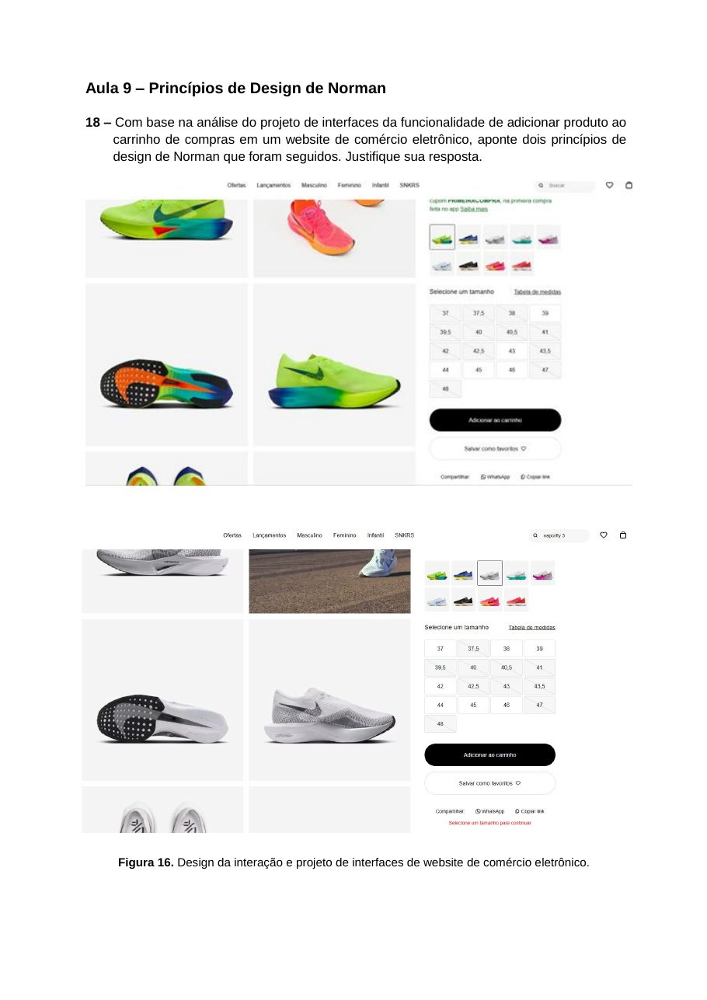
Resposta-modelo
O que se vê na Figura 16: duas telas da página de um tênis (a busca da segunda tela mostra “vaporfly 3”). Menu superior: Ofertas, Lançamentos, Masculino, Feminino, Infantil, SNKRS, busca, favoritos e sacola. À esquerda, fotos do produto; à direita, uma grade de miniaturas de cores (na 1ª tela a cor verde-limão está selecionada com borda; na 2ª, a branca/cinza), o texto “Selecione um tamanho” com o link “Tabela de medidas”, a grade de tamanhos de 37 a 48 (alguns com fundo cinza e traço diagonal), o botão preto “Adicionar ao carrinho”, o botão “Salvar como favoritos” e “Compartilhar: WhatsApp / Copiar link”. Na 2ª tela aparece, em vermelho, “Selecione um tamanho para continuar”.
Princípio: Significantes. Justificativa: as miniaturas de cores comunicam ao usuário a ação de selecionar as cores disponíveis para aquele modelo de tênis, e a borda indica qual está escolhida (verde-limão na 1ª tela, branca na 2ª). É o mesmo exemplo que o professor usou na Aula 9.
Princípio: Restrição física. Justificativa: o botão “Adicionar ao carrinho” tem rótulo, tamanho (ocupa toda a largura da coluna), cor preta de alto contraste e posição logo abaixo da grade de tamanhos, o que destaca a ação de adicionar o produto ao carrinho e facilita o clique preciso. Essa classificação é a mesma do slide da Aula 9.
Outros princípios aceitos (escolha dois no total):
- Restrições (estado desabilitado): os tamanhos com fundo cinza e traço diagonal indicam opções indisponíveis e limitam a escolha aos tamanhos em estoque, evitando erro.
- Feedback: a mensagem em vermelho “Selecione um tamanho para continuar”, que aparece quando se tenta adicionar sem tamanho, informa o que ocorreu e o que fazer.
- Mapeamento: ao trocar a cor (verde → branca), as fotos passam a mostrar o tênis na cor escolhida. A relação entre o controle e o efeito fica clara.
- Discoverability: menu de categorias e busca no topo, sempre visíveis, e a hierarquia cor → tamanho → adicionar ao carrinho mostram onde estão as ações.
Não legível na figura: pela resolução da imagem, não dá para afirmar com certeza quais números exatos estão riscados em cada tela. Na resposta, cite “os tamanhos com fundo cinza e traço diagonal” sem listar números.
Variação provável: “Na mesma figura, identifique um significante e uma restrição e explique a diferença entre eles”, ou “aponte o princípio de Norman associado à mensagem ‘Selecione um tamanho para continuar’ e justifique”.
Questão 19 da lista oficial. Com base no projeto de interfaces de um editor de texto (Figura 17), descreva as características de design que demonstram aderência a ao menos dois princípios de design de Norman. Justifique.
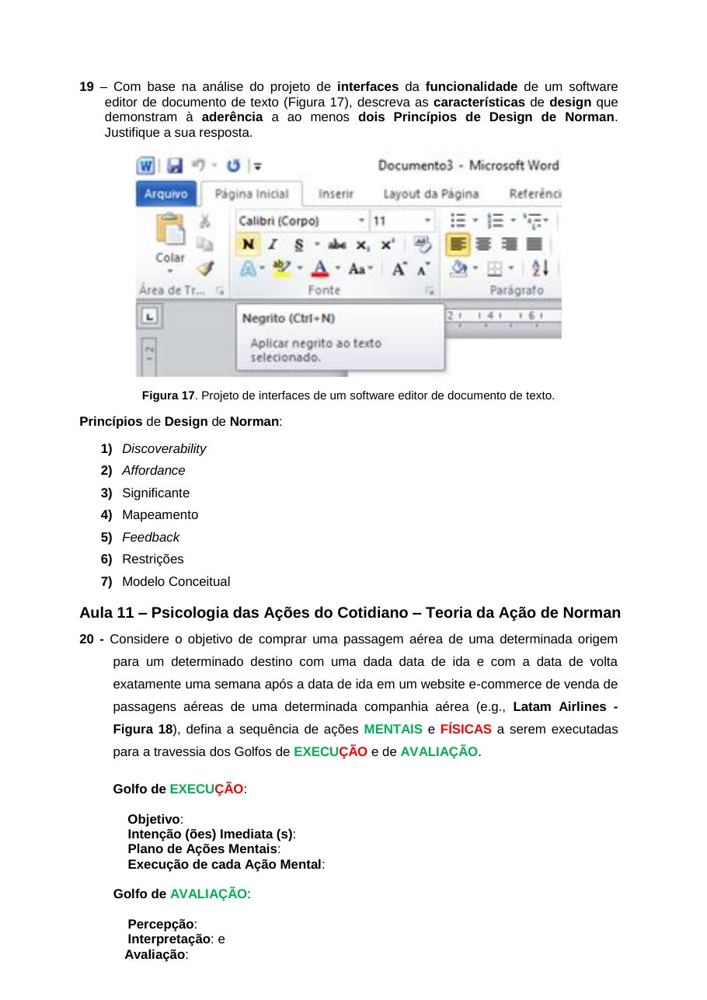
Resposta-modelo
O que se vê na Figura 17: Microsoft Word (“Documento3 - Microsoft Word”). Barra de acesso rápido com ícones de salvar (disquete), desfazer e refazer (setas curvas). Abas Arquivo, Página Inicial (ativa), Inserir, Layout da Página, Referências. Grupos “Área de Tr...” (Colar, recortar, copiar, pincel), “Fonte” (Calibri (Corpo), 11, N, I, S, tachado, subscrito, sobrescrito, realce, cor da fonte, Aa, aumentar/diminuir fonte) e “Parágrafo” (listas, alinhamentos, sombreamento, bordas, classificar). O botão N e o botão de alinhar à esquerda aparecem destacados em amarelo/laranja. Sob o N aparece a dica: “Negrito (Ctrl+N) — Aplicar negrito ao texto selecionado.”
Princípio: Significante. Justificativa: a dica “Negrito (Ctrl+N) — Aplicar negrito ao texto selecionado”, que aparece sobre o botão N, comunica o nome da ação, o seu resultado e o atalho de teclado. O ícone “N” em negrito também sinaliza onde está a ação de negritar.
Princípio: Mapeamento. Justificativa: os controles relacionados ficam agrupados e rotulados (“Área de Transferência”, “Fonte”, “Parágrafo”), aplicando os princípios de agrupamento e proximidade da Gestalt. O usuário sabe que tudo no grupo Fonte altera o texto e que tudo em Parágrafo altera o parágrafo.
Outros princípios aceitos:
- Restrições culturais: ícones de salvar (disquete), desfazer e refazer seguem convenções que os usuários de editores de texto conhecem. É o exemplo literal do slide de restrições culturais.
- Feedback: o botão de alinhar à esquerda aparece destacado, indicando o estado atual do parágrafo. Observação: o destaque do N aparece junto com a dica, então pode indicar apenas que o cursor está sobre o botão. Se usar esse elemento como feedback, diga que o destaque mostra o estado/realce do controle.
- Discoverability: as abas com rótulos (Página Inicial, Inserir, Layout da Página...) mostram as categorias de comando e onde cada ação está.
- Affordance: os botões da faixa indicam que podem ser clicados; as caixas “Calibri (Corpo)” e “11” com seta indicam uma lista de opções.
- Modelo conceitual: a metáfora da área de transferência (ícone de prancheta em “Colar”) explica de forma simples o copiar/colar.
Variação provável: “Na Figura 17, aponte uma restrição e classifique-a em física, semântica, cultural ou lógica, justificando” (resposta esperada: ícones salvar/desfazer/refazer = cultural), ou “explique como o agrupamento Fonte/Parágrafo exemplifica o princípio de mapeamento”.
Questão 20 da lista oficial. Considere o objetivo de comprar uma passagem aérea de uma origem para um destino, com data de ida e data de volta exatamente uma semana depois, no site de uma companhia aérea (Latam Airlines, Figura 18). Defina a sequência de ações MENTAIS e FÍSICAS para a travessia dos golfos de EXECUÇÃO (objetivo; intenção(ões) imediata(s); plano de ações mentais; execução de cada ação mental) e de AVALIAÇÃO (percepção, interpretação e avaliação).
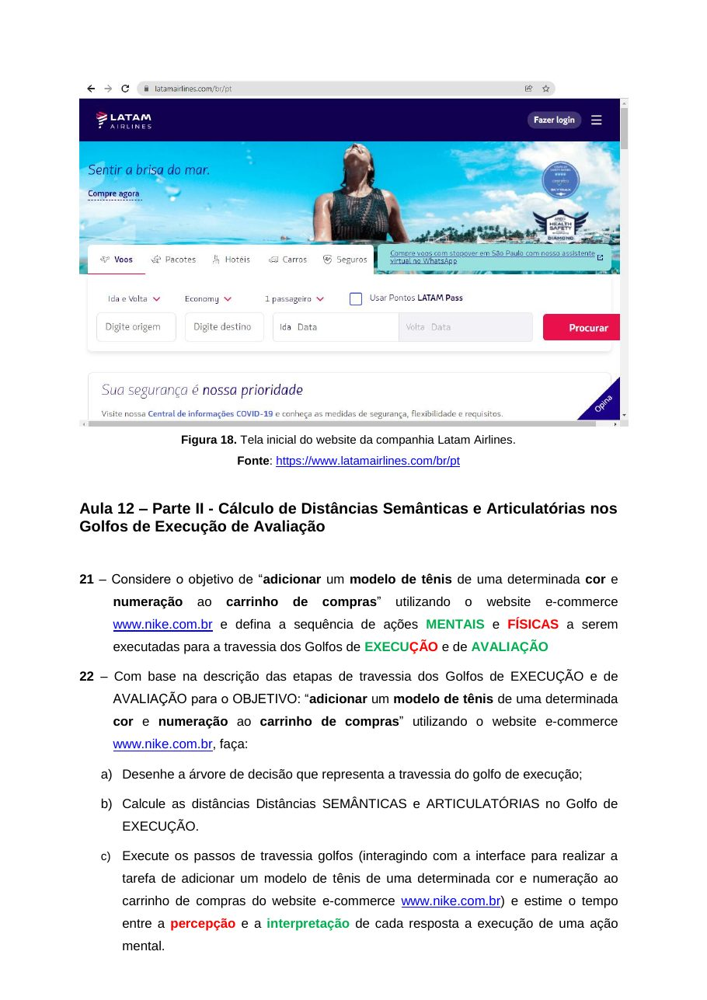
Resposta-modelo
O que se vê na Figura 18: tela inicial de latamairlines.com/br/pt. Abas Voos (selecionada), Pacotes, Hotéis, Carros, Seguros. Seletores “Ida e Volta”, “Economy” e “1 passageiro”; caixa “Usar Pontos LATAM Pass” desmarcada; campos “Digite origem”, “Digite destino”, “Ida Data” e “Volta Data” (este com fundo cinza); botão vermelho “Procurar”. A figura mostra apenas a tela inicial. As telas seguintes (lista de voos, tarifas, dados do passageiro, pagamento) não aparecem, então estão descritas abaixo de forma genérica, no formato do exemplo do professor.
GOLFO DE EXECUÇÃO
Objetivo: comprar uma passagem aérea de ida e volta no site da Latam.
Intenção imediata: comprar uma passagem de IDA E VOLTA, para 1 adulto, classe Economy, de ORIGEM Belo Horizonte (Confins – CNF) para DESTINO São Paulo (Guarulhos – GRU), com IDA em 10/11/2026 e VOLTA em 17/11/2026 (exatamente uma semana após a ida).
Plano de ações mentais:
- #1: Acessar a opção de compra de “Voos”.
- #2: Definir o tipo de viagem, a classe e o número de passageiros (Ida e Volta, Economy, 1 passageiro).
- #3: Informar os dados da viagem: origem, destino, data de ida e data de volta.
- #4: Procurar os voos disponíveis.
- #5: Selecionar o voo e a tarifa de ida.
- #6: Selecionar o voo e a tarifa de volta.
- #7: Confirmar o resumo da viagem? (Sim ou Não)
- #8: Informar os dados do passageiro.
- #9: Informar os dados de pagamento e confirmar a compra.
Execução de cada ação mental (cada ação física é seguida da travessia do GOLFO DE AVALIAÇÃO: percepção, interpretação e avaliação):
Execução AÇÃO #1: Acessar a opção “Voos”
- AÇÃO FÍSICA #1.1: Clicar na aba “Voos”.
- Percepção: a aba “Voos” aparece destacada (sublinhada) e o formulário de busca de voos é exibido.
- Interpretação: estou na área de compra de passagens aéreas.
- Avaliação: estou caminhando em direção ao meu objetivo e irei definir o tipo de viagem.
Execução AÇÃO #2: Definir tipo de viagem, classe e passageiros
- AÇÃO FÍSICA #2.1: Conferir o seletor “Ida e Volta” (se estivesse “Somente ida”, clicar e escolher “Ida e Volta”).
- Percepção: o seletor exibe “Ida e Volta” e há dois campos de data, “Ida” e “Volta”.
- Interpretação: a busca será de ida e volta.
- Avaliação: estou caminhando em direção ao meu objetivo e irei executar o próximo passo.
- AÇÃO FÍSICA #2.2: Conferir os seletores “Economy” e “1 passageiro” e manter a caixa “Usar Pontos LATAM Pass” desmarcada.
- Percepção: os seletores exibem “Economy” e “1 passageiro”; a caixa de pontos continua vazia.
- Interpretação: a busca será para 1 adulto, em classe econômica, pagando em dinheiro.
- Avaliação: estou caminhando em direção ao meu objetivo e irei informar os dados da viagem.
Execução AÇÃO #3: Informar origem, destino e datas
- AÇÃO FÍSICA #3.1: Clicar no campo “Digite origem”, digitar “Belo Horizonte” e selecionar “Belo Horizonte, Confins (CNF)” na lista de sugestões.
- Percepção: o campo de origem passa a exibir “Belo Horizonte (CNF)”.
- Interpretação: a origem informada está correta.
- Avaliação: estou caminhando em direção ao meu objetivo e irei executar o próximo passo.
- AÇÃO FÍSICA #3.2: Clicar no campo “Digite destino”, digitar “São Paulo” e selecionar “São Paulo, Guarulhos (GRU)”.
- Percepção: o campo de destino passa a exibir “São Paulo (GRU)”.
- Interpretação: o destino informado está correto.
- Avaliação: estou caminhando em direção ao meu objetivo e irei executar o próximo passo.
- AÇÃO FÍSICA #3.3: Clicar no campo “Ida Data” e selecionar 10/11/2026 no calendário.
- Percepção: o dia 10/11 aparece destacado, o campo “Ida” exibe a data e o campo “Volta” deixa de estar cinza.
- Interpretação: a data de ida foi registrada e agora posso informar a data de volta.
- Avaliação: estou caminhando em direção ao meu objetivo e irei executar o próximo passo.
- AÇÃO FÍSICA #3.4: Selecionar 17/11/2026 no calendário como data de volta.
- Percepção: o intervalo de 10/11 a 17/11 aparece destacado e o campo “Volta” exibe 17/11/2026.
- Interpretação: a volta está exatamente uma semana após a ida.
- Avaliação: estou caminhando em direção ao meu objetivo e irei procurar os voos.
Execução AÇÃO #4: Procurar os voos
- AÇÃO FÍSICA #4.1: Clicar no botão “Procurar”.
- Percepção: a tela mudou e mostra a lista de voos de ida CNF → GRU em 10/11, com horários, duração, escalas e preços.
- Interpretação: estes são os voos de ida disponíveis na data escolhida.
- Avaliação: estou caminhando em direção ao meu objetivo e irei escolher o voo de ida.
Execução AÇÃO #5: Selecionar voo e tarifa de ida
- AÇÃO FÍSICA #5.1: Clicar no voo direto das 07h00.
- Percepção: são exibidas as tarifas desse voo, com o que cada uma inclui e o preço.
- Interpretação: preciso escolher uma tarifa.
- Avaliação: estou caminhando em direção ao meu objetivo e irei executar o próximo passo.
- AÇÃO FÍSICA #5.2: Clicar em “Escolher” na tarifa mais barata.
- Percepção: a tela mudou e mostra os voos de volta GRU → CNF em 17/11; o voo de ida aparece resumido.
- Interpretação: a ida foi selecionada e agora devo escolher a volta.
- Avaliação: estou caminhando em direção ao meu objetivo e irei escolher o voo de volta.
Execução AÇÃO #6: Selecionar voo e tarifa de volta
- AÇÃO FÍSICA #6.1: Clicar no voo direto das 19h00 e em “Escolher” na mesma tarifa.
- Percepção: a tela mudou e mostra o resumo: ida 10/11 CNF → GRU 07h00, volta 17/11 GRU → CNF 19h00, tarifa e valor total.
- Interpretação: os dois trechos e as datas estão corretos e o valor total é o exibido.
- Avaliação: estou caminhando em direção ao meu objetivo e irei executar o próximo passo.
Execução AÇÃO #7: Confirmar o resumo da viagem? (Sim)
- AÇÃO FÍSICA #7.1: Clicar em “Continuar”.
- Percepção: a tela mudou e mostra o formulário de dados do passageiro.
- Interpretação: preciso informar os dados de quem vai viajar.
- Avaliação: estou caminhando em direção ao meu objetivo e irei executar o próximo passo.
Execução AÇÃO #8: Informar os dados do passageiro
- AÇÃO FÍSICA #8.1: Preencher nome, sobrenome, data de nascimento, documento, e-mail e telefone e clicar em “Continuar”.
- Percepção: a tela mudou e mostra a página de pagamento com o valor total.
- Interpretação: os dados do passageiro foram aceitos e falta pagar.
- Avaliação: estou caminhando em direção ao meu objetivo e irei executar o próximo passo.
Execução AÇÃO #9: Informar os dados de pagamento e confirmar a compra
- AÇÃO FÍSICA #9.1: Selecionar “Cartão de crédito”, preencher os dados do cartão e o número de parcelas.
- Percepção: os campos exibem os dados informados (número mascarado) e a bandeira do cartão é reconhecida.
- Interpretação: o cartão foi aceito para pagamento.
- Avaliação: estou caminhando em direção ao meu objetivo e irei executar o próximo passo.
- AÇÃO FÍSICA #9.2: Marcar o aceite das condições da tarifa e clicar em “Pagar”.
- Percepção: a tela mudou e mostra a mensagem de compra confirmada, com o código da reserva e os trechos de ida (10/11) e volta (17/11).
- Interpretação: a passagem de ida e volta foi comprada no meu nome.
- Avaliação: alcancei o meu objetivo.
Fechamento: objetivo, intenção imediata e plano de ações (#1 a #9) são as ações MENTAIS do golfo de execução; cada “AÇÃO FÍSICA” é a execução. Percepção (física), interpretação e avaliação (mentais), depois de cada ação, formam a travessia do golfo de AVALIAÇÃO. Se uma avaliação fosse negativa (ex.: não há voo na data de volta), o usuário geraria uma nova intenção imediata (ex.: aceitar voo com escala ou outro horário), como no item 7.2 do modelo.
Ligação com os princípios (se a prova pedir): o campo “Volta Data” em cinza antes da escolha da ida é uma restrição (estado desabilitado) que orienta a ordem de preenchimento; o destaque da aba “Voos” e do intervalo de datas no calendário é feedback; os textos “Digite origem” e “Digite destino” são significantes.
Variação provável: a mesma estrutura cobrada em outro site ou objetivo: “comprar só a ida com 2 passageiros”, “adicionar um tênis de cor e numeração ao carrinho na Nike” (questão 21) ou “efetuar uma transferência no internet banking” (exemplo do professor). Mude a intenção imediata e o plano, mas mantenha o formato AÇÃO #N → AÇÃO FÍSICA #N.x → Percepção / Interpretação / Avaliação.
Aula 12 (Parte I) — Affordances e Metáforas de Interface
Por que surgiram as metáforas: evolução das interfaces
O professor abre a aula mostrando como a relação pessoa–computador mudou:
- Primeiras máquinas (ENIAC, UNIVAC, EDVAC): relação um-para-um, por chaves e mostradores.
- Cartões perfurados e processamento em batch: a interação direta some; vira uma transação mediada pelo operador do computador.
- Time sharing e teletipos: o contato direto volta e surgem as interfaces de linha de comando e orientadas por menu.
- Modelo de conversação: humano e computador viram duas entidades que "conversam" por meio de uma tela. O usuário age (AÇÃO) e o sistema responde; o usuário faz PERCEPÇÃO, INTERPRETAÇÃO e AVALIAÇÃO da resposta.
- Contribuição da Linguística: esse diálogo não é linear (fala, pensa na resposta, responde de novo...). Para o diálogo funcionar é preciso um meio comum de significados: a LINGUAGEM da interface.
- Enganos, resultados inesperados e mensagens de erro são evidência de uma quebra de fluência na conversação: o meio comum de significados virou fonte de desentendimento.
Metáfora de interface: definição
Metáfora (definição geral): objeto ou qualidade que, por meio de uma palavra ou símbolo, designa (referencia) outro objeto ou qualidade com o qual tem uma relação de semelhança. Ex.: "saúde de ferro" = saúde forte como o ferro.
Metáfora de interface (Carroll et al., 1988; Wozny, 1989): fornece aos usuários um "esquema" (visão) do funcionamento da interface que previne desentendimentos, ou seja, facilita a criação de um contexto compartilhado entre usuário e sistema.
Duas formas de fazer isso aparecem nos slides:
- Objetos do mundo real que carregam significados (disquete, câmera, pasta de arquivo).
- Representações linguísticas e simbólicas que comunicam significados (mensagens) ao usuário (ícones, rótulos).
Por que metáforas?
- Fazem parte do nosso pensamento e da linguagem do dia a dia, não só da poesia ("gastar dinheiro", "defender um argumento", "trânsito engarrafado").
- Normalmente são invisíveis: a gente usa sem perceber.
- Funcionam como modelos naturais: usamos o que já conhecemos de objetos concretos para dar forma a conceitos abstratos.
- As características das metáforas na linguagem são as mesmas que governam as metáforas de interface; elas permeiam as interfaces que usamos e projetamos (Erickson, 1990).
Os dois tipos de metáfora de design (classificação do professor)
1. Metáfora do Mundo Real (ligada à Engenharia Cognitiva)
- A interface é, em si mesma, o mundo sobre o qual o usuário atua, e cujo estado muda em resposta às ações.
- O usuário tem a sensação de estar agindo sobre o próprio domínio (a realidade).
- Há mapeamento de conceitos (concretos ou abstratos) do mundo real para elementos gráficos (concretos) da interface.
- Exemplos dos slides: interface do Mac, parte da interface do Windows.
- Exemplo do professor: arrastar um documento de uma pasta para outra no gerenciador de arquivos. O usuário acredita (interpretação) que está mudando o documento de lugar; o que de fato ocorre (resposta do sistema) é que o apontador para o arquivo mudou ("apontador" também é uma metáfora).
2. Metáfora da Conversação (ligada à Engenharia Semiótica)
- A interface é o meio linguístico onde ocorre o intercâmbio, a COMUNICAÇÃO entre DESIGNER e USUÁRIO.
- Exemplos dos slides: interfaces "conversacionais" (de comandos, em linguagem natural).
- Exemplo do professor: no Microsoft Word, o designer comunica, por símbolos e rótulos textuais (signos = representações), que o usuário pode "salvar", "desfazer" ou "refazer" (mensagens = significados).
Os três elementos que o professor pede na análise de conversação:
- Signo / Representação: o que aparece na tela (ícone de disquete).
- Mensagem / Significado: o que o designer quis comunicar ("salvar um arquivo").
- Interpretante: a ideia que o signo transmite ao usuário ("ao clicar no botão com o ícone de disquete, as últimas modificações feitas no arquivo serão salvas").
- Cenário: abrir uma guia anônima para iniciar uma sessão de navegação no Chrome.
- Tipo: Conversação. Justificativa: o símbolo "chapéu com óculos" foi usado pelo designer para comunicar a mensagem "sessão de navegação privada, os dados não estão sendo gravados".
- Representação: ícone com a imagem de "chapéu com óculos".
- Significado (mensagem): nenhuma informação da sessão será gravada no histórico.
- Interpretante: ao ver o ícone, o usuário infere que seus dados de navegação não serão gravados no histórico.
Como reconhecer o tipo numa interface
- Pergunte: eu "manipulo" o objeto ou "leio uma mensagem" para saber o que fazer? Manipular (arrastar arquivo para a lixeira, mover um card no Trello, arrastar um pino no mapa) aponta para Mundo Real. Ler ícones, rótulos e botões que dizem o que vai acontecer aponta para Conversação.
- Conversação: menus, barras de ícones com rótulos, comandos, assistentes que respondem em linguagem natural.
- Mundo Real: área de trabalho com pastas e lixeira, arrastar e soltar, mesa de edição em que o objeto muda de lugar ou de tamanho conforme o gesto.
Definições para reproduzir na prova (redação dos slides)
- Metáfora: "Objeto ou qualidade mediante uma palavra ou símbolo que designa (referencia) outro objeto ou qualidade que tem com o primeiro uma relação de semelhança."
- Metáfora de interface (Carroll et al., 1988; Wozny, 1989): "fornecem aos usuários um 'esquema' (visão) do funcionamento da interface que previna desentendimentos, ou seja, que facilite a criação de um contexto compartilhado."
- Metáfora do Mundo Real (Engenharia Cognitiva): "Interface é, em si mesma, o mundo sobre o qual o usuário atua, e cujo estado muda em resposta às ações. O usuário tem a sensação de estar agindo sobre o próprio domínio (realidade)."
- Metáfora da Conversação (Engenharia Semiótica): "Interface é o meio linguístico onde o intercâmbio (comunicação entre designer e usuário) ocorre."
- Por que metáforas: "As metáforas funcionam como modelos naturais, nos permitindo usar conhecimento familiar de objetos concretos e experiências para dar forma a conceitos mais abstratos."
| Mundo Real | Conversação | |
|---|---|---|
| Abordagem | Engenharia Cognitiva | Engenharia Semiótica |
| O que é a interface | O próprio mundo sobre o qual o usuário age | Meio linguístico de comunicação designer–usuário |
| Como o usuário age | Manipula objetos (arrastar, soltar, redimensionar) | Interpreta signos e rótulos; dá comandos |
| Exemplos dos slides | Mac, parte do Windows; arrastar documento entre pastas | Interfaces de comando, linguagem natural; Word (salvar, desfazer, refazer); Chrome (guia anônima) |
Limites e riscos das metáforas
- A metáfora cria uma crença que pode não corresponder ao que o sistema faz (slide): ao arrastar o documento, o usuário acredita que o mudou de lugar, mas o que mudou foi o apontador. Enquanto a crença e o efeito coincidem, tudo bem; quando divergem, aparece o desentendimento.
- Exemplo dos slides de Caetano (Parte II): arrastar do pen drive copia; arrastar para uma pasta do mesmo disco move. A mesma ação "física" tem efeitos diferentes e o usuário pensa "sumiu! apaguei?". É a metáfora falhando.
- Quando a metáfora falha surgem enganos, resultados inesperados e mensagens de erro, ou seja, quebra de fluência na conversação.
- Metáforas são invisíveis: o usuário não percebe que está usando uma, então também não percebe onde ela deixa de valer.
- (complemento: Hutchins, Hollan e Norman, 1985) A metáfora do mundo-modelo é ruim para tarefas repetitivas (melhor um roteiro/descrição simbólica), para lidar com variáveis e conjuntos de itens e para precisão. Ao abrir mão da conversação, abre-se mão do poder das descrições. Os autores também alertam: se a interface só imita o que já fazemos, perde-se a chance de oferecer novas formas de pensar a tarefa.
Teste-se
1. Segundo Carroll et al. (1988) e Wozny (1989), qual é a função das metáforas de interface?
- Substituir completamente a necessidade de aprendizado, tornando manuais desnecessários.
- Fornecer ao usuário um esquema do funcionamento da interface que previna desentendimentos e facilite um contexto compartilhado.
- Deixar a interface mais bonita, aproximando-a de objetos decorativos do mundo real.
- Reduzir o número de ações físicas necessárias para executar uma tarefa.
Ver resposta
Letra b. É a definição dos slides: "esquema (visão) do funcionamento da interface que previna desentendimentos, ou seja, que facilite a criação de um contexto compartilhado". (a) exagera: metáfora ajuda a aprender, não elimina o aprendizado. (c) confunde metáfora com estética. (d) é assunto de distância articulatória, não a função da metáfora.
2. No Windows Explorer, o usuário arrasta um documento de uma pasta para outra e acredita que "mudou o documento de lugar". Qual metáfora está em jogo e o que, segundo o professor, realmente acontece?
- Conversação; o arquivo é copiado fisicamente para outro setor do disco.
- Conversação; o sistema envia uma mensagem confirmando a mudança.
- Mundo Real; o que muda de fato é o apontador para o arquivo.
- Mundo Real; o documento é apagado e recriado na pasta de destino.
Ver resposta
Letra c. Arrastar e soltar faz o usuário sentir que age sobre o próprio domínio, característica da metáfora do Mundo Real. O slide diz que o que efetivamente ocorre é a mudança do apontador para o arquivo. (a) e (b) erram o tipo; (d) inventa um comportamento que o slide não descreve.
3. A metáfora da Conversação está associada a qual abordagem e o que ela considera a interface?
- Engenharia Cognitiva; a interface é o mundo sobre o qual o usuário atua.
- Engenharia Semiótica; a interface é o meio linguístico de comunicação entre designer e usuário.
- Engenharia Semiótica; a interface é o mundo cujo estado muda em resposta às ações.
- Engenharia Cognitiva; a interface é o meio de comunicação entre usuário e operador do computador.
Ver resposta
Letra b. Conversação = Engenharia Semiótica = comunicação designer–usuário. (a) e (c) descrevem a metáfora do Mundo Real (em (c) com a abordagem trocada). (d) mistura a Engenharia Cognitiva com a era dos cartões perfurados, em que o operador mediava a interação.
4. No Word, o botão com ícone de disquete. Qual alternativa descreve corretamente o interpretante?
- O desenho do disquete na barra de ferramentas.
- A mensagem "salvar um arquivo" que o designer quis passar.
- A ideia formada pelo usuário: "ao clicar nesse botão, as últimas modificações do meu texto serão salvas".
- O arquivo .docx gravado no disco após o clique.
Ver resposta
Letra c. Interpretante é o significado (ideia) que o signo transmite ao usuário. (a) é o signo/representação; (b) é a mensagem/significado do designer; (d) é o resultado do sistema, não um elemento da análise semiótica.
5. Na evolução das interfaces apresentada em aula, o que caracteriza a fase dos cartões perfurados e do processamento em batch?
- Relação um-para-um entre pessoa e computador por chaves e mostradores.
- A interação direta foi substituída por uma transação mediada pelo operador do computador.
- O contato direto voltou e surgiram as interfaces de linha de comando.
- Surgiu o modelo em que usuário e sistema conversam por meio de uma tela.
Ver resposta
Letra b. (a) é a fase ENIAC/UNIVAC; (c) é time sharing e teletipos; (d) é o modelo de conversação, posterior.
6. Na visão de "interface como conversa", uma mensagem de erro do tipo "Erro NF-0010hf — Tente novamente" é melhor descrita como:
- Um exemplo de metáfora do Mundo Real bem aplicada.
- Uma prova de que o diálogo usuário–sistema é linear.
- Uma affordance negativa que impede o erro.
- Evidência de quebra de fluência na conversação: o meio comum de significados virou fonte de desentendimento.
Ver resposta
Letra d. O slide diz que enganos, resultados inesperados e mensagens de erro evidenciam quebra de fluência. (b) contradiz o slide (o diálogo NÃO é linear). (c) erra: affordance negativa impede o erro antes de acontecer; aqui o erro já aconteceu. (a) não tem relação.
7. Segundo os slides, por que usamos metáforas na interface?
- Porque metáforas são recursos exclusivos da poesia que tornam a interface mais criativa.
- Porque o usuário sempre percebe conscientemente a metáfora e decide usá-la.
- Porque funcionam como modelos naturais: usamos o conhecimento de objetos concretos e experiências familiares para dar forma a conceitos abstratos.
- Porque eliminam a necessidade de feedback do sistema.
Ver resposta
Letra c. É a redação do slide 16. (a) contradiz o slide: metáforas estão na linguagem cotidiana, não só na poesia. (b) contradiz o slide: metáforas costumam ser invisíveis. (d) não tem base.
8. Qual conceito descreve a situação: "O usuário acredita estar agindo sobre o próprio domínio, e o estado da interface muda em resposta às suas ações"?
- Metáfora do Mundo Real.
- Metáfora da Conversação.
- Interpretante.
- Quebra de fluência na conversação.
Ver resposta
Letra a. É a definição do slide 17. (b) é a interface como meio de comunicação designer–usuário. (c) é a ideia que um signo transmite ao usuário. (d) é o que acontece quando o significado comum falha.
9. Defina metáfora de interface e diferencie a metáfora do Mundo Real da metáfora da Conversação, indicando a abordagem teórica de cada uma e um exemplo.
Resposta-modelo
Metáfora de interface (Carroll et al., 1988; Wozny, 1989): fornece aos usuários um "esquema" (visão) do funcionamento da interface que previna desentendimentos, ou seja, que facilite a criação de um contexto compartilhado.
Mundo Real (Engenharia Cognitiva): a interface é, em si mesma, o mundo sobre o qual o usuário atua, e cujo estado muda em resposta às ações; o usuário tem a sensação de agir sobre o próprio domínio. Há mapeamento de conceitos do mundo real para elementos gráficos. Exemplo: arrastar um documento de uma pasta para outra no Windows.
Conversação (Engenharia Semiótica): a interface é o meio linguístico onde ocorre a comunicação entre designer e usuário; o designer comunica, por signos (ícones e rótulos), as mensagens sobre o que o usuário pode fazer. Exemplo: no Word, o ícone de disquete comunica "salvar o arquivo".
Diferença central: no Mundo Real o usuário age sobre objetos; na Conversação o usuário interpreta mensagens do designer.
10. (Variação das questões 24/25) Analise a interface do gerenciador de arquivos do Windows (Explorador de Arquivos), em que o usuário arrasta arquivos entre pastas e para a Lixeira, e aponte a metáfora de interface predominante. Justifique.
Resposta-modelo
Metáfora predominante: Mundo Real (Engenharia Cognitiva).
Justificativa: a interface é o próprio mundo sobre o qual o usuário atua: arquivos e pastas aparecem como objetos, e o usuário os manipula diretamente (arrasta um documento para outra pasta, arrasta para a Lixeira) e vê o estado mudar em resposta. Há mapeamento de conceitos do mundo físico (arquivo, pasta, lixeira) para elementos gráficos, e de operações do mundo real (pegar e colocar em outro lugar) para movimentos do mouse. O usuário acredita estar mudando o documento de lugar, quando o que muda de fato é o apontador para o arquivo.
11. No app do Nubank, aponte e descreva uma metáfora de interface no formato da atividade do professor (Cenário; Tipo + Justificativa; Representação; Significado; Interpretante).
Resposta-modelo
- Cenário: o usuário abre o app em público e quer esconder o valor do saldo; toca no ícone de olho ao lado do saldo e os valores viram "••••".
- Tipo: Conversação. Justificativa: o designer usa o símbolo "olho" para comunicar ao usuário a mensagem "mostrar/ocultar valores".
- Representação: ícone de olho (aberto quando o saldo aparece; riscado quando está oculto).
- Significado (mensagem): ao tocar, os valores da conta são exibidos ou escondidos.
- Interpretante: ao ver o olho, o usuário entende "se eu tocar aqui, meu saldo fica visível ou invisível para quem estiver olhando".
Aula 12 (Parte II) — Engenharia Cognitiva: distâncias semânticas e articulatórias nos golfos
Manipulação direta (Shneiderman)
Características das interfaces por manipulação direta:
- Representação contínua do OBJETO de interesse.
- Ações FÍSICAS (pressionar botões, clicar, arrastar) em vez de sintaxe complexa.
- Operações INCREMENTAIS e REVERSÍVEIS com impacto imediatamente VISÍVEL.
Ela aproxima a interação da manipulação de objetos no mundo real, estimula a exploração com o mouse (clique, duplo clique, arrastar; mais difícil para usuários com limitação visual ou motora) e faz mapeamento de conceitos e de operações do mundo real para elementos gráficos e movimentos de mouse.
Benefícios: novatos aprendem rápido com uma demonstração; experientes executam muitas tarefas rapidamente; ocasionais assimilam os conceitos; mensagens de erro ficam quase desnecessárias; o usuário percebe se está chegando (ou não) ao objetivo; fica menos ansioso porque tudo é fácil de entender e reversível.
Directness (sensação de "diretividade")
- Distância entre o pensamento e a capacidade física do sistema.
- Quanto menor essa distância, mais direta a tradução entre intenção e solicitação, mais fácil a interpretação e maior a sensação de directness.
- Também envolve o envolvimento/engajamento do usuário na tarefa.
(complemento: Hutchins, Hollan e Norman, 1985) Os autores separam directness em duas partes: distância (o quanto o usuário precisa "traduzir" o que quer na linguagem do sistema e o que o sistema mostra no que ele quer saber) e engajamento direto (a sensação de agir sobre os próprios objetos, e não por intermédio de um "intérprete"). A distância, por sua vez, se divide em semântica (o significado: a linguagem do sistema expressa o que eu quero, de forma concisa?) e articulatória (a forma: a maneira de expressar se parece com o significado?).
Revisão: os 7 estágios e os dois golfos
O diagrama usado nos slides (Barbosa e Silva, 2017) tem uma parte cognitiva (mental) e uma sensório-motora (física):
- Golfo de Execução (descendo pelo lado esquerdo):
- Metas gerais (Objetivo / Meta Global) — mental
- Intenção imediata (sub-metas ou metas locais) — mental
- Especificação do plano de ação (ações mentais) — mental
- Execução de ação de controle (ações físicas) — físico
- Golfo de Avaliação (subindo pelo lado direito):
- Percepção da reação do sistema — físico/sensorial
- Interpretação do estado do sistema — mental
- Avaliação da situação (em relação à intenção/meta) — mental
Distância semântica (DS) e distância articulatória (DA): definições
As duas medem um "GRAU DE INDIREÇÃO": o número de passos necessários para ir de um ponto de ORIGEM a um ponto de DESTINO. O que muda é o tipo de passagem:
- Distância SEMÂNTICA: passagem de uma etapa MENTAL para outra etapa MENTAL (ação mental → ação mental).
- Distância ARTICULATÓRIA: passagem de uma etapa MENTAL para a FÍSICA ou vice-versa.
Onde cada uma aparece nos golfos:
- Execução, DS: Meta Global → Intenção Imediata; e Intenção Imediata → Plano de Ações.
- Execução, DA: Plano de Ações (cada ação mental) → Execução (ações físicas, acionar controles da interface).
- Avaliação, DA: Percepção (o que aparece na tela, a "forma") → Interpretação.
- Avaliação, DS: Interpretação → Avaliação (o "significado": isso corresponde ao que eu queria?).
Resumo do professor (Caetano, 2014):
- DS avalia a distância entre as METAS/TAREFAS do usuário e a FUNCIONALIDADE do sistema associada a elas: existe um comando cujo significado (efeito) seja aquele pretendido? DS pequena = existe um comando diretamente associado à meta. DS grande = o usuário precisa decompor metas em submetas e planejar a tarefa.
- DA avalia o relacionamento entre o SIGNIFICADO (efeito) de um comando e a FORMA da sequência de ações tal como é oferecida ao usuário.
- Esquema: Objetivos do usuário —(DS)→ Significado da expressão —(DA)→ Forma da expressão.
- Do pen drive para o Desktop: intenção "quero copiar um arquivo"; tradução "devo selecionar e arrastar até o destino"; acionamento "seleciono, arrasto e solto". Percepção: aparece uma janela com sinal de que está copiando e o arquivo continua na origem. Interpretação: o arquivo "foi" para o destino, copiei. Avaliação: "atingi minha meta". Distâncias pequenas.
- Do Desktop para uma pasta do mesmo disco: mesmas ações, mas a percepção é "o arquivo desaparece da origem" e a interpretação vira "sumiu! apaguei? movi?". Avaliação: "não consegui o que queria". A mesma forma de ação produziu outro efeito (mover em vez de copiar) e o feedback não deixou claro o que aconteceu: distâncias grandes no golfo de avaliação.
Como calcular, passo a passo (exatamente como nos slides)
Notação do professor: O = Origem, D = Destino. Cada ligação de uma origem a um destino vale 1 passo. MG = Meta Global, SM = Submeta, SSM = Sub-submeta, II = Intenção Imediata, PA = Plano de Ações, AF = Ação Física.
- Descreva a travessia completa (o formato da questão 20/21): Objetivo; Intenção(ões) imediata(s); Plano de ações mentais (numeradas); Execução de cada ação mental (ações físicas numeradas como 1.1, 1.2...); e para cada resposta do sistema, Percepção, Interpretação e Avaliação.
- Monte a árvore de decisão do golfo de execução: raiz = Meta Global; filhos = intenções/submetas; netos = ações mentais do plano; folhas = ações físicas. Cada ligação pai → filho é um passo.
- DS da Meta Global para a Intenção Imediata (M–II): conte quantas intenções imediatas saem da meta. Com uma intenção, M–II = 1 (slide: "Objetivo – Intenção Imediata = 1"). No exemplo do PowerPoint (duas intenções: criar arquivo com o personagem; simular a animação) o slide marca O: 1, D: 2, DS = 2.
- DS da Intenção Imediata para o Plano de Ações (II–PA): conte quantas ações mentais o plano tem.
- Transferência bancária: plano = informar valor, informar tipo da transação, informar dados da conta → DS = 3.
- Mudar a cor do título para vermelho: plano = selecionar título, selecionar a cor vermelha, confirmar → DS = 3.
- Paint (cor de fundo verde oliva): plano = acionar menu Formatar > Cor de fundo, informar R, informar G, informar B, confirmar → II–PA = 5.
- DA de cada ação mental para a execução (uma conta por ação mental): conte quantas ações físicas são necessárias para realizar aquela ação mental.
- Ação mental 3.3 "Definir a conta destinatária" → AF 3.3.1 Banco, AF 3.3.2 Agência, AF 3.3.3 Número da conta → DA = 3.
- PowerPoint, ação 3.2 "Escolher o personagem" → clicar no menu "Selecionar imagem", selecionar a imagem, clicar em OK → DA = 3 (slide: O: 3.2, D: 4, DA = 3).
- Paint, "Acionar menu" → clicar em Formatar, clicar em Cor de fundo → DA = 2.
- Cor do título: O: 1 Selecionar título → D: execução [1] → DA = 1; O: 3 Confirmar → D: execução [5] (clicar OK) → DA = 1.
- Some se a questão pedir total (é o que o professor faz nas árvores: "Total: MG–SMs = N", "Total: SMs–Ações = N").
- Interprete o resultado: distância maior = mais passos = mais esforço cognitivo; diga onde está o "gargalo" e como o design poderia encurtá-lo.
As três árvores de decisão dos slides (IHC PUC-Rio)
Primeira árvore: Meta Global → Submeta 1, Submeta 2, ..., Submeta n; cada submeta → 1 ação.
- DS: O: MG D: SM1 = 1; O: MG D: SM2 = 1; ...; O: MG D: SMn = 1 → Total MG–SMs = N.
- DA: O: SM1 D: Ação 1 = 1; ...; O: SMn D: Ação n = 1 → Total SMs–Ações = N.
- Ponto positivo: cada submeta vira diretamente uma única ação física, o que torna cada submeta intuitiva.
- Problema: o grande número de submetas torna a tarefa complexa, aumenta a carga cognitiva e o usuário não sabe por qual submeta começar.
Segunda árvore: Meta Global → Submeta 1 e Submeta 2; cada submeta → n ações.
- DS: O: MG D: SM1 = 1; O: MG D: SM2 = 1 → Total MG–SMs = 2.
- DA: O: SM1 D: Ação 1 = 1; ...; O: SM1 D: Ação n = 1; O: SM2 D: Ações = N → SM1–Ações = N; SM2–Ações = N.
- Ponto positivo: só duas submetas, tarefa simples e intuitiva.
- Problema: cada submeta exige n ações físicas, o que aumenta a carga cognitiva para concretizar cada submeta.
Terceira árvore: Meta Global → Submeta 1 e Submeta 2; a Submeta 1 → N sub-submetas → N ações; a Submeta 2 → ação.
- DS: O: MG D: SM1 = 1; O: MG D: SM2 = 1 → Total MG–SMs = 2; O: SM1 D: SSMs = N; O: SM2 D: SSMs = N → Total SMs–SSMs = N*N.
- DA: O: SSMs D: Ações = N; O: SSM D: Ação = 1 → Total SSMs–Ações = 1 + N.
- Ponto positivo: só duas submetas no topo.
- Problema: decompor submetas em sub-submetas e essas em n ações aumenta muito a carga cognitiva.
As árvores também podem representar golfos de avaliação (atividade 2 dos slides, proposta como estudo, sem resposta no material).
Definições para reproduzir na prova (redação dos slides)
- Distância Semântica: "está relacionada ao GRAU DE INDIREÇÃO (os PASSOS necessários para ir de um ponto de ORIGEM a um ponto de DESTINO) durante a PASSAGEM de uma etapa mental (AÇÃO MENTAL) para outra" (Barbosa e Silva, 2017). Resumo: "avalia a distância entre as METAS/TAREFAS do usuário e a FUNCIONALIDADE (controles físicos e estados) do sistema a elas associada, ou seja, se existe um comando no modelo de interação cujo significado (resultado ou efeito) seja aquele pretendido pelo usuário."
- Distância Articulatória: "está relacionada ao GRAU DE INDIREÇÃO (os passos necessários para ir de um ponto de ORIGEM a um ponto de DESTINO) durante a PASSAGEM de uma etapa MENTAL para a FÍSICA ou vice-versa." Resumo: "avalia o relacionamento entre o SIGNIFICADO (resultado ou efeito) de um COMANDO e a FORMA da SEQUÊNCIA DE AÇÕES (o comando) tal como é disponibilizado ao usuário."
- Directness: "distância entre o pensamento e a capacidade física do sistema; quanto menor for esta distância, mais direta será a tradução entre intenção e a solicitação, mais fácil será a interpretação e maior será a sensação de directness"; envolve o "envolvimento/engajamento (sensação) do usuário na tarefa".
- Manipulação Direta (Shneiderman): "representação contínua do OBJETO de interesse; ações FÍSICAS (pressionar botões) ao invés de utilizar uma sintaxe complexa; operações INCREMENTAIS e REVERSÍVEIS com impacto imediatamente VISÍVEL."
- Engajamento direto (complemento: Hutchins, Hollan e Norman, 1985): ocorre quando o usuário sente que interage diretamente com os objetos do domínio, e não que se comunica com um intermediário; a interface e o computador "ficam invisíveis". Requer distâncias semântica e articulatória pequenas na execução e na avaliação, entrada e saída que se referenciem (o objeto que aparece na tela é o mesmo em que se age), resposta sem atrasos e interface que não atrapalha.
Tabela 2x2 das distâncias (origem → destino de cada uma):
| Distância SEMÂNTICA (mental → mental: significado) | Distância ARTICULATÓRIA (mental ↔ físico: forma) | |
|---|---|---|
| Golfo de EXECUÇÃO | Meta Global → Intenção Imediata; Intenção Imediata → Plano de Ações. Pergunta: existe na interface uma função que corresponda ao que eu quero? Quantas submetas preciso planejar? | Plano de Ações (cada ação mental) → Execução das ações físicas. Pergunta: quantas ações físicas preciso para realizar cada ação mental? A forma do comando se parece com o seu efeito? |
| Golfo de AVALIAÇÃO | Interpretação do estado do sistema → Avaliação da situação. Pergunta: o que aconteceu corresponde ao meu objetivo? | Percepção da reação do sistema → Interpretação. Pergunta: consigo entender, pela forma do que aparece na tela, o que o sistema fez? |
Manipulação direta x engajamento direto: manipulação direta é o estilo de interface (as três características de Shneiderman). Engajamento direto é a sensação do usuário de agir sobre o próprio objeto, que a manipulação direta bem feita produz quando as distâncias são pequenas.
O papel do designer
- O designer pode ajudar o usuário diminuindo as distâncias semânticas e articulatórias nos dois golfos.
- Como: definir as ações e estruturas mais adequadas para comandar as funções; escolher elementos de interface que melhor comuniquem a informação desejada na entrada de dados; fornecer feedbacks significativos.
- Quanto mais próxima da estrutura da tarefa e das necessidades do usuário estiver a linguagem da interface, menor o esforço cognitivo.
- Software fácil de usar = fácil de entender e de reter (memorizar).
Teste-se
1. Segundo os slides, a distância semântica está relacionada ao grau de indireção na passagem:
- de uma etapa mental para uma etapa física.
- de uma etapa mental para outra etapa mental.
- de uma ação física para a percepção da resposta do sistema.
- de uma tela para outra tela da interface.
Ver resposta
Letra b. DS = mental → mental. (a) é a definição de distância articulatória. (c) e (d) não são definições usadas pelo professor; trocar de tela não é, por si só, uma etapa de nenhuma das distâncias.
2. No golfo de execução, a distância articulatória é medida entre:
- a Meta Global e a Intenção Imediata.
- a Intenção Imediata e o Plano de Ações.
- o Plano de Ações (cada ação mental) e a execução das ações físicas.
- a Percepção e a Interpretação do estado do sistema.
Ver resposta
Letra c. DA no golfo de execução: do plano formulado à execução, ou seja, acionar os controles da interface. (a) e (b) são distâncias semânticas. (d) é distância articulatória, mas do golfo de avaliação.
3. Intenção imediata: "Transferir R$ 300,00 para a conta de José". Plano de ações: informar o valor; informar o tipo da transação; informar os dados da conta. Qual a distância semântica entre a intenção imediata e o plano de ações?
- 1
- 3
- 5
- Não é possível calcular sem saber quantos cliques cada passo exige.
Ver resposta
Letra b. São 3 ações mentais no plano, e o slide marca DS = 3. (a) seria a distância Meta → Intenção. (d) confunde DS com DA: cliques entram só na articulatória.
4. A ação mental "Definir a conta destinatária" é executada preenchendo os campos Banco, Agência e Número da conta. A distância articulatória dessa ação é:
- 1, porque é uma só ação mental.
- 2, porque Banco e Agência formam um só dado.
- 3, uma para cada ação física.
- 0, porque preencher formulário não é uma ação física.
Ver resposta
Letra c. Exemplo literal do slide: AF 3.3.1 Banco, 3.3.2 Agência, 3.3.3 Número → DA = 3. (a) conta a origem em vez dos destinos. (b) e (d) não têm base.
5. Numa árvore em que a Meta Global se decompõe em muitas submetas e cada submeta corresponde a uma única ação física, qual é o ponto positivo e o problema apontados nos slides?
- Positivo: poucas submetas. Problema: muitas ações físicas por submeta.
- Positivo: cada submeta é diretamente uma ação, o que é intuitivo. Problema: o grande número de submetas aumenta a carga cognitiva e o usuário não sabe por onde começar.
- Positivo: distâncias semânticas iguais a zero. Problema: distâncias articulatórias infinitas.
- Positivo: decomposição em sub-submetas. Problema: distância semântica total N*N.
Ver resposta
Letra b. É a primeira árvore. (a) descreve a segunda árvore. (d) descreve a terceira. (c) é absurda: cada ligação vale 1, nada é zero.
6. Segundo o resumo dos slides, uma distância semântica pequena significa que:
- o comando exige poucos cliques.
- o feedback do sistema aparece rápido.
- o usuário precisa decompor a meta em várias submetas.
- existe um comando diretamente associado à meta do usuário.
Ver resposta
Letra d. Slide: "uma distância pequena significa que existe um COMANDO diretamente associado à META". (c) é o caso de distância grande. (a) fala de forma (articulatória). (b) é tempo de resposta, não distância.
7. No golfo de avaliação, a distância articulatória fica entre:
- a Percepção da reação do sistema e a Interpretação do estado do sistema.
- a Interpretação e a Avaliação da situação.
- a Avaliação e a Meta Global.
- a Execução e a Percepção.
Ver resposta
Letra a. Percepção é a etapa sensorial (forma do que aparece); passar dela para a interpretação (mental) é passagem físico → mental, portanto articulatória. (b) é a semântica da avaliação. (c) e (d) não são as passagens marcadas no esquema dos slides.
8. Qual alternativa não é característica de interface por manipulação direta segundo Shneiderman?
- Representação contínua do objeto de interesse.
- Ações físicas em vez de sintaxe complexa.
- Comandos digitados com parâmetros para garantir precisão.
- Operações incrementais e reversíveis com impacto imediatamente visível.
Ver resposta
Letra c. Comando digitado com parâmetros é exatamente a "sintaxe complexa" que a manipulação direta evita. (a), (b) e (d) são as três características do slide.
9. Qual a diferença entre manipulação direta e engajamento direto?
- São sinônimos: ambos designam o uso do mouse.
- Manipulação direta é o estilo de interface (objeto sempre visível, ações físicas, operações incrementais e reversíveis); engajamento direto é a sensação do usuário de agir sobre o próprio objeto, sem intermediário.
- Manipulação direta pertence à metáfora da Conversação; engajamento direto, à metáfora do Mundo Real.
- Engajamento direto é medido pela distância articulatória; manipulação direta, pela distância semântica.
Ver resposta
Letra b. (a) ignora que um é característica da interface e o outro é sensação do usuário. (c) erra: manipulação direta se liga ao Mundo Real. (d) inventa uma divisão: o engajamento exige as duas distâncias pequenas.
10. Qual conceito descreve a situação: "Para trocar a cor do título, o usuário sabe exatamente o que quer, mas precisa clicar com o botão direito, abrir 'Fonte', escolher a cor e clicar em OK"?
- Distância semântica grande no golfo de avaliação.
- Distância semântica grande no golfo de execução.
- Distância articulatória no golfo de execução: várias ações físicas para realizar as ações mentais.
- Engajamento direto máximo.
Ver resposta
Letra c. A intenção e o plano estão claros (a parte mental está resolvida); o custo está em passar do plano para as ações físicas, que é distância articulatória na execução. (a) e (b) tratam de passagens mentais. (d) é o oposto: muitos passos reduzem a sensação de directness.
11. Diferencie distância semântica de distância articulatória e explique onde cada uma aparece nos golfos de execução e de avaliação.
Resposta-modelo
As duas medem o grau de indireção, ou seja, o número de passos necessários para ir de um ponto de origem a um ponto de destino na travessia dos golfos.
- Distância semântica: passagem de uma etapa mental para outra etapa mental. Avalia a distância entre as metas do usuário e a funcionalidade do sistema: se existe um comando cujo significado (efeito) é o pretendido. Pequena = há um comando diretamente associado à meta; grande = o usuário precisa decompor a meta em submetas e planejar.
- Na execução: Meta Global → Intenção Imediata e Intenção Imediata → Plano de Ações.
- Na avaliação: Interpretação → Avaliação (o resultado corresponde ao objetivo?).
- Distância articulatória: passagem de uma etapa mental para a física, ou vice-versa. Avalia a relação entre o significado de um comando e a forma da sequência de ações que o realiza.
- Na execução: Plano de Ações → execução das ações físicas (acionar os controles).
- Na avaliação: Percepção → Interpretação (entender, pela forma da resposta, o que aconteceu).
Exemplo: transferência bancária. Plano com 3 ações mentais (valor, tipo, dados da conta) → DS = 3. A ação "definir a conta destinatária" exige preencher Banco, Agência e Número → DA = 3.
12. (Variação das questões 21/22) Considere o objetivo de "pedir um açaí de 500 ml com granola" no iFood. (a) Defina a sequência de ações mentais e físicas do golfo de execução; (b) represente a árvore de decisão; (c) calcule as distâncias semânticas e articulatórias.
Resposta-modelo
(a) Objetivo: pedir um açaí no iFood. Intenção imediata: pedir um açaí de 500 ml com granola da Açaiteria X. Plano de ações mentais: #1 encontrar a loja; #2 escolher o açaí de 500 ml; #3 adicionar granola; #4 adicionar ao carrinho; #5 finalizar o pedido. Execução: #1.1 tocar na busca, #1.2 digitar "açaí", #1.3 tocar na loja; #2.1 tocar em "Açaí 500 ml"; #3.1 marcar "Granola"; #4.1 tocar em "Adicionar"; #5.1 tocar em "Ver sacola", #5.2 tocar em "Fazer pedido".
(b)
- Meta Global: pedir açaí
- Intenção Imediata: açaí 500 ml com granola
- #1 Encontrar a loja → 1.1, 1.2, 1.3
- #2 Escolher o tamanho → 2.1
- #3 Adicionar granola → 3.1
- #4 Adicionar ao carrinho → 4.1
- #5 Finalizar → 5.1, 5.2
- Intenção Imediata: açaí 500 ml com granola
(c) DS: O: MG D: II = 1; O: II D: #1..#5 = 5 → total 6. DA: #1 = 3; #2 = 1; #3 = 1; #4 = 1; #5 = 2 → total 8. A maior distância articulatória está em encontrar a loja.
13. (Atividade 5 dos slides) Calcule as distâncias SEMÂNTICAS e ARTICULATÓRIAS no golfo de EXECUÇÃO do cenário "comprar uma barra de chocolate e um pacote de batata chips" (adicionar ao carrinho) no mercado on-line do Carrefour. Considere que, para cada produto, o usuário busca pelo nome, escolhe o item na lista de resultados e toca em "Adicionar".
Resposta-modelo
Árvore:
- Meta Global: comprar chocolate e batata chips (adicionar ao carrinho)
- Intenção 1: adicionar uma barra de chocolate
- 1.1 Buscar chocolate → clicar no campo de busca; digitar "chocolate"; pressionar Enter
- 1.2 Escolher a barra → clicar no produto
- 1.3 Adicionar → clicar em "Adicionar"
- Intenção 2: adicionar um pacote de batata chips
- 2.1 Buscar batata chips → clicar no campo; digitar "batata chips"; pressionar Enter
- 2.2 Escolher o pacote → clicar no produto
- 2.3 Adicionar → clicar em "Adicionar"
- Intenção 1: adicionar uma barra de chocolate
DS: O: MG D: Intenção 1 = 1; O: MG D: Intenção 2 = 1 → M–II = 2 (mesma lógica do PowerPoint, DS = 2). O: Intenção 1 D: [1.1, 1.2, 1.3] = 3; O: Intenção 2 D: [2.1, 2.2, 2.3] = 3 → II–PA = 6. Total DS = 8.
DA: 1.1 = 3; 1.2 = 1; 1.3 = 1 → Intenção 1 = 5. 2.1 = 3; 2.2 = 1; 2.3 = 1 → Intenção 2 = 5. Total DA = 10.
Análise: parece a segunda árvore dos slides (poucas intenções no topo, várias ações embaixo). Positivo: a meta se divide em apenas 2 intenções claras. Problema: a busca exige 3 ações físicas cada vez. Um botão "Adicionar" direto no card do resultado (sem abrir o produto) eliminaria o passo "escolher o item" e reduziria a DA.
Aula 12 (Parte III) — Avaliação de distâncias por Percurso Cognitivo
O que é o Percurso Cognitivo (Cognitive Walkthrough)
- É outra forma de avaliar distâncias semânticas e articulatórias.
- Método de avaliação de IHC baseado em INSPEÇÃO (os avaliadores inspecionam; não é teste com usuários).
- "Walkthrough" = "percorrer um caminho" ao fazer uma inspeção.
- Teoria por trás: Teoria do Aprendizado por Exploração, modelo CE+ (Polson e Lewis, 1990). Diante de algo novo, as pessoas tentam entender explorando a novidade num contexto concreto de atividade. Em IHC: diante de um sistema novo, o usuário começa a usar (explorando a interface) para aprender; não lê manual nem assiste tutorial primeiro.
- Objetivo / foco: avaliar a FACILIDADE DE APRENDIZADO pela exploração da interface. Ajuda a prever quanto tempo (esforço cognitivo) o usuário precisa para aprender a usar a interface. O método busca levar a um design que apoie, estimule e torne produtiva essa exploração.
- Considera a correspondência entre o MODELO CONCEITUAL do usuário e a IMAGEM DO SISTEMA quanto à estrutura da tarefa, à linguagem da interface e à resposta do sistema a cada ação.
- Entradas: perfis completos de usuários e uma representação completa das formas de interação (que não precisa ser uma implementação; pode ser protótipo).
- Quando aplicar: avaliação FORMATIVA (durante a construção) e SOMATIVA (sistema pronto).
Caminhos e narrativa
- Os avaliadores elaboram cenários típicos das tarefas. Os cenários identificam (1) os caminhos interativos que levam à conclusão da tarefa e (2) o que o usuário supostamente já sabe ao ver o sistema pela primeira vez.
- Para cada estado interativo do início ao fim da tarefa, os avaliadores constroem uma NARRATIVA plausível que explique por que o próximo caminho produtivo seria a escolha preferencial do usuário, de forma compatível com o perfil e o conhecimento inicial dele.
- Diagrama dos slides: do "ponto de partida" (usuário não sabe nada) ao "ponto de chegada" (usuário aprendeu a usar o sistema) existe um caminho racionalmente ideal (mais direto, curto e rápido) e vários caminhos possíveis com tentativas e erros. Conhecendo as estratégias de aprendizado por exploração (ensaio e erro), o design deve maximizar os bons ensaios e minimizar os erros.
- Problemas iniciais: qual é o caminho correto, se há muitos para a mesma meta (ligado ao princípio de flexibilizar as formas de interação)? O que o usuário sabe ao usar o sistema pela primeira vez, e de onde vem esse conhecimento?
Preparação e execução
Preparação — descrever:
- o usuário ou grupo de usuários-alvo;
- a tarefa avaliada (ex.: colorir uma forma gráfica num editor de slides);
- uma sequência "ideal" (ou ao menos correta) de objetivos, sub-objetivos e ações.
Execução: com um protótipo, os avaliadores percorrem a sequência ideal se comportando como o usuário e usam um conjunto pré-definido de perguntas para estruturar a avaliação e achar problemas de usabilidade com foco no aprendizado. A comparação é entre a estrutura da tarefa (controles físicos e estados do sistema) e a concepção/percepção do usuário (variáveis psicológicas: objetivos, intenções, ações mentais).
As 4 perguntas do avaliador (e onde cada uma cai nos golfos)
- O usuário tentará atingir a META CORRETA? (1a) Dada a decomposição da tarefa, saberá por onde começar e qual o próximo passo? (1b) O que vai tentar fazer a cada momento? Ou seja: conseguirá formular a intenção de forma compatível com a imagem do sistema (modelo conceitual da aplicação)? → parte cognitiva do golfo de execução: Meta → Intenção → Plano (distância semântica).
- O usuário perceberá que a AÇÃO correta está disponível? (2a) Onde está o elemento correspondente ao próximo passo? (2b) Quais ações a interface torna disponíveis? Ou seja: o elemento necessário está VISÍVEL? → passagem plano → execução (distância articulatória).
- O usuário associará o ELEMENTO correto à META? (3a) O elemento revela seu propósito e comportamento (affordance)? (3b) O usuário consegue identificar os elementos? Ou seja: identifica que aquele elemento produz o efeito desejado? → execução da ação de controle (distância articulatória).
- Se a ação correta for tomada, o usuário perceberá que progrediu? (4a) Como a interface apresenta o resultado de cada ação? (4b) O resultado corresponde ao objetivo? Ou seja: consegue PERCEBER, INTERPRETAR e AVALIAR a resposta? → golfo de avaliação (4a ≈ percepção/interpretação; 4b ≈ avaliação).
No diagrama dos golfos do slide 25, a pergunta 1 circula Metas → Intenção; a 2, a especificação do plano; a 3, a execução da ação de controle (todas no lado esquerdo, execução); a 4 e 4a/4b, o lado direito (avaliação).
Análise: problemas e soluções para cada pergunta
- Pergunta 1 falha — o usuário sequer tenta fazer a coisa certa. Soluções: eliminar a ação (combinar com outras ou deixar o sistema fazer sozinho); dar uma instrução de que a ação é necessária; modificar parte da tarefa para que o usuário entenda a necessidade da ação.
- Pergunta 2 falha — formula a intenção certa mas não sabe que a ação existe. Solução: tornar a ação visível (ex.: criar item de menu ou botão para uma ação que só existia como atalho de teclado).
- Pergunta 3 falha — não consegue mapear o objetivo nas ações disponíveis. Solução: renomear ações e reescrever instruções com vocabulário mais familiar ao usuário.
- Pergunta 4 falha — não percebe que está avançando. Solução: destacar ou expressar melhor o feedback: deixar claro o que ocorreu e o que fazer para concluir.
Perguntas da análise final: que conhecimento o usuário precisa ter a priori? Que conhecimento deveria aprender durante a tarefa? Que sugestões de correção na interface podemos formular?
Formato do relatório e exemplo do professor (Word)
Relatório: breve descrição do sistema; perfis de usuário; para cada tarefa: título, sequência correta (ideal) de ações e, para cada ação, tela antes e depois + as 4 perguntas respondidas com "Sim, porque..." ou "Não, porque...".
- Perfil: aluno de graduação em projeto final. Sistema: Microsoft Word. Tarefa: formatar o relatório com capa, contracapa e numeração a partir da 3ª página, começando com 1.
- Sequência ideal: 1 mover o cursor para o início do texto da 3ª página; 2 inserir quebra de seção "Próxima página"; 3 exibir cabeçalho e rodapé; 4 ir para o rodapé; 5 desvincular a seção atual da anterior; 6 inserir número de página; 7 formatar o número para iniciar em 1; 8 alinhar à direita; 9 fechar cabeçalho e rodapé.
- Submeta 1 (mover o cursor): P1 — Sim, pois é dali que deseja numerar (ou Não, se achar que qualquer ponto da página serve). P2 — Sim, por aprendizado prévio de navegar com mouse/teclado. P3 — Sim, sabe os efeitos do mouse e teclado para mover o cursor. P4 — Sim, o cursor indica a nova posição.
- Mais adiante (cabeçalho): P4 — Sim, aparece uma moldura "Cabeçalho - Seção 2" e a barra "Cabeçalho e rodapé". O restante ficou como exercício.
Teste-se
1. Qual é o foco principal da avaliação por Percurso Cognitivo?
- A satisfação estética do usuário com a interface.
- A facilidade de aprendizado do sistema por meio da exploração da interface.
- O desempenho do sistema (tempo de carregamento das telas).
- A memorização de comandos por usuários experientes.
Ver resposta
Letra b. Slide: "Foco: avaliação da FACILIDADE de APRENDIZADO". (a) e (c) não são tratados pelo método. (d) erra o público: o método mira o usuário que usa o sistema pela primeira vez.
2. A teoria em que se baseia o Percurso Cognitivo é:
- A Teoria da Ação de Norman, com seus 7 estágios.
- A Engenharia Semiótica, com a comunicação designer–usuário.
- A Teoria do Aprendizado por Exploração, modelo CE+ de Polson e Lewis (1990).
- As Heurísticas de Usabilidade de Nielsen.
Ver resposta
Letra c. (a) é usada para relacionar as perguntas aos golfos, mas não é a teoria-base do método. (b) é a base da metáfora da Conversação. (d) é outro método de inspeção (avaliação heurística).
3. Sobre as entradas e o momento de aplicação do Percurso Cognitivo, é correto afirmar:
- Exige o sistema implementado e só pode ser aplicado em avaliação somativa.
- Exige a participação de usuários reais executando as tarefas.
- Só pode ser aplicado em avaliação formativa, antes de o sistema existir.
- Exige perfis completos de usuários e uma representação completa das formas de interação, que não precisa ser uma implementação; serve para avaliação formativa e somativa.
Ver resposta
Letra d. (a) e (c) restringem demais: os slides dizem formativa e somativa. (b) contradiz o fato de ser método de inspeção: os avaliadores se comportam como o usuário.
4. No Instagram, o usuário quer arquivar uma publicação, sabe que isso é possível, mas não encontra a opção porque ela fica escondida no menu "⋯" do post. Qual pergunta do Percurso Cognitivo falha e qual a solução indicada nos slides?
- Pergunta 1; eliminar a ação, deixando o sistema arquivar sozinho.
- Pergunta 2; tornar a ação visível na interface.
- Pergunta 3; renomear a ação com vocabulário mais familiar.
- Pergunta 4; destacar o feedback depois da ação.
Ver resposta
Letra b. A intenção está correta (P1 ok), mas o usuário não percebe que a ação está disponível (P2). A solução do slide para P2 é tornar a ação visível. (c) seria o caso de ele ver a opção e não entender o nome. (d) seria o caso de arquivar sem perceber que deu certo.
5. No app do banco, o botão para o Pix agendado tem o rótulo "Operação programada D+N". O usuário vê o botão mas não entende que é ali que agenda o Pix. Qual pergunta falha e qual solução os slides indicam?
- Pergunta 3; renomear a ação e reescrever as instruções com vocabulário familiar ao usuário.
- Pergunta 2; acrescentar um item de menu para a ação.
- Pergunta 1; modificar parte da tarefa.
- Pergunta 4; deixar claro o que ocorreu após a ação.
Ver resposta
Letra a. O elemento está visível (P2 ok), mas o usuário não consegue associá-lo ao efeito desejado (P3). A solução é renomear com vocabulário do usuário (ex.: "Agendar Pix"). (b) resolve visibilidade, que não é o problema.
6. Qual pergunta do Percurso Cognitivo corresponde ao golfo de avaliação?
- O usuário tentará atingir a meta correta?
- O usuário perceberá que a ação correta está disponível?
- O usuário associará o elemento correto à meta?
- Se a ação correta for tomada, o usuário perceberá que progrediu em direção à conclusão da tarefa?
Ver resposta
Letra d. A pergunta 4 trata de perceber, interpretar e avaliar a resposta do sistema, ou seja, o golfo de avaliação. As perguntas 1 a 3 cobrem o golfo de execução.
7. Qual a ordem correta das etapas da avaliação por Percurso Cognitivo, segundo os slides?
- Recrutar usuários; gravar as sessões; aplicar questionário de satisfação.
- Preparação (perfil de usuário, tarefa e sequência ideal de objetivos, sub-objetivos e ações); execução (percorrer a sequência com o protótipo respondendo às 4 perguntas); análise (conhecimento a priori, conhecimento a aprender e sugestões de correção).
- Execução das 4 perguntas; depois definição do perfil de usuário; por fim, implementação do sistema.
- Cálculo das distâncias em árvore; depois aplicação das heurísticas de Nielsen; por fim, relatório.
Ver resposta
Letra b. É a sequência dos slides 17–18 e 28. (a) descreve um teste com usuários, e o Percurso Cognitivo é inspeção. (c) inverte a ordem: o perfil vem antes. (d) mistura outros métodos.
8. (Atividade 1 dos slides) Considerando a travessia do golfo de execução para o objetivo de adicionar um tênis de determinada cor e numeração ao carrinho no site da Nike, avalie as distâncias semânticas e articulatórias usando o Percurso Cognitivo. Faça para as ações "escolher a numeração" e "adicionar ao carrinho".
Resposta-modelo
Perfil: jovem adulto que já comprou em lojas on-line, mas nunca usou o site da Nike. Tarefa: adicionar o Air Max 90 branco, nº 39, ao carrinho. Sequência ideal: 1 buscar o modelo; 2 abrir o produto; 3 escolher a cor; 4 escolher a numeração; 5 clicar em "Adicionar ao carrinho".
Ação 4 — escolher a numeração (clicar em "39"):
- P1 (meta correta?): Sim, porque quem compra calçado sabe que precisa escolher o tamanho antes de comprar.
- P2 (ação disponível?): Sim, porque a grade de tamanhos aparece na página do produto, logo abaixo das cores, com o título "Selecione o tamanho".
- P3 (associa o elemento ao efeito?): Sim, porque os botões mostram os números de calçado. Ponto de atenção: se a grade usar numeração em outra escala (ex.: US), o usuário pode não associar → distância articulatória maior.
- P4 (percebe o progresso?): Sim, porque o botão escolhido fica destacado.
Ação 5 — clicar em "Adicionar ao carrinho":
- P1: Sim, é o passo final esperado em qualquer loja on-line.
- P2: Sim, o botão é grande e fica perto da grade de tamanhos.
- P3: Sim, o rótulo diz exatamente o efeito.
- P4: Sim, aparece uma confirmação com a foto do tênis e o contador do carrinho muda para 1.
Conclusão sobre as distâncias: nessas duas ações a distância semântica é pequena (a intenção do usuário coincide com o que a interface oferece) e a articulatória também (uma ação física por ação mental, elementos visíveis e com rótulos claros). O ponto mais frágil do percurso tende a ser a busca do modelo (mais passos e muitos resultados parecidos).
9. No exemplo do professor (Word, numerar a partir da 3ª página), avalie a ação 2 "inserir uma quebra de seção 'Próxima página'" com as 4 perguntas e proponha uma correção na interface.
Resposta-modelo
- P1 — tentará atingir a meta correta? Não, porque o aluno quer "numerar a partir da página 3" e não sabe que, para isso, precisa dividir o documento em seções. A intenção dele não é compatível com o modelo conceitual do Word (distância semântica grande).
- P2 — perceberá que a ação está disponível? Provavelmente não: a opção fica em Layout > Quebras, longe de "Número de Página", onde ele procuraria.
- P3 — associará o elemento ao efeito? Não, o rótulo "Quebra de seção — Próxima página" não comunica "permitir numeração diferente a partir daqui" (distância articulatória grande).
- P4 — perceberá o progresso? Pouco: o texto apenas pula para a página seguinte; não há indicação clara de que uma nova seção foi criada (só aparece se mostrar marcas de formatação).
Correção (pela solução da pergunta 1 nos slides): eliminar a ação, deixando o sistema fazer sozinho: em "Número de Página", uma opção "Começar a numerar nesta página" que crie a quebra de seção automaticamente; ou ao menos uma instrução avisando que é preciso criar uma seção.
10. Explique a relação entre o Percurso Cognitivo e as distâncias semânticas e articulatórias, indicando que perguntas do método revelam cada distância.
Resposta-modelo
O Percurso Cognitivo é apresentado pelo professor como "outra forma de avaliar distâncias semânticas e articulatórias". Em vez de contar passos numa árvore, o avaliador percorre a sequência ideal de ações se comportando como um usuário novato e responde 4 perguntas a cada ação:
- Pergunta 1 (tentará atingir a meta correta / formular a intenção compatível com a imagem do sistema?) revela a distância semântica no golfo de execução: meta → intenção → plano.
- Perguntas 2 e 3 (a ação está visível? o usuário associa o elemento ao efeito?) revelam a distância articulatória no golfo de execução: plano → ação física.
- Pergunta 4 (perceberá que progrediu?) revela as distâncias do golfo de avaliação: percepção → interpretação (articulatória) e interpretação → avaliação (semântica).
Cada "Não" indica uma distância grande naquele ponto, e a análise propõe a correção correspondente (eliminar/instruir; tornar visível; renomear; melhorar o feedback).
11. Qual é o objetivo da avaliação por Percurso Cognitivo, em que teoria ela se baseia e quais são as quatro perguntas que o avaliador faz a cada ação?
Resposta-modelo
Objetivo: avaliar a facilidade de aprendizado de um sistema por meio da exploração de sua interface; ajuda a prever quanto esforço cognitivo o usuário precisa para aprender a usar a interface explorando-a. Considera a correspondência entre o modelo conceitual do usuário e a imagem do sistema (estrutura da tarefa, linguagem da interface e resposta do sistema a cada ação).
Teoria: Teoria do Aprendizado por Exploração, modelo CE+ (Polson e Lewis, 1990): diante de algo novo, as pessoas tentam entendê-lo explorando-o num contexto concreto de atividade; usuários não leem manuais primeiro.
Perguntas, para cada ação da sequência ideal:
- O usuário tentará atingir a meta correta (formulará a intenção compatível com a imagem do sistema)?
- O usuário perceberá que a ação correta está disponível (o elemento está visível)?
- O usuário associará o elemento de interface correto ao efeito que quer atingir?
- Se a ação correta for executada, o usuário perceberá que progrediu em direção à conclusão da tarefa (conseguirá perceber, interpretar e avaliar a resposta)?
Lista oficial resolvida — questões 21 a 25
Questão 21 da lista oficial — Objetivo "adicionar um modelo de tênis de uma determinada cor e numeração ao carrinho de compras" em www.nike.com.br: defina a sequência de ações MENTAIS e FÍSICAS para a travessia dos golfos de EXECUÇÃO e de AVALIAÇÃO.
Resposta-modelo
(A página da lista não traz figura do site da Nike — a imagem acima da questão é a Figura 18, da Latam, da questão 20. A resposta abaixo segue o formato do exemplo de transferência bancária do professor e o fluxo comum do site; descreva o que você vê na tela no dia.)
Golfo de EXECUÇÃO
- Objetivo: adicionar um tênis ao carrinho de compras no site da Nike.
- Intenção imediata: adicionar ao carrinho o tênis Nike Air Max 90, na cor branca, numeração 39.
- Plano de ações mentais:
- #1: Buscar o modelo Air Max 90.
- #2: Abrir a página do produto.
- #3: Escolher a cor branca.
- #4: Escolher a numeração 39.
- #5: Adicionar o produto ao carrinho.
Execução de cada ação mental (com o golfo de AVALIAÇÃO de cada resposta):
- Execução AÇÃO #1: Buscar o modelo
- AÇÃO FÍSICA #1.1: clicar no campo "Buscar" (lupa) no topo da página.
- AÇÃO FÍSICA #1.2: digitar "Air Max 90".
- AÇÃO FÍSICA #1.3: pressionar Enter.
- Percepção: a página mudou e apareceu uma grade de produtos com fotos.
- Interpretação: são os resultados da busca por "Air Max 90".
- Avaliação: estou caminhando em direção ao meu objetivo e vou abrir o produto.
- Execução AÇÃO #2: Abrir a página do produto
- AÇÃO FÍSICA #2.1: clicar na foto/nome do "Nike Air Max 90".
- Percepção: a tela mudou, mostrando fotos grandes do tênis, preço, miniaturas de cores e uma grade de tamanhos.
- Interpretação: é a página do produto escolhido.
- Avaliação: estou caminhando em direção ao meu objetivo; agora escolho a cor.
- Execução AÇÃO #3: Escolher a cor
- AÇÃO FÍSICA #3.1: clicar na miniatura do tênis branco.
- Percepção: a foto principal mudou e a miniatura branca ficou destacada.
- Interpretação: a cor branca foi selecionada.
- Avaliação: estou caminhando em direção ao meu objetivo; agora escolho o tamanho.
- Execução AÇÃO #4: Escolher a numeração
- AÇÃO FÍSICA #4.1: clicar no botão "39" da grade de tamanhos.
- Percepção: o botão "39" ficou com borda/destaque.
- Interpretação: a numeração 39 foi selecionada.
- Avaliação: estou caminhando em direção ao meu objetivo; falta adicionar ao carrinho.
- Execução AÇÃO #5: Adicionar ao carrinho
- AÇÃO FÍSICA #5.1: clicar no botão "Adicionar ao carrinho".
- Percepção: apareceu um aviso/painel com a foto do tênis e o ícone do carrinho passou a mostrar "1".
- Interpretação: o Air Max 90 branco, número 39, foi adicionado ao carrinho.
- Avaliação: alcancei o meu objetivo.
Variação provável: "Descreva a travessia dos golfos de execução e de avaliação para comprar uma barra de chocolate e um pacote de batata chips no mercado on-line do Carrefour" — mesmo formato: Objetivo, Intenção, Plano de ações mentais, Execução de cada ação mental com Percepção/Interpretação/Avaliação.
Questão 22 da lista oficial — Com base na travessia da questão 21 (Nike): (a) desenhe a árvore de decisão do golfo de execução; (b) calcule as distâncias SEMÂNTICAS e ARTICULATÓRIAS no golfo de EXECUÇÃO; (c) execute a tarefa no site e estime o tempo entre a percepção e a interpretação de cada resposta à execução de uma ação mental.
Resposta-modelo
(a) Árvore de decisão do golfo de execução (cada nível é um estágio; cada ligação vale 1 passo):
- Meta Global: adicionar um tênis de cor e numeração definidas ao carrinho (Nike)
- Intenção Imediata: adicionar o Air Max 90 branco, nº 39, ao carrinho
- #1 Buscar o modelo
- 1.1 clicar em "Buscar"
- 1.2 digitar "Air Max 90"
- 1.3 pressionar Enter
- #2 Abrir a página do produto
- 2.1 clicar no produto
- #3 Escolher a cor
- 3.1 clicar na miniatura branca
- #4 Escolher a numeração
- 4.1 clicar em "39"
- #5 Adicionar ao carrinho
- 5.1 clicar em "Adicionar ao carrinho"
- #1 Buscar o modelo
- Intenção Imediata: adicionar o Air Max 90 branco, nº 39, ao carrinho
(b) Cálculo das distâncias no golfo de execução
Distâncias SEMÂNTICAS (mental → mental):
- O: Meta Global D: Intenção Imediata = 1 → M–II = 1
- O: II D: #1 Buscar = 1; O: II D: #2 Abrir produto = 1; O: II D: #3 Escolher cor = 1; O: II D: #4 Escolher numeração = 1; O: II D: #5 Adicionar = 1 → II–PA = 5
- Total DS = 1 + 5 = 6
Distâncias ARTICULATÓRIAS (ação mental → ações físicas):
- O: #1 Buscar D: [1.1, 1.2, 1.3] → DA = 3
- O: #2 Abrir produto D: [2.1] → DA = 1
- O: #3 Escolher cor D: [3.1] → DA = 1
- O: #4 Escolher numeração D: [4.1] → DA = 1
- O: #5 Adicionar D: [5.1] → DA = 1
- Total PA–Ações = 7
Análise: a árvore se parece com a primeira árvore dos slides: várias submetas (5), quase todas com uma única ação física. Ponto positivo: escolher cor, numeração e adicionar são diretos (DA = 1 cada), o que torna essas etapas intuitivas. Ponto de atenção: a maior distância articulatória está na busca (DA = 3). Se o usuário tentar chegar pelo menu (ex.: Masculino > Calçados > Tênis > filtrar cor > filtrar tamanho), a DS e a DA crescem bastante, porque o plano ganha várias submetas de navegação. Um atalho como a busca com sugestões enquanto digita reduziria a DA da ação #1.
(c) Tempo entre percepção e interpretação
Esta parte exige executar a tarefa de verdade. Como fazer: para cada ação mental, cronometre do momento em que a tela responde (percepção) até você conseguir dizer o que aconteceu (interpretação), e registre numa tabela "Ação | Percepção | Interpretação | Tempo estimado". Os tempos são estimativa sua; o que o professor quer ver é a comparação: respostas com feedback claro (miniatura destacada, contador do carrinho = 1) são interpretadas quase instantaneamente; respostas ambíguas (ex.: página de resultados com muitos modelos parecidos, ou nenhum aviso visível depois de "Adicionar") demoram mais e indicam distância maior no golfo de avaliação.
Variação provável: "Dada a árvore de decisão abaixo (Meta Global → 2 submetas → n ações), calcule as distâncias semânticas e articulatórias e aponte um ponto positivo e um problema do design" — responda no formato "O: ... D: ... = n", com o total e a análise de carga cognitiva das três árvores dos slides.
Questão 23 da lista oficial — Com base nas interfaces de autenticação do Twitter (Figura 19) e nas etapas da travessia dos golfos de Execução e de Avaliação, associe as interfaces às respectivas etapas. Justifique.
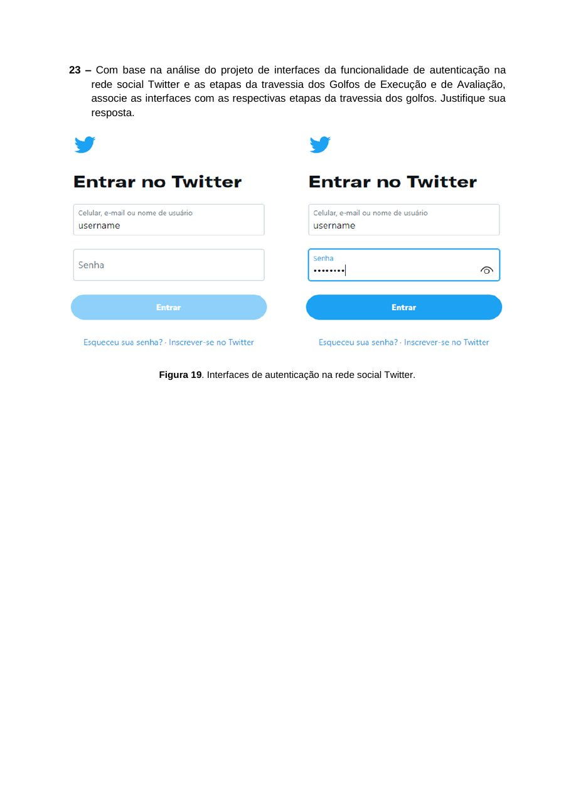
Resposta-modelo
O que a figura mostra: duas telas "Entrar no Twitter". Esquerda: campo "Celular, e-mail ou nome de usuário" preenchido com "username"; campo "Senha" vazio; botão "Entrar" em azul claro, apagado (desabilitado). Direita: mesmo usuário; campo "Senha" em foco (borda azul, rótulo "Senha" pequeno no topo), com a senha mascarada (pontos) e um ícone de olho; botão "Entrar" em azul forte (habilitado). Embaixo das duas: "Esqueceu sua senha? · Inscrever-se no Twitter".
Travessia: Objetivo: entrar na minha conta do Twitter. Intenção imediata: autenticar com meu usuário e senha. Plano de ações mentais: #1 informar o usuário; #2 informar a senha; #3 confirmar a entrada.
Tela da esquerda — execução da ação #1 e avaliação dessa resposta:
- Execução: ação física #1.1 digitar "username" no primeiro campo.
- Percepção: o nome aparece no campo; o botão "Entrar" continua em azul claro.
- Interpretação: o usuário foi informado, mas o botão apagado indica que ainda não posso entrar: falta a senha.
- Avaliação: estou caminhando para o objetivo, mas ainda não o atingi; preciso executar a próxima ação (#2).
Tela da direita — execução da ação #2 e avaliação dessa resposta:
- Execução: ação física #2.1 clicar no campo "Senha"; #2.2 digitar a senha.
- Percepção: o campo ganhou borda azul, a senha aparece como pontos, surgiu o ícone de olho e o botão "Entrar" ficou azul forte.
- Interpretação: a senha foi registrada (oculta por segurança; o olho permite exibi-la) e o sistema agora permite entrar.
- Avaliação: estou próximo do objetivo; posso executar a ação #3 (clicar em "Entrar"). A avaliação final ("alcancei meu objetivo") só ocorreria na tela seguinte, depois do clique, que não aparece na figura.
Justificativa: a diferença entre as duas telas é exatamente o feedback que o sistema dá à execução de cada ação mental: a mudança do botão "Entrar" de apagado para ativo é o que permite ao usuário perceber, interpretar e avaliar que avançou. Isso encurta o golfo de avaliação.
Variação provável: "Na Figura 19, identifique onde o design reduz a distância articulatória no golfo de avaliação" (resposta: o botão que muda de apagado para ativo e a borda azul no campo em foco tornam a forma da resposta fácil de interpretar) ou "qual estágio da travessia o botão desabilitado apoia" (percepção/interpretação: o usuário entende que ainda falta uma ação).
Questão 24 da lista oficial — Analise o projeto de interfaces do Microsoft Word (Figura 20) e aponte a metáfora de interface predominante. Justifique.
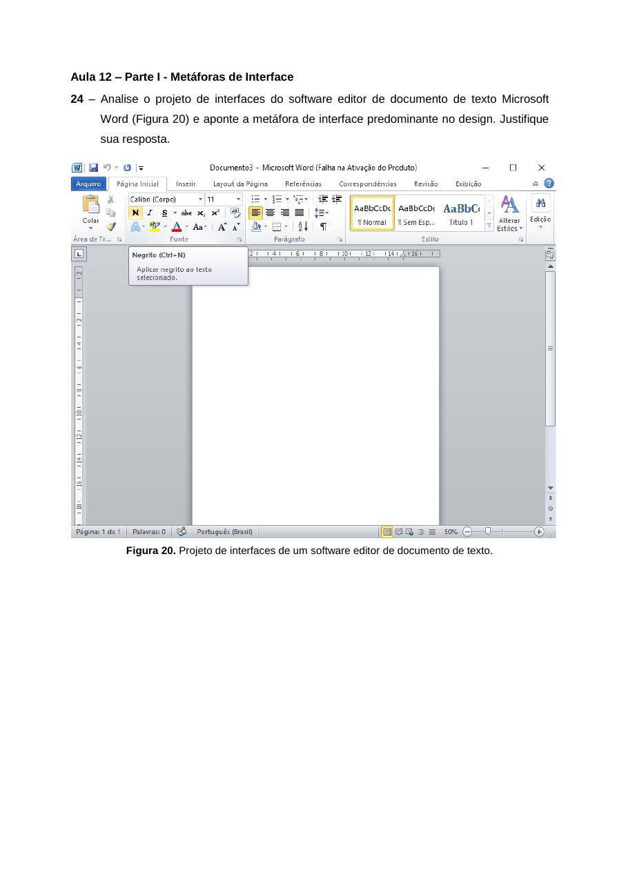
Resposta-modelo
Metáfora predominante: Conversação (Engenharia Semiótica).
Justificativa: a interface do Word é o meio linguístico pelo qual o designer se comunica com o usuário. Na figura, a aba "Página Inicial" é organizada em grupos com rótulos textuais ("Área de Transferência", "Fonte", "Parágrafo", "Estilo", "Edição") e ícones (Colar, N, I, S, alinhamentos, estilos "Normal", "Sem Espaçamento", "Título 1"). Cada signo comunica ao usuário uma ação possível. A própria figura mostra essa conversa explicitamente: ao passar o mouse sobre o botão "N", aparece a dica "Negrito (Ctrl+N) — Aplicar negrito ao texto selecionado", ou seja, o designer está "dizendo" ao usuário o que aquele signo faz.
- Representação (signo): botão com a letra "N" em negrito.
- Mensagem (significado): aplicar negrito ao texto selecionado (atalho Ctrl+N).
- Interpretante: "se eu selecionar um trecho e clicar no N, esse trecho ficará em negrito".
Também existem elementos de Mundo Real (a folha branca centralizada e a régua imitam o papel), mas a forma de usar as funções é ler e interpretar signos e rótulos; por isso a predominante é a Conversação. Isso coincide com o slide do professor, que usa o próprio Word (salvar, desfazer, refazer) como exemplo de metáfora da Conversação.
Variação provável: "No Word, aponte um signo, a mensagem do designer e o interpretante do usuário" (formato da atividade: Cenário, Tipo + Justificativa, Representação, Significado, Interpretante) — por exemplo, o ícone de disquete (salvar) ou a seta curva (desfazer).
Questão 25 da lista oficial — Analise a interface principal do WhatsApp (Figura 21) e aponte a metáfora de interface predominante. Justifique.
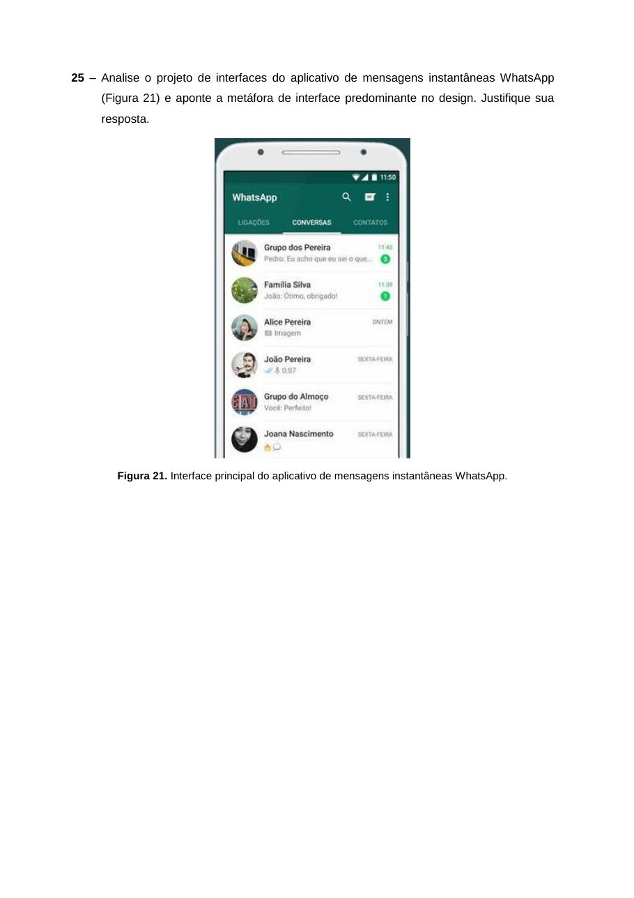
Resposta-modelo
O que a figura mostra: barra verde com "WhatsApp" e os ícones de lupa, de nova mensagem e de três pontos; abas "LIGAÇÕES", "CONVERSAS" (selecionada) e "CONTATOS"; lista de conversas (Grupo dos Pereira, Família Silva, Alice Pereira, João Pereira, Grupo do Almoço, Joana Nascimento), cada uma com foto, nome, prévia da última mensagem, horário ou dia ("11:45", "ONTEM", "SEXTA-FEIRA") e, em algumas, um círculo verde com o número de mensagens não lidas (3, 1). Há ícones dentro das prévias: câmera + "Imagem", tiques azuis + microfone + "0:07".
Metáfora predominante: Conversação (Engenharia Semiótica).
Justificativa: a tela é composta de signos pelos quais o designer comunica ao usuário o estado das conversas e as ações possíveis: a lupa comunica "buscar"; o ícone de balão comunica "iniciar nova conversa"; os rótulos das abas comunicam onde estão ligações, conversas e contatos; o círculo verde com número comunica "há N mensagens não lidas"; o microfone com "0:07" comunica "mensagem de voz de 7 segundos"; os tiques azuis comunicam "mensagem lida". O usuário interpreta esses signos para decidir o que fazer; ele não age sobre os objetos como se fossem o próprio domínio.
- Representação: círculo verde com o número "3" ao lado de "Grupo dos Pereira".
- Mensagem: existem 3 mensagens não lidas nesse grupo.
- Interpretante: "chegaram 3 mensagens novas no grupo e eu ainda não as li".
Cuidado: não justifique dizendo apenas que "é um app de conversa". A justificativa é a comunicação designer–usuário por signos. Figura com baixa resolução: os ícones da barra superior são legíveis, mas o ícone do meio (nova mensagem) está pequeno; a leitura dele como "nova conversa" segue o padrão do app.
Variação provável: "No Instagram (ou iFood/Nubank), aponte a metáfora predominante e descreva um exemplo com Representação, Mensagem e Interpretante" — ou o inverso, uma interface de arrastar e soltar (Explorador de Arquivos, Trello), cuja resposta é Mundo Real.
Aula 13 — Aspectos de Qualidade da IHC (Parte I): qualidade de uso e usabilidade
Qualidade de uso e critérios de qualidade de uso
As definições abaixo estão na redação dos slides do professor. Elas podem ser reproduzidas na prova.
- Qualidade (ISO 8402): "a totalidade de características de um produto ou serviço, que lhe confere a capacidade de satisfazer as necessidades explícitas e implícitas". Qualidade é um conceito relativo, dinâmico e evolutivo.
- Qualidade de uso: "refere-se à qualidade dos artefatos computacionais que os tornam úteis; agradáveis de usar; fáceis de aprender e de se lembrar; seguros; eficazes e eficientes, na perspectiva dos usuários: o que o usuário entende como e por quê funciona".
- Uso: "interagir com a interface de um sistema interativo para alcançar objetivos em um determinado contexto de uso (situação)".
- Critérios de qualidade de uso: "características do design da interação e do projeto de interfaces que os tornam adequados aos efeitos esperados do uso do sistema". São quatro: Usabilidade, Acessibilidade, Experiência do Usuário e Comunicabilidade. "Para muitas pessoas, qualidade de uso é usabilidade, mas não é só isso."
Linha do tempo (para reconhecer, não para decorar): anos 80, usabilidade como eficácia, eficiência e satisfação; anos 90, os fatores de Nielsen; fim dos anos 90, a Web traz comunicabilidade e findability; anos 2000, acessibilidade, portabilidade e responsividade; a partir de 2010, qualidade "multidimensional".
Usabilidade: as três perspectivas da aula
Definição informal (slide): qualidade exibida pelos sistemas cuja interação e interface são "fáceis de aprender e memorizar; fáceis de manusear e executar; flexíveis; agradáveis; meios eficientes e produtivos para realizar tarefas; meios seguros". A usabilidade "é um conjunto de fatores que qualificam quão bem uma pessoa pode interagir com um sistema interativo". Ela "deve se preocupar com a capacidade cognitiva, perceptiva e motora dos usuários".
- ISO/IEC 25010:2011: "Conjunto de atributos que evidenciam o esforço necessário para utilizar o software, bem como o julgamento individual desse uso, por um conjunto explícito ou implícito de usuários". Subcaracterísticas: inteligibilidade, capacidade de aprendizagem, operacionalidade, proteção contra erros do usuário, estética da interface do usuário e acessibilidade.
- ISO 9241-11:2018: "O grau em que um produto é usado por usuários específicos para atingir objetivos específicos com eficácia, eficiência e satisfação em um contexto de uso específico". Eficácia: "capacidade de os usuários interagirem com o sistema para alcançar seus objetivos corretamente, conforme o esperado" (precisão e completude). Eficiência: "recursos necessários para os usuários interagirem com o sistema e alcançarem seus objetivos (ex.: tempo, mão de obra e materiais envolvidos)". Satisfação: "relacionada à experiência de usar o sistema interativo no contexto de uso para o qual foi projetado" (respostas físicas, cognitivas e emocionais). Outros resultados: acessibilidade, experiência do usuário, prevenção de prejuízos.
- Jakob Nielsen: "Um atributo de qualidade relacionado à facilidade de uso de algo. Mais especificamente, refere-se à rapidez com que os usuários podem aprender a usar alguma coisa, a eficiência deles ao usá-las, o quanto lembram daquilo, seu grau de propensão a erros e o quanto gostam de utilizá-la."
ISO 25010, modelo de qualidade em uso (5 características): eficácia, eficiência, satisfação (utilidade, confiança, prazer, conforto), isenção de risco (riscos econômicos, à saúde e segurança, ambientais) e cobertura de contexto (completude de contexto e flexibilidade).
Os 5 fatores de usabilidade (Nielsen) — redação do professor
- Facilidade de aprendizado: "refere-se ao tempo e esforço necessários para que o usuário aprenda a utilizar o sistema com determinado nível de competência e desempenho". Cuidar dela é equilibrar a complexidade da atividade com o tempo e o esforço para aprender.
- Facilidade de recordação (memorização): "diz respeito ao esforço cognitivo do usuário necessário para lembrar de como interagir com a interface do sistema interativo, conforme aprendido anteriormente". "É especialmente importante quando existem operações ou sistemas com baixa frequência de uso." Pistas ajudam a lembrar.
- Eficiência: "diz respeito ao tempo necessário para conclusão de uma atividade com apoio computacional". "É determinada pela maneira como o usuário interage com a interface." Importa "quando desejamos manter alta a produtividade do usuário, depois de ele ter aprendido a utilizar o sistema".
- Segurança no uso: "se refere ao grau de proteção de um sistema contra condições desfavoráveis ou até mesmo perigosas para os usuários (reduzir riscos de ações indesejadas e possibilidade de recuperação)". Formas: "evitar problemas e auxiliar o usuário a se recuperar de uma situação problema". "Errar faz parte do processo de aprendizado": quem se sente seguro explora mais.
- Satisfação: "está relacionada com uma avaliação subjetiva que expressa o efeito do uso do sistema sobre emoções e sentimentos do usuário".
| Fator | Pergunta-chave | Sinal na interface | Exemplo |
|---|---|---|---|
| Aprendizado | Quanto tempo e esforço para aprender? | Rótulos, ícones conhecidos, dicas | Ícone + nome nos botões do Word |
| Recordação | Consigo lembrar depois de um tempo sem usar? | Elementos fixos, opções visíveis | Mala direta sempre na aba Correspondências |
| Eficiência | Quanto tempo para concluir, já sabendo usar? | Atalhos, poucos passos | Ctrl+C / Ctrl+V; "Pedir de novo" no iFood |
| Segurança no uso | Estou protegido de erros e consigo me recuperar? | Confirmação, desfazer, botão bloqueado | Tela de revisão antes do Pix no Nubank |
| Satisfação | Como me sinto usando? | Visual agradável, sensação de controle | Animações e visual limpo do Nubank |
Trade-off: "Dificilmente um único sistema será muito bom em todos os fatores de usabilidade." É preciso priorizar conforme os usuários. Exemplos do slide: muitas teclas de atalho dão eficiência, mas são difíceis de lembrar para usuários ocasionais; muitos tutoriais facilitam o aprendizado, mas não satisfazem o experiente, que quer eficiência.
Usabilidade x utilidade: "Utilidade: o sistema fornece as funcionalidades que o usuário precisa. Usabilidade: refere-se à facilidade de aprendizado e a satisfação do usuário durante o uso do sistema. Útil: é a junção de usabilidade + utilidade."
Teste-se
1. "O grau em que um produto é usado por usuários específicos para atingir objetivos específicos com eficácia, eficiência e satisfação em um contexto de uso específico." Essa definição de usabilidade é de:
- ISO/IEC 25010:2011
- ISO 9241-11:2018
- Jakob Nielsen
- ISO 8402
Ver resposta
Letra b. Para a 25010, usabilidade é o "conjunto de atributos que evidenciam o esforço necessário para utilizar o software...". Nielsen fala em rapidez para aprender, eficiência, memorização, erros e gosto. A ISO 8402 define qualidade em geral, e não usabilidade.
2. "Esforço cognitivo do usuário necessário para lembrar de como interagir com a interface, conforme aprendido anteriormente." Que fator é esse e quando ele é mais crítico?
- Facilidade de aprendizado; no primeiro uso.
- Eficiência; quando o usuário já domina o sistema.
- Facilidade de recordação; em operações ou sistemas com baixa frequência de uso.
- Satisfação; em sistemas de entretenimento.
Ver resposta
Letra c. Essa é a definição da facilidade de recordação, e o slide diz que ela é "especialmente importante quando existem operações ou sistemas com baixa frequência de uso". O aprendizado mede o esforço para aprender pela primeira vez, e não para lembrar.
3. Antes de concluir um Pix, o Nubank mostra uma tela de revisão com o destinatário e o valor e pede a senha. Qual fator essa decisão prioriza e qual fator ela sacrifica um pouco?
- Prioriza segurança no uso; sacrifica um pouco a eficiência.
- Prioriza eficiência; sacrifica a segurança no uso.
- Prioriza facilidade de aprendizado; sacrifica a satisfação.
- Prioriza utilidade; sacrifica a facilidade de recordação.
Ver resposta
Letra a. A revisão serve para "reduzir riscos de ações indesejadas", que é o que define a segurança no uso, mas acrescenta um passo e por isso aumenta o tempo da tarefa (eficiência). É o trade-off da aula. Utilidade não é fator de usabilidade.
4. Sobre um editor com dezenas de atalhos de teclado, qual afirmação está de acordo com a aula?
- Atalhos melhoram todos os fatores de usabilidade ao mesmo tempo.
- Atalhos favorecem principalmente a facilidade de aprendizado de novatos.
- Atalhos são uma questão de utilidade, e não de usabilidade.
- Atalhos aumentam a eficiência de quem já domina o sistema, mas podem dificultar a recordação de usuários ocasionais.
Ver resposta
Letra d. É o exemplo de trade-off do slide. Nenhum sistema é ótimo em todos os fatores, e o designer precisa priorizar.
5. Um app de banco tem visual bonito e é facílimo de usar, mas não permite pagar boletos, que é o que os clientes mais querem. Segundo a aula, o sistema:
- Não tem usabilidade, porque falta facilidade de aprendizado.
- Tem usabilidade, mas não tem utilidade; por isso não é útil (útil = usabilidade + utilidade).
- Tem baixa comunicabilidade, porque não comunica a lógica do design.
- Tem baixa cobertura de contexto, porque não funciona fora do contexto previsto.
Ver resposta
Letra b. "Não importa se a funcionalidade é de fácil uso se não é o que o usuário deseja." O problema está em não oferecer a funcionalidade, e não na facilidade de uso.
6. Qual item NÃO é uma das cinco características do modelo de qualidade em uso da ISO 25010?
- Isenção de risco
- Cobertura de contexto
- Operacionalidade
- Satisfação
Ver resposta
Letra c. As cinco características são eficácia, eficiência, satisfação, isenção de risco e cobertura de contexto. A operacionalidade é subcaracterística de usabilidade no modelo de qualidade de produto.
7. No iFood, o usuário conclui o pedido exatamente como queria, mas leva 15 minutos e passa por várias telas. Pela ISO 9241-11, o uso foi:
- Eficiente, mas pouco eficaz.
- Pouco eficaz e pouco eficiente.
- Satisfatório, porque o objetivo foi alcançado.
- Eficaz, mas pouco eficiente.
Ver resposta
Letra d. Eficácia é alcançar o objetivo "corretamente, conforme o esperado", e o pedido saiu certo. Eficiência trata dos "recursos necessários (tempo...)", que foram altos. A satisfação é uma resposta física, cognitiva e emocional e não decorre automaticamente de alcançar o objetivo.
8. Defina os cinco fatores de usabilidade de Nielsen e dê, para cada um, um elemento de interface que o favoreça.
Resposta-modelo
- Facilidade de aprendizado: tempo e esforço necessários para que o usuário aprenda a utilizar o sistema com determinado nível de competência e desempenho. Elemento: botão com ícone e rótulo ("Colar" no Word).
- Facilidade de recordação: esforço cognitivo necessário para lembrar como interagir com a interface, conforme aprendido anteriormente. É importante em operações de baixa frequência. Elemento: comandos sempre visíveis no mesmo lugar (abas fixas).
- Eficiência: tempo necessário para concluir uma atividade com apoio computacional, importante para manter a produtividade de quem já aprendeu. Elemento: atalhos de teclado.
- Segurança no uso: grau de proteção contra condições desfavoráveis ou perigosas, reduzindo ações indesejadas e permitindo recuperação. Elemento: botão Desfazer, confirmação antes de excluir.
- Satisfação: avaliação subjetiva que expressa o efeito do uso sobre emoções e sentimentos. Elemento: visual agradável e feedback imediato.
9. "Dificilmente um único sistema será muito bom em todos os fatores de usabilidade." Explique a afirmação com um exemplo de conflito entre dois fatores e diga como o designer deve decidir o que priorizar.
Resposta-modelo
Fatores podem competir entre si. Eficiência x recordação: muitos atalhos de teclado deixam o usuário experiente mais rápido, mas são difíceis de lembrar para o usuário ocasional. Aprendizado x eficiência/satisfação: muitas explicações e tutoriais facilitam o aprendizado, mas atrapalham o experiente, que quer rapidez. Segurança x eficiência: uma tela de confirmação evita erros, mas adiciona um passo.
A prioridade deve ser definida a partir do conhecimento das necessidades dos usuários, de suas atividades e do contexto de uso. Exemplo: um app bancário prioriza segurança no uso; um editor usado o dia todo por profissionais prioriza eficiência; um caixa eletrônico usado raramente prioriza aprendizado e recordação.
10. (Variação da Questão 28) Associe os Princípios de Design de Norman aos fatores de usabilidade e justifique: Restrições, Feedback, Significantes. Fatores: ( ) Segurança no uso ( ) Facilidade de recordação ( ) Satisfação/UX.
Resposta-modelo
- Restrições → Segurança no uso: restrições "limitam a interação do usuário, prevenindo erros" (Aula 9). Prevenir erros é a forma de "evitar problemas" da segurança no uso. Ex.: o botão "Entrar" fica desabilitado enquanto a senha está em branco.
- Significantes → Facilidade de recordação: significantes "apoiam o usuário a localizar as ações na interface" e funcionam como as pistas que ajudam a lembrar o que foi aprendido. Ex.: o ícone de lixeira indica onde excluir, sem que o usuário precise decorar.
- Feedback → Satisfação/UX: o feedback "comunica as respostas às ações do usuário e o estado do sistema". Saber o que aconteceu dá sensação de controle e confiança e evita frustração, o que afeta emoções e sentimentos.
Aula 14 — Aspectos de Qualidade da IHC (Parte II): acessibilidade, experiência do usuário e comunicabilidade
Acessibilidade
Durante a interação, o usuário emprega "sua habilidade motora para agir sobre os dispositivos de entrada; seus sentidos (visão, audição e tato) e capacidade de percepção para identificar as respostas do sistema emitidas pelos dispositivos de saída; sua capacidade cognitiva, de interpretação e de raciocínio para compreender as respostas do sistema e planejar os próximos passos da interação".
- Definição informal: "qualidade exibida pelos sistemas cuja interface e interação não discriminam usuários-alvo com necessidades especiais permanentes ou temporárias". Oferecer meios para que o usuário "acesse o sistema e interaja com ele, sem que a interface imponha obstáculos".
- "A acessibilidade atribui igual importância a pessoas com e sem limitações na capacidade de movimento, de percepção, de cognição e de aprendizado." Cuidar dela "significa permitir que mais pessoas possam perceber, compreender e utilizar o sistema".
- "Isso não significa que o sistema deve ser desenvolvido para atender exclusivamente a uma classe especial de usuários. A intenção é incluir pessoas com limitações ou deficiências no grupo de usuários-alvo."
- As deficiências podem ser temporárias (causadas por acidentes) ou permanentes. A idade (crianças, terceira idade) também influencia as capacidades.
- Problemas ilustrados nos slides: contraste ruim, botões pequenos, descrição ausente.
- Lei 13.146/2015 (LBI): a acessibilidade é obrigatória nos sites de empresas com sede ou representação comercial no país e nos de órgãos de governo.
Experiência do Usuário (UX)
- "Com a disseminação dos sistemas computacionais interativos em ambientes diferentes do trabalho, a usabilidade passou a englobar também as emoções e os sentimentos dos usuários. [...] essa qualidade relacionada aos sentimentos e emoções dos usuários é denominada de experiência do usuário."
- McCarthy e Wright: "termo usado para referir à qualidade da interação de pessoas com produtos (em geral, de tecnologia) e outras pessoas e às consequências emocionais e cognitivas que decorrem desta interação". "Experiência é a vida sentida."
- ISO 9241-11:2018: "as percepções e respostas de uma pessoa que resultam do uso ou da antecipação do uso de um produto, sistema ou serviço".
- Aspectos investigados: satisfação, prazer, diversão, entretenimento, interesse, atração, motivação, estética, criatividade, provocação, surpresa, desafio, cansaço, frustração e ofensa.
- Hassenzahl: dimensão pragmática (metas do fazer: fazer uma ligação, achar um livro na loja) e hedônica (metas do ser: ser competente, ser relacionado aos outros, ser especial).
- UX é abrangente (pontos de contato: marketing, loja, manual, instalação, interface de uso, suporte técnico, descarte) e longitudinal (antecipação do uso, primeiro uso, uso esporádico, uso continuado; "UX se forma com as múltiplas exposições do usuário ao produto").
- Forlizzi e Battarbee: interações fluentes (automáticas, como checar notificações), cognitivas (resultam em conhecimento ou em confusão e erro, como descobrir um app desconhecido) e expressivas (formam relacionamento com o produto, como personalizar o plano de fundo).
- Cinco propriedades da experiência: subjetiva, holística, situada, dinâmica e positiva.
Usabilidade x UX (slide 76): "Usabilidade: característica intrínseca do produto – qualidade que o designer especificou e embutiu no produto durante o projeto [...]. Experiência de usuário (UX): está relacionada com a perspectiva individual, que é afetada pela usabilidade, mas que também se produz em função das expectativas, vivências anteriores, condições individuais e interação com outros produtos e indivíduos."
Comunicabilidade
- Definição informal: "qualidade exibida pelos sistemas cuja interface e interação: expressam bem a intenção e a lógica de design dos produtores (designers) do sistema; permitem ao usuário expressar bem a sua intenção de uso; respondem às expressões do usuário com comunicações úteis e adequadas ao contexto de uso".
- "A comunicabilidade diz respeito à capacidade da interface de comunicar ao usuário a lógica do design: as intenções do designer e os princípios de interação resultantes das decisões tomadas durante todo o processo de design."
- Lógica do design = "a quem se destina o sistema; para que ele serve; as vantagens de utilizá-lo; como ele funciona e os princípios gerais de interação com o sistema".
- "Compreender a lógica de design não implica adquirir conhecimentos técnicos [...], mas sim obter uma compreensão pragmática e utilitária das relações de causa e efeito que determinam seu comportamento." Quem entende essa lógica tem mais chance de fazer "um uso criativo, eficiente e produtivo".
- A comunicabilidade melhora a qualidade da entrada de dados do usuário e a interpretação da saída do sistema.
- "A analogia é um recurso de comunicação utilizado para facilitar e aumentar a comunicabilidade": o usuário formula hipóteses a partir de experiências com artefatos semelhantes.
- Exemplos dos slides: apagar um torrent remove só da lista ou também do disco? Uma barra de cópia que "não informa o usuário sobre o status atual da operação (% concluído)" tem baixa comunicabilidade. No Word 2007, a dica mostra o significado do comando, o atalho, uma estratégia de uso e como obter ajuda; no Word XP mostrava só o nome. A versão 2007 tem mais comunicabilidade.
Relação entre os critérios: "Qualidade de uso envolve critérios distintos, porém interligados." "Quando um usuário consegue compreender como o sistema funciona porque o designer se expressou adequadamente através da interface (comunicabilidade), torna-se mais fácil aprender a utilizá-lo (usabilidade)." O designer deve remover as barreiras (acessibilidade), tornar o uso fácil (usabilidade) e comunicar suas intenções (comunicabilidade). Como nem sempre é possível satisfazer todos, "é importante definir quais são os critérios prioritários", com base no conhecimento sobre usuários, atividades, objetivos e contextos de uso.
Tabela comparativa dos quatro critérios de qualidade de uso
| Critério | Foco (pergunta-chave) | Definição curta (professor) | Situação típica | Não confundir com |
|---|---|---|---|---|
| Usabilidade | É fácil e eficiente de usar? | Conjunto de fatores que qualificam quão bem uma pessoa pode interagir com um sistema; característica intrínseca do produto | Atalhos, desfazer, rótulos claros | UX: usabilidade está no produto; UX está na pessoa |
| Acessibilidade | Alguém fica de fora? | Interface e interação não discriminam usuários-alvo com necessidades especiais permanentes ou temporárias | Contraste, tamanho de botão, texto alternativo, leitor de tela | Usabilidade: um sistema pode ser fácil para a maioria e ainda bloquear um cego |
| Experiência do Usuário | Como a pessoa se sente? | Percepções e respostas que resultam do uso ou da antecipação do uso; emoções e sentimentos | Encantamento, diversão, confiança, frustração | Satisfação (fator de usabilidade): UX é mais ampla, abrangente e longitudinal |
| Comunicabilidade | O usuário entende a intenção e a lógica do designer? | Capacidade da interface de comunicar ao usuário a lógica do design | Dica explicando o comando; aviso do que a ação vai causar; status da operação | Facilidade de aprendizado: a comunicabilidade é a causa (o designer se expressou), o aprendizado é a consequência |
Teste-se
1. Qual afirmação sobre acessibilidade está de acordo com a aula?
- Só diz respeito a deficiências permanentes, como a cegueira congênita.
- Busca incluir pessoas com limitações no grupo de usuários-alvo, sem desenvolver o sistema exclusivamente para elas.
- É um dos cinco fatores de usabilidade de Nielsen.
- Pela LBI, só é obrigatória em sites de órgãos de governo.
Ver resposta
Letra b. Está no slide 9, quase com essas palavras. A letra a erra porque as deficiências podem ser temporárias e a idade também conta. A letra c erra porque a acessibilidade não está entre os fatores de Nielsen. A letra d erra porque a LBI vale também para empresas com sede ou representação no país.
2. "Característica intrínseca do produto – qualidade que o designer especificou e embutiu no produto durante o projeto." O slide usa essa frase para definir:
- Experiência do usuário
- Comunicabilidade
- Usabilidade
- Acessibilidade
Ver resposta
Letra c. No slide 76, usabilidade é intrínseca ao produto. A UX é a perspectiva individual, afetada pela usabilidade e também por expectativas, vivências anteriores e condições individuais.
3. Ao passar o mouse sobre "Pincel de Formatação", o Word mostra o que o comando faz, seu atalho, como aplicá-lo em vários lugares e onde obter ajuda. Qual critério de qualidade de uso isso evidencia principalmente, e por que não outro?
- Acessibilidade, porque o texto da dica pode ser lido por leitor de tela.
- Comunicabilidade, porque a interface comunica o significado do comando e a estratégia de uso, ou seja, a lógica do design; o aprendizado mais fácil é consequência disso.
- Experiência do usuário, porque a dica gera prazer.
- Eficiência, porque a dica reduz o número de cliques.
Ver resposta
Letra b. É o exemplo Word XP x Word 2007 do slide. A dica não remove nenhuma barreira de acesso (a), não tem foco em emoção (c) e não reduz cliques (d). A eficiência vem do atalho, não da dica.
4. Ao enviar um arquivo grande, aparece só "Enviando..." por vários minutos, sem porcentagem. Pela classificação do professor, o problema afeta principalmente:
- A acessibilidade
- A utilidade
- A eficácia
- A comunicabilidade
Ver resposta
Letra d. O slide "Baixa Comunicabilidade" usa exatamente este caso: "O sistema não informa o usuário sobre o status atual da operação (% concluído)". O envio funciona, então não é falta de utilidade nem de eficácia.
5. No modelo de Hassenzahl, compartilhar a "Retrospectiva" do Spotify para mostrar aos amigos o próprio gosto musical atende a metas:
- Pragmáticas (do fazer)
- Fluentes
- Cognitivas
- Hedônicas (do ser)
Ver resposta
Letra d. Ser relacionado aos outros e ser especial são metas do ser. "Fluente" e "cognitiva" são tipos de interação de Forlizzi e Battarbee, e não dimensões de Hassenzahl.
6. Sara personaliza o papel de parede de cada conversa no WhatsApp. Segundo Forlizzi e Battarbee, é uma interação:
- Expressiva
- Fluente
- Cognitiva
- Pragmática
Ver resposta
Letra a. Interações expressivas "auxiliam o usuário a formar um relacionamento com o produto (e.g., personalizar o plano de fundo do celular)". Fluente é automática (checar notificações); cognitiva é descobrir como usar; pragmática é uma dimensão de Hassenzahl.
7. A experiência de alguém com o iFood é influenciada pela propaganda, pela instalação, pelo app e pelo atendimento no chat quando o pedido atrasou. Essa característica da UX se chama:
- Abrangência (pontos de contato)
- Longitudinalidade (momentos)
- Satisfação
- Cobertura de contexto
Ver resposta
Letra a. A abrangência diz respeito aos pontos de contato (marketing, loja, manual, instalação, interface, suporte, descarte). A longitudinalidade diz respeito ao tempo (antecipação, primeiro uso, uso esporádico, uso continuado). Cobertura de contexto é um conceito da ISO 25010.
8. Diferencie usabilidade, experiência do usuário, acessibilidade e comunicabilidade. Para cada critério, dê uma situação em que ele falha mesmo que os outros estejam bem atendidos.
Resposta-modelo
- Usabilidade: conjunto de fatores (aprendizado, recordação, eficiência, segurança no uso, satisfação) que qualificam quão bem uma pessoa pode interagir com o sistema; é uma característica intrínseca do produto. Falha: um app bonito, acessível e que explica tudo, mas exige 12 telas para uma transferência (baixa eficiência).
- Experiência do usuário: percepções e respostas que resultam do uso ou da antecipação do uso, ou seja, emoções e sentimentos; é a perspectiva individual, afetada também por expectativas e vivências. Falha: um app eficiente, mas que envia notificações insistentes e gera irritação.
- Acessibilidade: a interface e a interação não discriminam usuários-alvo com necessidades especiais permanentes ou temporárias, nem impõem obstáculos. Falha: um site fácil e agradável para a maioria, mas com botões sem descrição, que o leitor de tela não consegue ler.
- Comunicabilidade: capacidade da interface de comunicar ao usuário a lógica do design (para quem é, para que serve, como funciona, relações de causa e efeito). Falha: um botão "Remover" que não diz se apaga o arquivo só do aparelho ou também da nuvem.
Os critérios são distintos, mas interligados: uma boa comunicabilidade torna mais fácil aprender a usar (usabilidade).
9. Defina comunicabilidade e explique o que é a "lógica do design". Por que o designer precisa comunicá-la ao usuário?
Resposta-modelo
Comunicabilidade é a capacidade da interface de comunicar ao usuário a lógica do design: as intenções do designer e os princípios de interação resultantes das decisões tomadas durante o processo de design. Um sistema com boa comunicabilidade expressa bem a intenção do designer, permite ao usuário expressar a sua intenção de uso e responde com comunicações úteis e adequadas ao contexto.
Lógica do design: a quem se destina o sistema, para que serve, quais as vantagens de utilizá-lo, como funciona e quais os princípios gerais de interação. O usuário não precisa de conhecimento técnico, e sim de uma compreensão prática das relações de causa e efeito.
Por quê: se o usuário entende a lógica do design, tem mais chance de fazer um uso criativo, eficiente e produtivo, de inserir dados melhores e de interpretar corretamente a saída do sistema. Exemplo: no caso do torrent, sem essa comunicação o usuário não sabe se "apagar" remove só da lista ou também o arquivo do disco.
10. (Variação da Questão 29) Para cada situação, diga qual critério de qualidade de uso ou fator de usabilidade está em jogo e por que não é outro: (a) o Gmail oferece "Desfazer envio" por alguns segundos; (b) o app do banco tem fonte que não aumenta e textos cinza-claro sobre fundo branco; (c) ao excluir uma mensagem, o WhatsApp pergunta "Apagar para mim" ou "Apagar para todos".
Resposta-modelo
- (a) Segurança no uso: permite "se recuperar de uma situação problema" (reduzir riscos de ações indesejadas e possibilitar a recuperação). Não é eficiência, porque não encurta a tarefa; também não é comunicabilidade, porque o foco está em recuperar o erro, e não em explicar a lógica.
- (b) Acessibilidade: o contraste ruim e a fonte fixa impõem obstáculos a quem tem baixa visão ou a idosos, ou seja, a interface discrimina usuários-alvo. Não se trata só de satisfação, porque essas pessoas não conseguem perceber o conteúdo.
- (c) Comunicabilidade: a interface comunica as consequências de cada opção (a relação de causa e efeito) e permite ao usuário expressar exatamente sua intenção. Contribui também para a segurança no uso, mas o que a define é comunicar a lógica da ação.
Aulas 6 a 8 — Processos de Design, Pesquisa com Usuários e Requisitos de IHC (fora da lista de exercícios, mas na ementa da prova — revisão rápida)
Conceitos-chave
- Design: "processo que transforma uma necessidade (demanda) em um produto ou solução: artefato". Em IHC, é uma intervenção na situação atual para melhorá-la. O cliente contrata ou compra; o usuário usa. Nem sempre são a mesma pessoa.
- Design Centrado no Humano: "processo de observar pessoas realizando tarefas, gerar idéias, prototipar e testar a solução". Princípios: foco precoce nos usuários e tarefas, medições empíricas e design iterativo.
- Processo: análise da situação atual (gera as metas de design, que podem ser os critérios de qualidade de uso) → síntese da intervenção (design da interação e prototipação) → avaliação da intervenção (verificar se as metas foram atendidas).
- Avaliação formativa: ocorre durante a concepção (ex.: inspeção de telas). Somativa: ocorre antes da introdução (testes com usuários) ou depois dela (apropriação do sistema).
- Racionalismo técnico (problemas e soluções conhecidos, métodos definidos a priori) x reflexão em ação (problema único; o designer aprende enquanto concebe, "conversando" com protótipos e desenhos).
- DCH e métodos ágeis: a equipe de UX trabalha um sprint à frente do desenvolvimento e valida o que foi implementado.
- Pesquisa com usuários: as dimensões são atitudinal (o que dizem) x comportamental (o que fazem) (complemento: NN/g, fonte citada no slide; essa parte do slide é figura), qualitativo x quantitativo e contexto de uso do produto.
- Métodos de coleta: entrevista (profunda, alto custo), questionário (rápido, barato, superficial), grupo de foco (3 a 10 pessoas, com moderador), classificação de cartões (organizar menus e navegação), estudo de campo (observar no ambiente real) e investigação contextual (modelo mestre-aprendiz: o usuário ensina o trabalho, o pesquisador aprende).
- Ética: consentimento livre e esclarecido (termo), sigilo, anonimato, direito de desistir. Erro comum: nunca se justifica registrar o nome dos entrevistados.
Teste-se
1. Quais são as três atividades do processo de Design Centrado no Humano apresentado na aula?
- Observação, prototipação e implantação.
- Requisitos, implementação e testes de unidade.
- Análise da situação atual, síntese da intervenção e avaliação da intervenção.
- Descobrir, explorar e ouvir.
Ver resposta
Letra c. É o processo dos slides. A letra a mistura o ciclo observar-prototipar-testar com "implantação"; a b descreve engenharia de software; a d lista fases de atividades de pesquisa com usuários.
2. Durante o projeto das telas, a equipe faz uma inspeção para prever problemas antes de implementar. Essa avaliação é:
- Formativa
- Somativa, antes da introdução
- Somativa, após a introdução
- Investigação contextual
Ver resposta
Letra a. A avaliação formativa ocorre durante a concepção, por exemplo com inspeção de telas. A somativa usa testes com usuários antes da introdução ou acompanha a apropriação depois dela. Investigação contextual é um método de coleta de dados.
3. Para definir os menus do app da universidade a partir de como os estudantes agrupam as funções (notas, cardápio do RU, biblioteca), o método mais indicado é:
- Grupo de foco
- Questionário com escala Likert
- Investigação contextual
- Classificação de cartões
Ver resposta
Letra d. A classificação de cartões mostra como as pessoas pensam em categorias e é usada principalmente na arquitetura da informação (menus, navegação). Grupo de foco levanta opiniões; Likert mede concordância; investigação contextual estuda o trabalho no próprio ambiente.
Lista oficial resolvida — questões 26 a 29
Questão 26 da lista oficial — Com base na análise do projeto de interfaces do Microsoft Word (Figura 22), aponte os critérios de qualidade de uso e/ou fatores de usabilidade que foram priorizados no design. Justifique sua resposta.
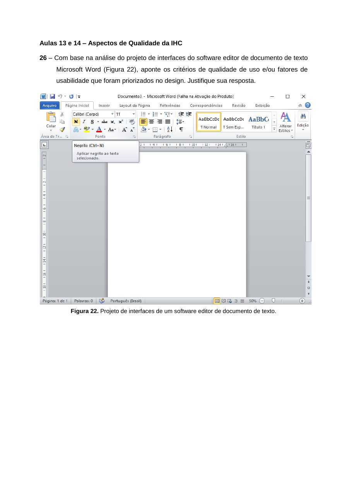
Resposta-modelo
O que aparece na figura: barra de título "Documento3 - Microsoft Word"; barra de acesso rápido (Salvar, Desfazer, Refazer); abas Arquivo, Página Inicial (selecionada), Inserir, Layout da Página, Referências, Correspondências, Revisão e Exibição; grupos Área de Transferência (Colar), Fonte, Parágrafo, Estilo (Normal, Sem Espaçamento, Título 1, Alterar Estilos) e Edição; dica aberta sobre o botão N: "Negrito (Ctrl+N) — Aplicar negrito ao texto selecionado"; régua; barra de status com "Página: 1 de 1", "Palavras: 0", "Português (Brasil)", modos de exibição e zoom de 50%.
- Comunicabilidade — elementos: a dica "Negrito (Ctrl+N) — Aplicar negrito ao texto selecionado". Justificativa: a interface comunica ao usuário o significado do comando, seu efeito e o atalho, ou seja, a lógica do design (como funciona e as relações de causa e efeito). É o caso Word XP x Word 2007 da Aula 14: a versão que explica o comando tem mais comunicabilidade.
- Usabilidade — facilidade de aprendizado — elementos: comandos agrupados por abas e grupos nomeados (Fonte, Parágrafo, Estilo), botões com ícone conhecido e rótulo ("Colar", "Alterar Estilos"). Justificativa: reduz o tempo e o esforço para aprender, porque o novato encontra as funções explorando a faixa de opções, sem treinamento.
- Usabilidade — facilidade de recordação — elementos: comandos sempre visíveis, na mesma aba e no mesmo grupo. Justificativa: reduz o esforço cognitivo para lembrar como interagir; quem usa uma função raramente a reencontra pelas pistas visuais, sem decorar caminhos.
- Usabilidade — eficiência — elementos: atalho mostrado na dica (Ctrl+N), barra de acesso rápido com Salvar, Desfazer e Refazer, e galeria de estilos aplicáveis com um clique. Justificativa: reduz o tempo para concluir as tarefas de quem já sabe usar.
- Usabilidade — segurança no uso — elementos: botões Desfazer e Refazer sempre visíveis na barra de acesso rápido. Justificativa: permitem que o usuário se recupere de uma ação indesejada, e por isso ele se sente seguro para explorar.
- Usabilidade — eficácia, com apoio da comunicabilidade — elementos: barra de status ("Página: 1 de 1", "Palavras: 0", idioma "Português (Brasil)"). Justificativa: informa o estado do documento, para que o usuário confira se atingiu o objetivo (por exemplo, um limite de palavras).
Formato: critério/fator → elementos de interface visíveis → como contribuem para o usuário atingir o objetivo. Basta citar dois ou três itens bem justificados. O destaque desta figura é a dica aberta, que é o exemplo de comunicabilidade da aula.
Legibilidade: os itens acima estão legíveis na figura. Os ícones pequenos da barra de status (modos de exibição) aparecem em baixa resolução.
Variação provável: "Com base na Figura 22, compare a dica de comando do Word com a de uma versão que mostra apenas o nome do comando e explique qual critério de qualidade de uso foi priorizado" (resposta: comunicabilidade, que facilita o aprendizado), ou "aponte um fator de usabilidade e o princípio de Norman associado" (ex.: dica = significante → aprendizado).
Questão 27 da lista oficial — Com base na análise do aplicativo WhatsApp (Figura 23), aponte os critérios de qualidade de uso e/ou fatores de usabilidade que foram priorizados no design. Justifique sua resposta.
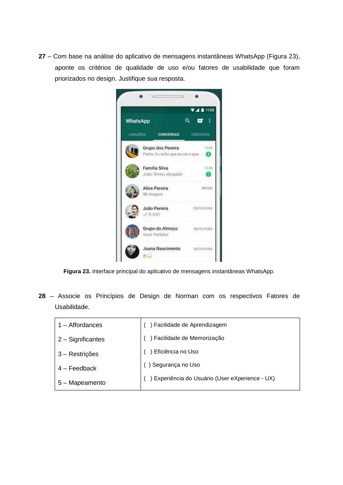
Resposta-modelo
O que aparece na figura: cabeçalho "WhatsApp" com lupa (buscar), ícone de nova mensagem e menu de três pontos; abas LIGAÇÕES, CONVERSAS (selecionada e sublinhada) e CONTATOS; lista de conversas com foto, nome, prévia da última mensagem e horário ou dia ("11:45", "ONTEM", "SEXTA-FEIRA"); contadores verdes de mensagens não lidas ("3" em Grupo dos Pereira, "1" em Família Silva) e horário em verde nessas conversas; prévias com o autor ("Pedro: Eu acho que eu sei o que...", "Você: Perfeito!"); ícone de câmera com "Imagem"; em João Pereira, dois tiques azuis e um microfone com "0:07" (áudio).
- Usabilidade — eficiência — elementos: lista com prévia da última mensagem, contador de não lidas e lupa de busca. Justificativa: o usuário sabe o que chegou e onde está o que importa sem abrir cada conversa, o que reduz o tempo para concluir a atividade.
- Usabilidade — facilidade de aprendizado — elementos: abas com rótulos em texto (Ligações, Conversas, Contatos), fotos e nomes dos contatos e ícones conhecidos (lupa, câmera, microfone). Justificativa: a organização segue a analogia de uma agenda e de uma caixa de mensagens; o usuário novo entende onde está cada função sem instrução.
- Usabilidade — facilidade de recordação — elementos: estrutura fixa de abas e lista ordenada pela conversa mais recente. Justificativa: mesmo quem fica dias sem usar lembra onde estão as coisas, pois os elementos são sempre os mesmos e na mesma posição.
- Comunicabilidade — elementos: tiques azuis (mensagem lida), contador de não lidas, "Imagem" com ícone de câmera e duração do áudio "0:07". Justificativa: a interface comunica o estado de cada conversa e a lógica do sistema (o que foi recebido, o que foi lido, o tipo de conteúdo), com relações claras de causa e efeito.
- Experiência do usuário — elementos: fotos dos contatos, emojis na prévia (Joana Nascimento) e nomes de grupos familiares e de amigos. Justificativa: a interface favorece a dimensão hedônica ("ser relacionado aos outros") e o vínculo emocional com as pessoas, indo além da tarefa de trocar mensagens.
Legibilidade: na figura de baixa resolução, a cor dos tiques de João Pereira parece azul, mas não é nítida, e o emoji da prévia de Joana não é identificável com certeza. O restante está legível.
Variação provável: "Aponte os princípios de design de Norman seguidos na interface do WhatsApp e relacione-os aos fatores de usabilidade" (Atividade 4 da Aula 13). Exemplo de resposta: feedback (tiques e contador) → eficiência ou UX; significantes (ícones de lupa, câmera e microfone) → aprendizado e recordação.
Questão 28 da lista oficial — Associe os Princípios de Design de Norman com os respectivos Fatores de Usabilidade. 1 – Affordances; 2 – Significantes; 3 – Restrições; 4 – Feedback; 5 – Mapeamento. ( ) Facilidade de Aprendizagem ( ) Facilidade de Memorização ( ) Eficiência no Uso ( ) Segurança no Uso ( ) Experiência do Usuário (UX)
Resposta-modelo
( 1 ) Facilidade de Aprendizagem ( 2 ) Facilidade de Memorização ( 5 ) Eficiência no Uso ( 3 ) Segurança no Uso ( 4 ) Experiência do Usuário
- 1 Affordances → Facilidade de Aprendizagem: affordances são as "características físicas dos objetos que determinam as possibilidades de ações" e favorecem "a percepção das ações possíveis" (Aula 9). Se o usuário percebe sozinho o que pode fazer, gasta menos tempo e esforço para aprender a usar o sistema.
- 2 Significantes → Facilidade de Memorização: significantes são "metáforas visuais que apoiam o usuário a localizar as ações na interface". Funcionam como as "pistas sobre o que foi esquecido" do slide de recordação: o usuário ocasional não precisa decorar onde está a função.
- 5 Mapeamento → Eficiência no Uso: o mapeamento são os "relacionamentos entre controles e efeitos que permite o usuário prever os resultados de cada ação". Quem prevê o resultado age sem tentativa e erro e conclui a atividade em menos tempo.
- 3 Restrições → Segurança no Uso: restrições "limitam a interação do usuário, prevenindo erros". Prevenir erros é a forma de "evitar problemas" que define a segurança no uso. Ex.: botão desabilitado enquanto a senha está em branco.
- 4 Feedback → Experiência do Usuário: o feedback "comunica as respostas às ações do usuário e o estado do sistema". Saber o que aconteceu gera sensação de controle e confiança e evita frustração, o que afeta emoções e sentimentos, foco da UX.
A lista não traz gabarito. Esta é a associação 1 para 1 mais defensável pelos slides. Como o slide de Mapeamento diz que a relação controle-resultado é "fácil de aprender", trocar Affordance e Mapeamento entre Aprendizagem e Eficiência também é defensável com justificativa. O que conta ponto é ligar a definição do princípio à definição do fator.
Variação provável: a mesma tabela com outros princípios (Discoverability, Modelo Conceitual) ou pedindo um exemplo de interface para cada par. Exemplo: Modelo Conceitual → Facilidade de Aprendizagem, pois fornece "uma explicação simplificada de como algo funciona"; Discoverability → Facilidade de Aprendizagem/Recordação.
Questão 29 da lista oficial — Associe as Heurísticas de Usabilidade de Nielsen com os respectivos Critérios de Qualidade de Uso e/ou Fatores de Usabilidade. 1 – Correspondência entre sistema e mundo real; 2 – Reconhecimento ao invés de memorização; 3 – Visibilidade do estado do sistema; 4 – Prevenção de Erros; 5 – Equilíbrio entre Controle e Liberdade do Usuário. ( ) Experiência do Usuário (UX) ( ) Facilidade de Aprendizagem ( ) Eficiência no Uso ( ) Segurança no Uso ( ) Comunicabilidade
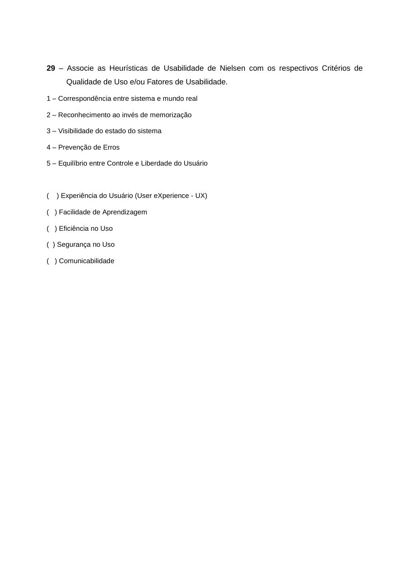
Resposta-modelo
( 5 ) Experiência do Usuário ( 1 ) Facilidade de Aprendizagem ( 2 ) Eficiência no Uso ( 4 ) Segurança no Uso ( 3 ) Comunicabilidade
- 1 Correspondência entre sistema e mundo real → Facilidade de Aprendizagem: usar palavras, ícones e conceitos do mundo do usuário (carrinho de compras, lixeira) permite aproveitar o que ele já sabe e reduz o tempo e o esforço para aprender. É o recurso da analogia, que permite "formular hipóteses [...] tendo como base suas experiências de interação anteriores".
- 2 Reconhecimento ao invés de memorização → Eficiência no Uso: opções, histórico e sugestões visíveis (buscas recentes, autocompletar) fazem o usuário escolher em vez de lembrar e digitar, o que reduz o tempo para concluir a atividade. Observação: se a lista trouxesse "Facilidade de Memorização", ela seria a primeira escolha; como não traz, Eficiência é a opção mais defensável.
- 3 Visibilidade do estado do sistema → Comunicabilidade: a Aula 14 classifica como "Baixa Comunicabilidade" o sistema que "não informa o usuário sobre o status atual da operação (% concluído)". Mostrar o estado comunica o que o sistema está fazendo e as relações de causa e efeito, ou seja, a lógica do design.
- 4 Prevenção de Erros → Segurança no Uso: a heurística elimina condições propensas a erros e pede confirmação antes da ação (Aula 5). Isso é "evitar problemas", forma de alcançar a segurança no uso, que reduz "riscos de ações indesejadas".
- 5 Equilíbrio entre Controle e Liberdade → Experiência do Usuário: poder desfazer, voltar e cancelar dá sensação de controle e evita frustração e ansiedade; o usuário se sente confiante para explorar. Isso afeta as emoções e os sentimentos decorrentes do uso, objeto da UX.
A lista não traz gabarito. Esta associação fecha 1 para 1 com base nos slides, e o professor avalia a justificativa que liga a heurística ao critério ou fator.
Variação provável: "Para cada heurística, dê um exemplo de interface (WhatsApp, iFood, Nubank) e diga qual critério de qualidade de uso ela favorece." Exemplo: barra de progresso no envio de arquivo do Google Drive → visibilidade do estado → comunicabilidade; "Desfazer envio" do Gmail → controle e liberdade → UX/segurança no uso.
Revisão conceitual: definições para a prova
Esta seção junta, em poucas linhas, cada conceito que pode virar pergunta. As definições usam as palavras dos slides do professor (entre aspas quando são literais). Leia um bloco, feche o texto e tente repetir a definição em voz alta. No fim de cada bloco há uma tabela "conceitos que confundem" com a diferença que decide a resposta.
Aula 1 — Interface, interação e linguagem da interface
- Interface (sentido geral): "o que está no limite (fronteira) entre duas fases de um sistema heterogêneo". Existem interfaces entre sistemas computacionais e entre o ser humano e os sistemas computacionais.
- Interface do usuário como "película": como uma película que separa o usuário do sistema computacional; é "o meio pelo qual o usuário pode acionar funções de um sistema computacional e receber as informações que ele precisa".
- Interface de Usuário (UI): "o apoio computacional pelo qual o usuário aciona as funções do sistema e dele recebe informações necessárias para realizar as suas tarefas (objetivos)".
- Interface segundo Moran (1981): "toda porção de um sistema computacional interativo com a qual o usuário mantém contato físico (motor ou perceptivo) ou conceitual (interpretação e avaliação) durante a interação". É o único meio de contato entre usuário e sistema; por isso a maioria dos usuários acredita que o sistema é a interface.
- Contato físico x contato conceitual: físico = agir (motor) e perceber (perceptivo) pelos dispositivos de entrada e saída; conceitual = interpretar o que percebeu e avaliar. A interpretação permite compreender as respostas do sistema e planejar os próximos passos da interação.
- Hardware e software da interface: hardware = dispositivos físicos de interação, de entrada e saída (teclado, mouse, monitor, touch screen, cartão do RU/ônibus); software = programas que apresentam a informação e acionam elementos como botões, ícones, menus, checkboxes e comboboxes. A interface liga elementos mecânicos (mesmo virtuais) ao software e suas funções.
- O usuário define a interface adequada: suas características físicas (perceptivas e motoras), cognitivas, sua formação, conhecimento e experiência influenciam o que é uma interface apropriada (daltônicos podem não distinguir erro e alerta por cor; analfabetos não leem instruções).
- Interação (Aula 1): "um diálogo, um ato de comunicação". Como todo diálogo, depende de uma linguagem.
- Interação x interface: "a interação é algo mais amplo do que a interface, mas ela depende de uma interface para acontecer". A interface "determina os processos de interação possíveis, à medida que determina o que ele pode falar ou fazer, de que maneira e em que ordem". Definir a interação restringe a interface, e vice-versa.
- Complexidade da interface afeta a interação: mais opções na interface → maior tempo de escolha; elementos menores → maior tempo e esforço físico para apontar; símbolos mais inteligíveis → aprendizagem, memorização e eficiência mais fáceis. Interface simples não garante interação simples (exemplo dos controles de TV).
- Linguagem natural x artificial: entre humanos a linguagem (oral ou corporal) é natural; entre usuários e sistemas é artificial e, por isso, "passível de ser projetada (processo de design)".
- Léxico: "símbolos que têm algum significado para a interação". Na lista: "elementos de interface usados para comunicar significados ao usuário". Pergunta-guia: o que este símbolo significa?
- Sintático: "ações válidas no espaço da interação"; "indicam o que é válido a cada momento". Na lista: "as ações possíveis na interface". Pergunta-guia: o que posso fazer aqui, e essa ação é válida agora?
- Semântico: "intenção ou resultado das ações". Na lista: "resultados das ações". Pergunta-guia: o que acontece quando eu faço isso?
- Tudo é projetado: os símbolos (léxico), a validade das ações (sintático) e a semântica da interação são todos projetados; a linguagem entre humanos e computadores é totalmente artificial.
- Design: "processo de projeto que visa criar formas e funções de objetos, produtos e serviços, de modo a torná-los adequados às necessidades de seus usuários e/ou aos efeitos desejados sobre esses".
- Feedback (na atividade da aula): como o sistema dá visibilidade sobre o seu estado em resposta às ações do usuário. Exemplo do slide: ao escolher a cor verde do tênis, as fotos centrais mudam para o modelo verde e a miniatura escolhida ganha um contorno; ao tentar adicionar ao carrinho sem tamanho, aparece mensagem de erro pedindo o tamanho.
Aula 2 — Definições de interação e perspectivas de Kammersgaard
- Contexto de uso: a mesma pessoa usa o mesmo software de forma diferente conforme a situação (Impress em casa, no aeroporto/avião, em sala de aula). Essas diferenças "deveriam ser consideradas no design e avaliação" de um novo sistema.
- Conceito inicial de interação (operação de máquina): restrito à percepção de como uma entidade física (pessoa) interage com outra (máquina); era vista como operação de máquina. Os avanços da ciência cognitiva levaram ao conceito de comunicação com as máquinas.
- Interação segundo Norman (1986): "um processo através do qual o usuário formula uma intenção, planeja suas ações, atua sobre a interface, percebe e interpreta a resposta do sistema e avalia se seu objetivo foi alcançado". É a semente da teoria da ação (Aula 11).
- Outras leituras: a interação usuário–sistema também pode ser vista como "processo de manipulação, comunicação, conversa, troca, influência".
- Interação como comunicação com/por meio da máquina: "o processo de comunicação entre pessoas (incluindo o designer e usuários), mediado por sistemas computacionais".
- "Interação, como linguagem artificial, depende de design" e pode ser concebida pressupondo diferentes relações de comunicação humano–computador: as perspectivas.
- Perspectivas de interação (Kammersgaard, 1988): "quatro diferentes formas de se comunicar com computadores": sistema, parceiro do discurso, ferramenta e mídia. Uma aplicação pode ter mais de uma (a lista pede "a(s) perspectiva(s)").
- Perspectiva de sistema: "o usuário se comporta como uma verdadeira máquina, aprendendo a interagir com o sistema de forma disciplinada e restrita por formatos de entrada padronizados e rígidos". Objetivo: aumentar a eficiência e a transmissão correta de dados, reduzindo tempo de interação e número de erros. Usa elementos que limitam o que o usuário pode fazer e teclas de atalho (para quem tem habilidade no teclado e disposição para aprender comandos). Significado: transmissão de dados. Qualidade: eficiência (tempo de uso e número de erros).
- Perspectiva de parceiro do discurso: "o sistema se comporta como um ser humano durante a interação com o usuário, sendo capaz de raciocinar, fazer inferências, tomar decisões e adquirir informação". Usa linguagem natural; o designer define a quantidade, o conteúdo e a sequência das falas. Significado: conversa usuário–sistema. Qualidade: adequação da interpretação e geração de textos. Exemplos: ChatGPT; diálogo da floricultura do slide.
- Perspectiva de ferramenta: interação como processo de usar o sistema "como instrumento que auxilia o usuário a realizar as suas tarefas"; "aplicar uma ferramenta a algum material e avaliar o resultado durante a realização de uma atividade". O usuário se concentra no trabalho e manipula a ferramenta de forma automática. Sucesso depende do conhecimento do usuário sobre a ferramenta e da destreza para manipulá-la. Significado: manipulação de ferramenta. Qualidade: relevância das funcionalidades e facilidade de uso.
- Perspectiva de mídia: sistema interativo "como uma mídia (meio de comunicação – jornal, televisão, rádio e telefone) através da qual as pessoas se comunicam umas com as outras". Dois níveis: entre usuários, mediada por sistemas; e dos designers para os usuários, mediada pela interface. Significado: comunicação entre usuários e designer–usuário. Qualidade: qualidade da comunicação mediada e entendimento mútuo.
- IHC é multidisciplinar: apoia-se em computação, engenharia, psicologia, artes, sociologia, design, antropologia, linguística, ergonomia e semiótica. Na computação, a área mais próxima é a Engenharia de Requisitos. Requisitos vagos como "o sistema deverá ser amigável" valem tanto quanto "o sistema deverá impedir o acesso de hackers": não dizem nada verificável.
- Affordance (prévia da Aula 3): "características (físicas e/ou simbólicas) de um objeto capazes de revelar aos usuários o que se pode fazer com ele".
Conceitos que confundem — Aulas 1 e 2
| Conceitos | Diferença que decide |
|---|---|
| Interface x interação | Interface = a porção do sistema com que o usuário tem contato (o que se vê e toca). Interação = o processo/diálogo (o que se faz, em que ordem, e a resposta). A interação é mais ampla, mas depende da interface; a interface determina quais interações são possíveis. |
| Léxico x sintático x semântico | Léxico = símbolo e seu significado. Sintático = ação válida/possível naquele momento. Semântico = intenção ou resultado da ação. |
| Contato físico x conceitual (Moran) | Físico = motor (agir) ou perceptivo (ver, ouvir, sentir). Conceitual = interpretação e avaliação do que foi percebido. |
| Interação como operação de máquina x comunicação com a máquina x comunicação por meio da máquina | Operação: pessoa opera máquina (visão inicial). Com a máquina: processo de Norman (intenção → ação → percepção → avaliação). Por meio da máquina: comunicação entre pessoas, incluindo designer e usuário, mediada pelo sistema. |
| Perspectiva de sistema x ferramenta | Sistema: o usuário se adapta à máquina (formatos rígidos), foco em eficiência e menos erros. Ferramenta: o sistema serve à tarefa do usuário, que nem pensa na manipulação; foco em funcionalidades relevantes e facilidade de uso. |
| Perspectiva de mídia x parceiro do discurso | Mídia: comunicação entre pessoas mediada pela tecnologia (o sistema é o meio). Parceiro: conversa entre usuário e sistema (o sistema é o interlocutor que raciocina como humano). |
| Interface simples x interação simples | Poucos botões (interface simples) podem exigir muitos passos em menus (interação complexa). Avalie as duas separadamente. |
Aulas 3 e 4 — Affordances (Gibson, Norman, Gaver, Hartson) e significantes
- Affordance (IHC): "características (físicas e/ou simbólicas) de um objeto capazes de revelar aos usuários o que se pode fazer com ele (possibilidades de ação)". "Affordances definem as ações possíveis." "É uma indicação convincente de como algo funciona incluindo tanto a percepção do usuário quanto sua função real."
- Affordance real (Gibson, 1977/1979): termo da Psicologia; as affordances de um ambiente são "as possibilidades de ações que são oferecidas ao animal, sejam elas para o bem ou para o mal". São relacionamentos (propriedades acionáveis) entre o mundo e um ator; "existem naturalmente, não precisam ser visíveis, conhecidas ou desejáveis". Em IHC: "para o bem" = ações válidas; "para o mal" = ações que induzem a erro.
- Affordance percebida/perceptiva (Norman, 1988): "características (físicas e/ou simbólicas) de um objeto capazes de revelar aos seus usuários as operações e manipulações que eles podem fazer com ele"; "aspecto de design de um objeto que sugere como ele deve ser usado, uma pista visual de sua função e uso". Para Norman, "se uma affordance não pode ser percebida, ela simplesmente não existe". Depende da experiência prévia e de convenções aprendidas; em telas, as affordances são percebidas.
- Gibson x Norman (McGrenere e Ho, 2000): Gibson = possibilidades de ação em relação às capacidades do ator, independentes de experiência e cultura, existência binária, enfatiza utilidade ("para que serve?"). Norman = propriedades percebidas que podem nem existir, dependem de experiência e cultura, podem tornar a ação fácil ou difícil, enfatiza usabilidade ("como devo usar?"). Em IHC se complementam: projetamos utilidade criando affordances e melhoramos a usabilidade projetando a informação que as especifica.
- Significante (Norman, 2013/2021): "indicação (pista) perceptível sobre a affordance"; "a parte perceptível de uma affordance". Affordance responde "o que eu posso fazer?"; significante responde "onde está a ação e como executá-la?". Exemplo: ligar/desligar é a affordance do interruptor; "ON" e "OFF" são os significantes.
- Significante sem affordance e affordance sem significante: a faixa de pedestres é significante (diz onde é seguro atravessar), mas nada impede atravessar fora dela. Affordance sem significante = sua parte perceptível é invisível.
- Falsa affordance: "o ator percebe uma função que não existe". Exemplo: elementos que parecem botões num e-commerce mas não são clicáveis.
- Gaver (1991): "contribuiu com uma estrutura para separar as affordances da informação perceptiva disponível sobre elas". Cruza duas perguntas: existe a affordance? existe informação perceptiva?
- Affordance perceptiva (Gaver): "características perceptivas do próprio objeto indicam quais possibilidades de ações estão disponíveis e são desejáveis" (maçaneta, botão de emergência).
- Affordance oculta/escondida (Gaver): "existe quando a affordance está lá, mas a informação perceptiva que a especifica não está". O usuário depende de experiência e tentativa e erro (passar o mouse em menus suspeitos; interruptor sem indicação de ligado/desligado).
- Falsa affordance (Gaver): "existe quando não há possibilidade de ação, mas há a informação perceptiva que a especifica" (texto sublinhado que não é link).
- Rejeição correta (Gaver): não há affordance e nenhuma informação perceptiva a indica, e de fato não há.
- Hartson (2003): revisou as teorias, propôs projetar em termos de affordances, renomeou categorias e criou duas novas (sensorial e funcional). Quatro categorias: funcional, física, cognitiva, sensorial. O designer começa pela funcional e "posteriormente" pensa nas cognitivas.
- Funcional: "permite que o usuário complete uma atividade e atinja seu objetivo"; característica de design que auxilia a realizar a tarefa (utilidade da função). Ex.: atender e rejeitar chamada.
- Cognitiva: assegura que o elemento seja compreendido com facilidade; "features de design que auxiliam o usuário a notar ou obter conhecimento". Ex.: rótulo/tooltip que anuncia o que acontecerá; texto indicando o que preencher em cada campo. É "a mesma ideia de Norman na sua affordance percebida".
- Física: indica, por características físicas (tamanho, textura, posicionamento no layout), como manipular o elemento; ajuda experientes a ganhar desempenho e novatos a se familiarizar. "Sempre que textos aparecem em affordances, como botões, elas são chamadas de affordances explícitas." Ex.: botão em degradê de atender chamada; botão "AVANÇAR" da resposta oficial da Questão 8.
- Sensorial: "serve como apoio para affordances cognitivas e físicas"; aparece de forma visual (algo brilhando), auditiva (algo apitando) ou tátil (algo vibrando).
- Padrão (UI Design): seguir convenções do mundo real para solicitar ações (ícone "hambúrguer" para menu).
- Negativa (UI Design): bloquear o usuário de prosseguir quando precisa fornecer mais dados, prevenindo erros (botão "Create Account" ou "Entrar" desabilitado até preencher os campos).
Conceitos que confundem — affordances
| Conceitos | Diferença que decide |
|---|---|
| Affordance real (Gibson) x percebida (Norman) | Gibson: existe mesmo sem ser vista, independe de cultura, foco em utilidade. Norman: se não for percebida, não existe; depende de experiência e cultura; foco em usabilidade. |
| Affordance x significante | Affordance = o que é possível fazer (a ação). Significante = o sinal perceptível que mostra onde está a ação e como fazê-la. |
| Perceptiva x oculta x falsa x rejeição correta (Gaver) | Ação existe + sinal existe = perceptiva. Ação existe + sem sinal = oculta. Ação não existe + sinal existe = falsa. Nem ação nem sinal = rejeição correta. |
| Física x cognitiva (Hartson) | Física = como manipular, dado por tamanho, textura, posição (e botão com texto = explícita, como no "AVANÇAR" oficial). Cognitiva = ajuda a entender: rótulo explicativo, tooltip, instrução. |
| Sensorial x cognitiva | Sensorial = fazer o usuário perceber (brilho, som, vibração, cor de destaque). Cognitiva = fazer o usuário compreender (texto que explica). |
| Funcional x as demais | Funcional é a utilidade da função para a tarefa (o que a ação realiza para o objetivo). As outras ajudam a entender, manipular ou perceber essa função. |
| Negativa x falsa | Negativa = bloqueio intencional e visível (botão desabilitado) até o usuário completar dados, para prevenir erro. Falsa = parece permitir uma ação que não existe, induzindo ao erro. |
| Padrão x significante | Padrão = classificação da affordance que segue convenção (hambúrguer = menu). Significante = qualquer sinal perceptível de uma affordance; uma convenção é um tipo de pista. |
Aula 5 — Como projetar melhores affordances: Nielsen, Fitts, Material Design
- Seis caminhos para melhores affordances: (1) UX Research; (2) princípios de design para affordances claras (Gestalt, heurísticas); (3) significantes para dirigir o usuário às affordances; (4) seguir convenções; (5) aplicar a Lei de Fitts; (6) explorar o Material Design. Base: fornecer as pistas (significantes) corretas e feedback imediato e efetivo.
- Gestalt: "o todo é maior que a soma das partes"; princípios ligados ao reconhecimento de padrões do sistema visual: proximidade, similaridade, simetria, boa continuidade (alinhamento), fecho, destino comum, região comum, conectividade, pregnância (simplicidade), segregação e unidade.
- Heurísticas de Nielsen: auxiliam o design por apontarem problemas e soluções para problemas recorrentes.
- Visibilidade do estado do sistema: manter os usuários informados sobre o que está acontecendo por feedback apropriado em tempo razoável.
- Correspondência entre sistema e mundo real: usar a linguagem do usuário (palavras, frases, conceitos familiares) em vez de jargões e seguir convenções do mundo real.
- Equilíbrio entre controle e liberdade do usuário: alternativas e saídas de emergência, com desfazer e refazer.
- Consistência e padronização: o usuário não deve se perguntar se palavras, situações ou ações diferentes significam o mesmo; padronize ações iguais e diferencie ações diferentes.
- Prevenção de erros: eliminar condições propensas a erros, verificá-las e pedir confirmação antes da ação (botão desabilitado, autocompletar, bons valores padrão, formato do telefone).
- Reconhecimento em vez de memorização: minimizar o esforço de memória tornando objetos, ações e opções visíveis.
- Flexibilidade e eficiência de uso: atalhos e caminhos alternativos e personalização de ações frequentes (curtir no Instagram pelo botão ou por duplo toque).
- Design estético e minimalista: sem informação irrelevante; cada unidade extra compete pela atenção e reduz a visibilidade relativa das demais.
- Ajuda para reconhecer e recuperar-se de erros: mensagens em linguagem simples, sem códigos, que indicam o problema e sugerem solução.
- Ajuda e documentação: documentação para ajudar a completar as tarefas quando necessário.
- Convenções: seguir convenções que façam o usuário reconhecer as affordances (mão para cima = mais, por isso a posição vertical representa intensidade).
- Lei de Fitts (como no slide): "quanto maior o tamanho do elemento de interface, menor será o tempo que o usuário levará para apontar para o objeto na tela".
- Material Design: "linguagens de design orientadas à plataforma, criadas por empresas como Google e Meta, para apoiar a experiência do usuário em dispositivos com telas sensíveis ao toque, por meio de recursos ricos em dicas (cue-rich features) e movimentos naturais que imitam objetos reais". Surgiu em 2014 no Google ("Quantum Paper"). Objetivo: saída visual de alta qualidade e consistente entre plataformas (Android e iOS), com componentes claros que se comportam como objetos do mundo real.
- Princípios do Material Design (slides): metáfora do material (conceitos familiares para facilitar o reconhecimento de affordances); design adaptativo (cores, ícones e proporções consistentes em todos os dispositivos); uso de negrito e elementos gráficos que adicionam significado e são agradáveis aos olhos; mostrar ao usuário as mudanças resultantes de suas ações.
- Esqueumorfismo: elementos de interface que imitam suas contrapartes do mundo real na aparência ou na forma de interagir (lixeira para excluir, disquete para salvar). Representa o conceito de affordance de Gibson no mundo digital.
Conceitos que confundem — Aula 5
| Conceitos | Diferença que decide |
|---|---|
| Material Design x esqueumorfismo | Esqueumorfismo copia a aparência de objetos (convenções culturais: lixeira, disquete). Material Design aplica "mapeamentos e leis naturais do mundo físico, principalmente iluminação e movimento" (sombra, profundidade, animação). |
| Prevenção de erros x ajuda para recuperar-se de erros | Prevenção age antes do erro (bloqueia, confirma, autocompleta). Recuperação age depois (mensagem clara que explica e sugere solução). |
| Reconhecimento em vez de memorização x consistência e padronização | Reconhecimento: deixar opções visíveis para não depender da memória. Consistência: o mesmo significado sempre com a mesma forma. |
| Controle e liberdade x flexibilidade e eficiência | Controle: sair, desfazer, refazer. Flexibilidade: mais de um caminho e atalhos para a mesma tarefa. |
| Lei de Fitts x tempo de escolha | Fitts trata do tamanho do alvo e do tempo para apontar. "Mais opções, maior o tempo de escolha" é outro efeito da Aula 1 (não é Fitts). |
Aulas 9 e 10 — Princípios de design de Norman
- Porta de Norman (Norman door): porta cujo design induz a fazer o oposto do que se deveria, ou que dá um sinal errado e precisa de rótulo para corrigi-lo. "Quando significantes externos precisam ser adicionados a algo simples como uma porta, é sinal de um design ruim."
- Discoverability (facilidade de descoberta): capacidade de reconhecer as ações possíveis, identificar onde estão e saber como executá-las.
- Understanding (entendimento): o design ajuda a responder "o que tudo isso significa? como o produto deve ser usado? o que significam os controles?". Vem naturalmente com boa discoverability.
- Feedback: "consiste em comunicar os resultados das ações do usuário"; deve ser imediato, informativo, planejado e priorizado. Discoverability e feedback são os princípios base.
- Design centrado no humano (Norman, 2013): processo que garante que o design corresponda às necessidades e capacidades das pessoas; ciclo de observação, geração de ideias, prototipação e teste. "Design é um ato de comunicação."
- Affordance (Aula 9): características físicas ou simbólicas que determinam como as pessoas podem interagir com o objeto; para serem efetivas, devem ser fáceis de descobrir.
- Significantes: sinais que indicam a presença de uma affordance ou anti-affordance; ajudam a localizar as ações. "Affordances com significantes são chamadas de affordances perceptivas/percebidas."
- Mapeamento: relacionamento entre elementos de conjuntos diferentes (interruptores e luzes). Mapeamento natural usa correspondência espacial ou convenções culturais/biológicas e leva ao entendimento imediato; a Gestalt (agrupamento, proximidade) ajuda a mapear controles a funções.
- Restrições: formas de limitar as possibilidades de interação num momento para orientar o comportamento, prevenir erros e simplificar a interação; reduzem a carga cognitiva. Quatro tipos:
- Físicas: usam características físicas (tamanho e posição dos botões numa tela de toque).
- Semânticas: dependem de símbolos, ícones e convenções (lupa = busca; lixeira = remover).
- Culturais: normas e expectativas sociais (linguagem, símbolos, gestos) do grupo-alvo.
- Lógicas: relação entre o layout dos controles e o que eles afetam (interruptores e lâmpadas; bocas do fogão e seus botões).
- Modelo conceitual: "explicação simplificada de como algo funciona". Affordances, significantes, restrições, mapeamentos e feedback criam esse modelo; um bom modelo permite prever os efeitos das ações. Pastas e arquivos na tela são o exemplo clássico.
- Três modelos: do designer (concepção da aparência e operação do produto); imagem do sistema (estrutura física do sistema e documentação); do usuário (derivado da interação com o produto). O designer espera que o modelo do usuário seja idêntico ao seu, mas só se comunica pela imagem do sistema.
- Perguntas por estágio (Aula 10): objetivo (o que quero e por quê?); intenção/plano (como posso fazer?); especificação (que sequência executar?); execução (o que posso fazer agora?); percepção (o que aconteceu?); interpretação (o que isso significa?); avaliação (alcancei o objetivo?). Cada princípio ajuda em um estágio: discoverability, affordances, significantes, mapeamentos e restrições ajudam a especificar e executar; feedback ajuda a perceber e interpretar.
Conceitos que confundem — Norman
| Conceitos | Diferença que decide |
|---|---|
| Discoverability x feedback | Discoverability é antes da ação: achar o que dá para fazer. Feedback é depois: saber o que aconteceu. |
| Affordance x significante (Norman) | Affordance = possibilidade de ação. Significante = sinal que mostra onde ela está. Affordance + significante = affordance percebida. |
| Mapeamento x restrição lógica | Os slides usam exemplos parecidos (interruptores/lâmpadas, fogão). Mapeamento = a correspondência controle → efeito, que permite prever o resultado. Restrição lógica = essa correspondência usada para limitar as escolhas possíveis. Na prova, diga qual das duas ideias você está usando. |
| Restrição semântica x cultural | Semântica: o significado do símbolo restringe a ação (lupa = buscar). Cultural: normas e convenções do grupo (para cima = mais). Os slides também citam ícones em "culturais"; justifique pela definição. |
| Restrição (Norman) x affordance negativa (Hartson/UI) x prevenção de erros (Nielsen) | Mesmo exemplo (botão desabilitado), três autores. Use o nome do quadro que a questão pede. |
| Feedback (Norman) x visibilidade do estado do sistema (Nielsen) | Mesma ideia em listas diferentes: princípio de Norman x heurística de Nielsen. |
| Modelo do designer x imagem do sistema x modelo do usuário | Designer: o que ele imaginou. Imagem do sistema: o que de fato existe (interface e documentação). Usuário: o que a pessoa entendeu ao usar. |
| Modelo conceitual x metáfora | Modelo conceitual = explicação simplificada de como algo funciona. Metáfora = recurso (pasta, lixeira) que ajuda a construir esse modelo. |
Aula 11 — Teoria da ação, golfos e níveis de processamento
- Golfo de execução: o usuário "tenta descobrir como o sistema ou dispositivo funciona: como interagir? quais são as ações possíveis?". Etapas: objetivo → intenção imediata → plano (sequência) de ações → execução.
- Golfo de avaliação: o usuário "tenta descobrir o estado do sistema e se suas ações levaram a atingir os seus objetivos". Etapas: percepção → interpretação → avaliação.
- Papel do designer: ajudar a atravessar os golfos, "reduzindo a distância entre o pensamento (objetivos, intenções, ações e expectativas) do usuário e os controles físicos e estados do sistema".
- Sete estágios: (1) objetivo geral; (2) intenção imediata; (3) sequência de ações; (4) executar; (5) perceber o estado resultante; (6) interpretar; (7) avaliar se a intenção foi atingida. Se não foi, gera-se nova intenção imediata. No slide, 1–3 aparecem como "ações mentais"; na lista, o formato é: objetivo, intenção(ões) imediata(s), plano de ações mentais, execução de cada ação mental (com ações físicas), percepção, interpretação, avaliação.
- Níveis de processamento: visceral = reações subconscientes ao design; comportamental = usabilidade subconsciente (intuitividade); reflexivo = racionalização consciente (pensar, definir submetas/plano).
- Níveis nos golfos: execução: reflexivo → intenção/plano; comportamental → sequência de ações; visceral → execução de cada ação. Avaliação: visceral → percepção; comportamental → interpretação; reflexivo → avaliação em relação ao objetivo.
- Ciclo de ação: cognição, emoção e comportamento: os três componentes juntos explicam a anatomia da UX.
- Manipulação direta (Shneiderman): representação contínua do objeto de interesse; ações físicas (pressionar, arrastar) em vez de sintaxe complexa; operações incrementais e reversíveis com impacto imediatamente visível.
- Directness: "distância entre o pensamento e a capacidade física do sistema"; quanto menor, mais direta a tradução entre intenção e solicitação, mais fácil a interpretação e maior o engajamento na tarefa.
Aula 12 — Metáforas, distâncias semânticas e articulatórias, percurso cognitivo
- Metáfora: "objeto ou qualidade mediante uma palavra ou símbolo que designa outro objeto ou qualidade que tem com o primeiro uma relação de semelhança" ("saúde de ferro").
- Metáfora de interface (Carroll et al., 1988; Wozny, 1989): fornece aos usuários um "esquema" do funcionamento da interface que facilite a compreensão e previna desentendimentos, ou seja, facilita a criação de um contexto compartilhado. Metáforas funcionam como modelos naturais: conhecimento de objetos concretos dá forma a conceitos abstratos; costumam ser invisíveis (Erickson, 1990).
- Metáfora do mundo real (Engenharia Cognitiva): "a interface é, em si mesma, o mundo sobre o qual o usuário atua, e cujo estado muda em resposta às ações"; o usuário sente que age sobre o próprio domínio (arrastar arquivo entre pastas). Há mapeamento de conceitos do mundo real para elementos gráficos.
- Metáfora da conversação (Engenharia Semiótica): "a interface é o meio linguístico onde o intercâmbio (comunicação entre designer e usuário) ocorre" (interfaces de comandos, linguagem natural, ícones que comunicam mensagens do designer).
- Signo, mensagem, interpretante: signo = a representação (ícone de disquete); mensagem/significado = o que o designer quer comunicar (salvar o arquivo); interpretante = a ideia que o signo transmite ao usuário ("ao clicar, minhas modificações serão salvas").
- Distância semântica (DS): "grau de indireção" (número de passos de uma origem a um destino) na passagem de uma etapa mental para outra mental (objetivo → intenções; intenção → plano de ações). Resumo: avalia a distância entre as metas do usuário e a funcionalidade do sistema, isto é, se existe um comando cujo significado é o pretendido. DS pequena = existe comando diretamente associado à meta; DS grande = o usuário precisa decompor metas em submetas e planejar.
- Distância articulatória (DA): grau de indireção na passagem de uma etapa mental para a física (ou vice-versa): do plano de ação ao acionamento dos controles da interface. Resumo: avalia a relação entre o significado de um comando e a forma da sequência de ações disponibilizada.
- Quanto mais próxima da estrutura da tarefa e das necessidades do usuário for a linguagem da interface, menor o esforço cognitivo; software fácil de usar = fácil de entender e reter.
- Percurso cognitivo (cognitive walkthrough): método de avaliação de IHC por inspeção ("percorrer um caminho"). Baseado na teoria do aprendizado por exploração (modelo CE+, Polson e Lewis, 1990): diante de algo novo, as pessoas exploram em vez de ler manuais. Foco: facilidade de aprendizado. Considera a correspondência entre o modelo conceitual do usuário e a imagem do sistema.
- Entradas e uso: perfis de usuários e representação das formas de interação (não precisa estar implementada); serve em avaliação formativa (durante a construção) e somativa (sistema pronto).
- Quatro perguntas: (1) o usuário tentará atingir a meta/efeito correto? (2) perceberá que a ação correta está disponível? (3) associará o elemento correto ao efeito desejado? (4) perceberá que progrediu em direção à conclusão da tarefa? As perguntas 1–3 cobrem o golfo de execução; a 4 cobre o de avaliação.
Conceitos que confundem — Aulas 11 e 12
| Conceitos | Diferença que decide |
|---|---|
| Golfo de execução x de avaliação | Execução: "como faço?" (objetivo até a ação). Avaliação: "o que aconteceu e cheguei lá?" (percepção, interpretação, avaliação). |
| Distância semântica x articulatória | DS: mental → mental (meta → intenções → plano). DA: mental ↔ física (plano → cliques/toques, ou resposta física → leitura). |
| Percepção x interpretação x avaliação | Percepção: notar que algo mudou ("a tela mudou"). Interpretação: entender o que mudou ("é a tela de senha"). Avaliação: comparar com o objetivo ("estou mais perto da transferência"). |
| Objetivo x intenção imediata | Objetivo: o que quero em geral ("transferir dinheiro"). Intenção: o que faço agora, com dados concretos ("transferir R$ 50 para a conta X hoje"). |
| Visceral x comportamental x reflexivo | Visceral: reação imediata e subconsciente (executar, perceber). Comportamental: uso intuitivo (sequência de ações, interpretação). Reflexivo: pensamento consciente (intenção/plano, avaliação final). |
| Metáfora do mundo real x da conversação | Mundo real (Eng. Cognitiva): agir sobre objetos como se fossem reais (arrastar, soltar). Conversação (Eng. Semiótica): a interface é a mensagem do designer para o usuário. |
| Percurso cognitivo x teste com usuários | Percurso: especialistas inspecionam, "fingindo" ser o usuário, com foco em aprendizado. Não exige usuários reais nem sistema pronto. |
| Manipulação direta x directness | Manipulação direta = estilo de interface (objeto visível, ação física, reversível). Directness = sensação de pouca distância entre pensar e fazer, que esse estilo tende a gerar. |
Aulas 13 e 14 — Qualidade de uso: usabilidade, acessibilidade, UX, comunicabilidade
- Qualidade (ISO 8402): "a totalidade de características de um produto ou serviço que lhe confere a capacidade de satisfazer as necessidades explícitas e implícitas". É relativa, dinâmica e evolutiva (mudou de adequação funcional nos anos 40-50 para algo multidimensional hoje).
- Qualidade de uso: qualidade dos artefatos que os torna úteis, agradáveis, fáceis de aprender e lembrar, seguros, eficazes e eficientes, na perspectiva do usuário. Critérios: usabilidade, acessibilidade, experiência do usuário e comunicabilidade.
- Qualidade em uso (ISO 25010): cinco características: eficácia (precisão e completude ao alcançar objetivos), eficiência (recursos gastos), satisfação (utilidade, confiança, prazer, conforto), isenção de risco (econômico, saúde e segurança, ambiental) e cobertura de contexto (completude de contexto e flexibilidade).
- Usabilidade (ISO 25010): "conjunto de atributos que evidenciam o esforço necessário para utilizar o software, bem como o julgamento individual desse uso". Subcaracterísticas: inteligibilidade, capacidade de aprendizagem, operacionalidade, proteção contra erros do usuário, estética da interface e acessibilidade.
- Usabilidade (ISO 9241-11:2018): "o grau em que um produto é usado por usuários específicos para atingir objetivos específicos com eficácia, eficiência e satisfação em um contexto de uso específico".
- Usabilidade (Nielsen): "atributo de qualidade relacionado à facilidade de uso de algo": rapidez para aprender, eficiência, quanto se lembra, propensão a erros e quanto gosta. Fatores: facilidade de aprendizado, facilidade de recordação, eficiência, segurança no uso (prevenção e tolerância a erros; em outro slide, "baixa taxa de erros") e satisfação.
- Facilidade de aprendizado: tempo e esforço para aprender a usar o sistema com determinado nível de competência.
- Facilidade de recordação: esforço cognitivo para lembrar como interagir, conforme aprendido antes; importante em uso pouco frequente.
- Eficiência: tempo para concluir a atividade; importa para manter a produtividade depois que o usuário aprendeu.
- Segurança no uso: grau de proteção contra condições desfavoráveis ou perigosas; evitar problemas e ajudar a recuperar-se deles.
- Satisfação: avaliação subjetiva do efeito do uso sobre emoções e sentimentos.
- Utilidade x usabilidade (Nielsen, 2012): utilidade = o sistema fornece as funcionalidades de que o usuário precisa; usabilidade = facilidade e satisfação no uso. Útil = usabilidade + utilidade.
- Acessibilidade: qualidade dos sistemas cuja interface e interação "não discriminam usuários-alvo com necessidades especiais permanentes ou temporárias"; dá igual importância a pessoas com e sem limitações de movimento, percepção, cognição e aprendizado. Não é projetar só para um grupo, e sim incluir essas pessoas no público-alvo. No Brasil, a LBI (Lei 13.146/2015) torna obrigatória a acessibilidade em sites de empresas com sede ou representação no país e de órgãos de governo.
- Experiência do usuário (UX): qualidade da interação com produtos e outras pessoas e as consequências emocionais e cognitivas dela (McCarthy e Wright: "a vida sentida"). ISO 9241-11: "percepções e respostas de uma pessoa que resultam do uso ou da antecipação do uso de um produto, sistema ou serviço". É abrangente (marketing, loja, instalação, suporte, descarte) e longitudinal (antes, primeiro uso, uso esporádico, uso continuado).
- Hassenzahl: dimensão pragmática (metas do fazer: fazer uma ligação, achar um livro) e hedônica (metas do ser: ser competente, ser especial, relacionar-se).
- Forlizzi e Battarbee (2004): interações fluentes (automáticas, não disputam atenção: checar notificações), cognitivas (focam o produto e resultam em conhecimento ou confusão: app desconhecido) e expressivas (criam relação com o produto: personalizar o fundo de tela).
- Usabilidade x UX (slide): usabilidade = "característica intrínseca do produto", embutida pelo designer no projeto; UX = perspectiva individual, afetada pela usabilidade, mas também por expectativas, vivências anteriores, condições individuais e interação com outros produtos e pessoas.
- Comunicabilidade: qualidade dos sistemas cuja interface e interação expressam bem a intenção e a lógica de design dos designers, permitem ao usuário expressar sua intenção de uso e respondem com comunicações úteis e adequadas. A lógica do design = a quem se destina, para que serve, vantagens, como funciona e princípios gerais de interação. A analogia é o recurso para aumentá-la.
- Critérios interligados: quando o designer se expressa bem pela interface (comunicabilidade), fica mais fácil aprender (usabilidade). Nem sempre dá para atender todos: prioriza-se conforme usuários, atividades, objetivos e contextos de uso.
Conceitos que confundem — qualidade de uso
| Conceitos | Diferença que decide |
|---|---|
| Usabilidade x UX | Usabilidade: está no produto (projetada). UX: está na pessoa (sentida), inclui antes e depois do uso, expectativas e emoções. |
| Usabilidade x utilidade | Utilidade: tem a função de que preciso? Usabilidade: consigo usá-la com facilidade? Útil = as duas. |
| Usabilidade x acessibilidade | Usabilidade: quão fácil, eficiente e agradável é o uso. Acessibilidade: se a interface impõe barreiras que impedem alguém (deficiência, idade, mãos ocupadas) de usar. |
| Usabilidade x comunicabilidade | Usabilidade: facilidade de uso. Comunicabilidade: o usuário entende a intenção e a lógica do designer (por que funciona assim, o que acontecerá). |
| Eficácia x eficiência | Eficácia: alcançar o objetivo corretamente (precisão e completude). Eficiência: quanto recurso (tempo, esforço) gastou para isso. |
| Facilidade de aprendizado x de recordação | Aprendizado: o primeiro contato. Recordação: voltar depois de um tempo e lembrar. |
| Pragmática x hedônica | Pragmática: metas do fazer (concluir a tarefa). Hedônica: metas do ser (sentir-se competente, especial). |
| Satisfação (usabilidade) x UX | Satisfação é um fator de usabilidade. UX vai além: prazer, surpresa, frustração, relação longa com o produto. |
Quem disse o quê (associação autor–conceito)
| Autor / fonte | Conceito |
|---|---|
| Moran (1981) | Interface: contato físico (motor ou perceptivo) ou conceitual (interpretação e avaliação) |
| Norman (1986) | Interação como processo intenção → ações → percepção → avaliação; Engenharia Cognitiva; teoria da ação |
| Kammersgaard (1988) | Quatro perspectivas: sistema, parceiro do discurso, ferramenta, mídia |
| Gibson (1977/1979) | Criou o termo affordance; affordance real; possibilidade de ação "para o bem ou para o mal" |
| Norman (1988) | Affordance percebida; "se não pode ser percebida, não existe" |
| Norman (2013/2021) | Significante; sete princípios de design; porta de Norman; design centrado no humano |
| McGrenere e Ho (2000) | Quadro comparativo Gibson x Norman |
| Gaver (1991) | Separa affordance da informação perceptiva: perceptiva, oculta, falsa, rejeição correta |
| Hartson (2003) | Funcional, cognitiva, física, sensorial (criou sensorial e funcional) |
| UI Design (aula 4) | Affordances padrão e negativa |
| Nielsen | 10 heurísticas de usabilidade; 5 fatores de usabilidade; utilidade x usabilidade |
| Fitts | Tamanho do alvo x tempo para apontar |
| Google (2014, "Quantum Paper") | Material Design |
| Carroll et al. (1988); Wozny (1989) | Metáforas de interface |
| Shneiderman | Manipulação direta |
| Barbosa e Silva (2017) | Distâncias semânticas e articulatórias como grau de indireção |
| Polson e Lewis (1990) | Modelo CE+ (aprendizado por exploração), base do percurso cognitivo |
| ISO 8402 / ISO 25010 / ISO 9241-11 | Qualidade / qualidade em uso e usabilidade / usabilidade e UX |
| McCarthy e Wright (2004) | UX como "vida sentida" |
| Hassenzahl | UX pragmática x hedônica |
| Forlizzi e Battarbee (2004) | Interações fluentes, cognitivas e expressivas |
| Sward (2006) | UX longitudinal (formada por múltiplas exposições) |
Simulado conceitual da P1
30 questões de múltipla escolha que misturam todas as aulas, seguidas de 6 discursivas. Faça sem consultar, marque o tempo (cerca de 1 minuto por questão objetiva) e só depois abra as respostas. Cada explicação diz por que a certa está certa e por que as outras estão erradas.
Múltipla escolha
1. Segundo Moran (1981), a interface é:
- Apenas o conjunto de componentes de software da tela, como botões, menus e ícones.
- Toda a porção de um sistema interativo com a qual o usuário mantém contato físico (motor ou perceptivo) ou conceitual (interpretação e avaliação) durante a interação.
- O processo pelo qual o usuário formula uma intenção, planeja ações, atua, percebe e avalia o resultado.
- O meio pelo qual pessoas se comunicam umas com as outras, como jornal, rádio e telefone.
Ver resposta
Letra b. É a definição literal de Moran. (a) está incompleta: a interface tem hardware e software e inclui o contato conceitual. (c) é a definição de interação de Norman (1986). (d) descreve a perspectiva de mídia de Kammersgaard.
2. No iFood, o botão "Adicionar" do açaí só responde depois que o usuário escolhe o tamanho; antes disso, tocar nele não produz nada. Na linguagem da interface, essa regra sobre o que é válido em cada momento pertence ao nível:
- Léxico, porque o botão é um símbolo com significado.
- Semântico, porque trata do resultado da ação.
- Sintático, porque define quais ações são válidas no espaço da interação em cada momento.
- Semântico, porque a ordem das ações é a intenção do usuário.
Ver resposta
Letra c. O slide define o sintático como "ações válidas no espaço da interação" e "o que é válido a cada momento". (a) o léxico seria o desenho/rótulo do botão e o que ele significa, não a regra de validade. (b) e (d) o semântico é o resultado da ação (o açaí ir para a sacola), não a regra que permite ou não a ação.
3. No Instagram, o ícone de avião de papel com um número vermelho comunica "há mensagens novas para você". Esse ícone, considerado como símbolo que transmite um significado, é um elemento:
- Léxico.
- Sintático.
- Semântico.
- De affordance negativa.
Ver resposta
Letra a. Léxico são "símbolos que têm algum significado para a interação"; é o mesmo caso do ícone de notificação do Waze no slide. (b) sintático seria a ação válida (tocar no ícone). (c) semântico seria o resultado (abrir o Direct). (d) affordance negativa é um bloqueio para impedir o usuário de prosseguir, o que não acontece aqui.
4. Por que, segundo a Aula 1, a interação humano-computador depende de design?
- Porque a linguagem entre usuários e sistemas é natural, e o designer só precisa traduzi-la para o computador.
- Porque o usuário precisa memorizar os comandos definidos pelo programador.
- Porque a interface é composta apenas por hardware, que precisa ser desenhado.
- Porque a linguagem que possibilita a interação é artificial: símbolos, validade das ações e resultados são todos projetados.
Ver resposta
Letra d. O slide diz que a linguagem entre humanos e sistemas "é uma linguagem artificial, e por isso passível de ser projetada" e que léxico, sintático e semântico "são todos projetados". (a) inverte: a natural é a linguagem entre humanos. (b) memorizar comandos é uma característica da perspectiva de sistema, não o motivo de existir design. (c) a interface tem hardware e software.
5. Qual afirmação sobre interface e interação está de acordo com os slides?
- A interface é mais ampla que a interação, pois contém todos os diálogos possíveis.
- A interação é mais ampla que a interface, mas depende dela para acontecer; a interface determina o que o usuário pode fazer, de que maneira e em que ordem.
- Interface e interação são sinônimos em IHC.
- A interação independe da interface, pois depende apenas do objetivo do usuário.
Ver resposta
Letra b. É a formulação literal do slide "Interface x Interação". (a) inverte a relação. (c) o professor pede justamente que se diferenciem as duas (lista, Questões 2 e 3). (d) contradiz o slide: a interação "depende de uma interface para acontecer".
6. Um terminal de caixa de banco exige que o atendente digite códigos de operação de 4 dígitos em campos de formato fixo e use teclas de função memorizadas. O projeto foi pensado para reduzir o tempo de atendimento e os erros de digitação. A perspectiva de interação predominante e seu fator de qualidade mais evidente são:
- Sistema; eficiência (tempo de uso e número de erros).
- Ferramenta; relevância das funcionalidades e facilidade de uso.
- Parceiro do discurso; adequação da interpretação de textos.
- Mídia; qualidade da comunicação mediada.
Ver resposta
Letra a. Na perspectiva de sistema, o usuário "se comporta como uma verdadeira máquina", restrito por "formatos de entrada padronizados e rígidos", com o objetivo de eficiência e transmissão correta de dados; teclas de atalho aparecem no slide. (b) na ferramenta, o usuário manipula sem pensar na manipulação; aqui ele precisa se disciplinar ao formato. (c) não há linguagem natural nem sistema que conversa. (d) não há comunicação entre pessoas mediada pelo sistema.
7. Num grupo do WhatsApp, a turma combina o trabalho de IHC trocando mensagens de texto e áudios. Considerando a comunicação entre os alunos, a perspectiva de interação é a de:
- Parceiro do discurso, porque os usuários usam linguagem natural.
- Ferramenta, porque o app é um instrumento de trabalho.
- Mídia, porque o sistema é o meio pelo qual as pessoas se comunicam umas com as outras.
- Sistema, porque há formatos rígidos para enviar mensagens.
Ver resposta
Letra c. Mídia: "sistema interativo como uma mídia (meio de comunicação) através da qual as pessoas se comunicam umas com as outras". (a) é a pegadinha clássica: no parceiro do discurso quem conversa é o sistema, que raciocina como humano; aqui a linguagem natural é usada entre pessoas. (b) o foco não é aplicar uma ferramenta a um material. (d) não há formatos rígidos de entrada.
8. Uma loja on-line tem um assistente que pergunta "Do que sua tia gosta?", recebe "flores e bombons" e sugere produtos e preços. A perspectiva e o fator de qualidade mais evidente são:
- Parceiro do discurso; eficiência medida por tempo e número de erros.
- Mídia; qualidade da comunicação mediada e entendimento mútuo.
- Ferramenta; relevância das funcionalidades oferecidas.
- Parceiro do discurso; adequação da interpretação e geração de textos.
Ver resposta
Letra d. É o diálogo da floricultura do slide: o sistema se comporta como humano, raciocina e conversa em linguagem natural; o fator de qualidade da tabela é "adequação da interpretação e geração de textos". (a) acerta a perspectiva, mas o fator é o da perspectiva de sistema. (b) mídia exige comunicação entre pessoas. (c) o fator é o da ferramenta, e o usuário não está manipulando um instrumento.
9. "Affordances existem naturalmente; não precisam ser visíveis, conhecidas ou desejáveis, e sua existência é binária." Essa visão é de:
- Norman, na affordance percebida.
- Gibson, na affordance real.
- Gaver, na affordance perceptiva.
- Hartson, na affordance funcional.
Ver resposta
Letra b. Para Gibson, affordances são relações entre ator e ambiente que existem mesmo sem serem percebidas; no quadro de McGrenere e Ho, a existência é binária. (a) Norman diz o oposto: "se uma affordance não pode ser percebida, ela simplesmente não existe". (c) a perceptiva de Gaver exige informação perceptiva disponível. (d) a funcional de Hartson trata da utilidade da função para a tarefa.
10. Num interruptor, as ações de ligar e desligar são possíveis; as marcas "ON" e "OFF" impressas nele são:
- Significantes: sinais que tornam visíveis ao usuário as affordances do interruptor.
- As próprias affordances do interruptor.
- Falsas affordances, pois são só texto.
- Restrições físicas, pois impedem o uso errado.
Ver resposta
Letra a. É o exemplo do slide: "as ações de ligar e desligar são as affordances; ON e OFF são sinais usados para tornar as affordances visíveis". (b) confunde a ação com o sinal. (c) falsa affordance indica uma ação que não existe; aqui a ação existe. (d) o texto não limita fisicamente nada.
11. No WhatsApp, deslizar uma mensagem para a direita abre a opção de responder a ela, mas nada na tela indica que esse gesto existe; o usuário descobre por acaso ou porque alguém contou. Pela classificação de Gaver, é uma affordance:
- Falsa.
- Perceptiva.
- Oculta (hidden).
- Rejeição correta.
Ver resposta
Letra c. Oculta: "a affordance está lá, mas a informação perceptiva que a especifica não está"; o usuário depende de experiência e tentativa e erro. (a) falsa é o inverso: há sinal, mas não há ação. (b) perceptiva exigiria uma pista visível do gesto. (d) rejeição correta é quando não há nem ação nem sinal.
12. Ao concluir um Pix, o celular vibra e a tela pisca em verde. Pela classificação de Hartson, a vibração e o brilho são affordances:
- Físicas, porque envolvem o aparelho.
- Cognitivas, porque informam algo ao usuário.
- Funcionais, porque concluem a tarefa.
- Sensoriais, porque ajudam o usuário a perceber algo de forma tátil e visual.
Ver resposta
Letra d. A sensorial "serve como apoio para affordances cognitivas e físicas" e aparece de forma visual, auditiva ou tátil. (a) física é sobre como manipular o elemento (tamanho, textura, posição). (b) cognitiva é o que ajuda a compreender, como um rótulo explicativo; vibrar não explica, faz perceber. (c) funcional é a função que realiza a tarefa (o botão de transferir), não o aviso.
13. No cadastro de uma loja, o botão "Criar conta" fica acinzentado e não responde até que todos os campos obrigatórios sejam preenchidos. Por que ele deve ser classificado como affordance negativa e não como falsa affordance?
- Porque a falsa affordance só existe em objetos físicos, nunca em telas.
- Porque o bloqueio é intencional e visível, impede o usuário de prosseguir até fornecer os dados e assim previne erros; a falsa sugere uma ação que não existe.
- Porque o botão tem texto, e todo botão com texto é negativo.
- Porque a affordance negativa é aquela em que nenhuma informação perceptiva indica a ação.
Ver resposta
Letra b. Negativa: "bloquear usuários de procederem para um objetivo quando é necessário que eles forneçam mais dados", prevenindo erros (exemplos do slide: "Create Account" e "Entrar" do Twitter). Falsa: "característica que sugere aos usuários que eles podem fazer algo que não podem". (a) o slide traz falsas affordances em sites. (c) botão com texto é chamado de affordance explícita (física). (d) isso descreve oculta ou rejeição correta de Gaver.
14. Segundo o slide da Aula 4, a affordance cognitiva de Hartson guia o projeto com foco na usabilidade, "na mesma ideia" de qual conceito?
- Affordance real de Gibson.
- Falsa affordance de Gaver.
- Affordance percebida de Norman.
- Affordance oculta de Gaver.
Ver resposta
Letra c. Literal do slide: a cognitiva "guia o projeto com o enfoque na usabilidade, na mesma ideia de Norman na sua affordance percebida"; as duas tratam de o usuário entender como usar. (a) Gibson enfatiza utilidade, não usabilidade. (b) e (d) são categorias de Gaver sobre presença ou ausência de informação perceptiva.
15. Qual enunciado corresponde à Lei de Fitts como apresentada na Aula 5?
- Quanto maior o tamanho do elemento de interface, menor o tempo que o usuário leva para apontar para ele na tela.
- Quanto mais opções na interface, maior o tempo de escolha.
- Quanto mais inteligíveis os símbolos, mais fácil a aprendizagem e a memorização.
- Ações frequentes devem ter atalhos e caminhos alternativos.
Ver resposta
Letra a. É o texto do slide. (b) e (c) são os efeitos da complexidade da interface sobre a interação (Aulas 1 e 2), não Fitts. (d) é a heurística de flexibilidade e eficiência de uso.
16. No Instagram, o usuário pode curtir uma foto tocando no coração ou dando dois toques na imagem. A heurística de Nielsen mais diretamente aplicada é:
- Consistência e padronização.
- Reconhecimento em vez de memorização.
- Equilíbrio entre controle e liberdade do usuário.
- Flexibilidade e eficiência de uso.
Ver resposta
Letra d. É o exemplo do próprio slide: oferecer "atalhos e caminhos alternativos para o usuário realizar uma mesma tarefa". (a) consistência trata de o mesmo significado ter sempre a mesma forma. (b) reconhecimento trata de deixar opções visíveis; o duplo toque é justamente invisível. (c) controle e liberdade trata de desfazer/refazer e saídas de emergência.
17. O que distingue o Material Design do esqueumorfismo, segundo a Aula 5?
- O Material Design usa ícones de lixeira e disquete para imitar objetos de escritório.
- Em vez de seguir convenções culturais que copiam a aparência de objetos, o Material Design aplica mapeamentos e leis naturais do mundo físico, principalmente iluminação e movimento.
- O Material Design é exclusivo do iOS, e o esqueumorfismo, do Android.
- O esqueumorfismo busca consistência entre plataformas; o Material Design, não.
Ver resposta
Letra b. Texto do slide: "ao contrário de seguir convenções culturais como ícones de lixeira e disquete em esqueumorfismo, no Material Design designers aplicam mapeamentos e leis naturais do mundo físico, principalmente com respeito à iluminação e movimento". (a) lixeira e disquete são o exemplo de esqueumorfismo. (c) o Material Design busca consistência entre Android e iOS. (d) inverte: consistência entre plataformas é objetivo do Material Design.
18. Pelo modelo de Norman, o designer espera que o modelo mental do usuário seja igual ao seu, mas só consegue se comunicar com o usuário através:
- Do modelo do usuário.
- Do modelo do designer.
- Da imagem do sistema: a estrutura física do sistema e sua documentação.
- Da affordance real do produto.
Ver resposta
Letra c. Os slides apresentam três modelos: do designer (concepção), imagem do sistema (estrutura física e documentação) e do usuário (derivado da interação). O usuário só forma seu modelo pelo que o sistema mostra. (a) é o que se quer formar, não o canal. (b) fica na cabeça do designer. (d) affordance é um princípio que ajuda a compor a imagem do sistema, não o canal todo.
19. No app de um banco, a opção de pagar boleto fica dentro de um menu hambúrguer, sem rótulo, e muitos clientes não conseguem encontrá-la. O princípio de Norman mais claramente violado é:
- Discoverability: capacidade de reconhecer as ações possíveis, identificar onde estão e saber executá-las.
- Feedback: comunicar o resultado das ações do usuário.
- Mapeamento: relação entre controles e efeitos.
- Restrição: limitar as ações para prevenir erros.
Ver resposta
Letra a. O problema acontece antes de qualquer ação: o usuário não descobre que a ação existe nem onde está. O slide cita os trade-offs entre menu hambúrguer e discoverability. (b) feedback é posterior à ação. (c) não há controle cujo efeito esteja mal relacionado. (d) não há limitação intencional; a ação existe, só está escondida.
20. Uma porta de vidro tem uma alça igual dos dois lados e uma placa "EMPURRE". Por que Norman considera esse um sinal de design ruim?
- Porque placas são affordances falsas.
- Porque portas não deveriam ter affordances.
- Porque a placa é uma restrição física.
- Porque, quando significantes externos precisam ser adicionados a algo simples como uma porta, o próprio design não está comunicando a ação; deveria torná-la óbvia (uma placa plana para empurrar, por exemplo).
Ver resposta
Letra d. Citação do slide: "quando significantes externos precisam ser adicionados a algo simples como uma porta, é sinal de um design ruim" e "Por que não tornar isto óbvio?". A alça sugere puxar, o oposto do que se deve fazer. (a) a placa é um significante, não uma falsa affordance. (b) portas têm affordances (empurrar, puxar). (c) a placa não limita fisicamente nada.
21. Sara paga um boleto no app; ao confirmar, o app volta para a tela inicial sem mensagem nenhuma, e ela não sabe se o pagamento foi feito. A dificuldade está principalmente:
- No golfo de execução, porque ela não sabe quais ações são possíveis.
- No golfo de avaliação, porque ela não consegue perceber, interpretar e avaliar o estado do sistema em relação ao objetivo.
- Na distância articulatória do golfo de execução, porque há cliques demais.
- Numa affordance oculta, porque o botão de pagar não tinha rótulo.
Ver resposta
Letra b. Golfo de avaliação: "tentam descobrir o estado do sistema e se suas ações levaram a atingir os seus objetivos". Ela já executou tudo; falta feedback. (a) ela conseguiu executar a ação. (c) o enunciado não fala em excesso de passos físicos. (d) o botão foi encontrado e usado.
22. Na associação dos níveis de processamento com a travessia do golfo de execução, a execução de cada ação corresponde ao nível:
- Reflexivo.
- Comportamental.
- Visceral.
- Semântico.
Ver resposta
Letra c. No slide: reflexivo → intenção imediata ou plano; comportamental → sequência de ações; visceral → execução de cada ação. (a) reflexivo fica com a intenção/plano e, na avaliação, com a avaliação final. (b) comportamental fica com a sequência de ações e com a interpretação. (d) semântico é nível da linguagem da interface (Aula 1), não nível de processamento.
23. Qual alternativa contém apenas etapas da travessia do golfo de execução?
- Objetivo, intenção imediata, plano de ações e execução.
- Intenção imediata, execução, percepção e interpretação.
- Percepção, interpretação e avaliação.
- Objetivo, plano de ações, interpretação e avaliação.
Ver resposta
Letra a. É o formato da Questão 20 da lista: golfo de execução = objetivo, intenção(ões) imediata(s), plano de ações mentais e execução de cada ação. (b) e (d) misturam etapas do golfo de avaliação (percepção, interpretação, avaliação). (c) é só o golfo de avaliação.
24. O número de passos entre a ação mental "definir a conta destinatária" e as ações físicas "informar banco", "informar agência" e "informar número da conta" mede:
- A distância semântica no golfo de execução.
- O grau de directness do golfo de avaliação.
- A distância semântica no golfo de avaliação.
- A distância articulatória no golfo de execução (DA = 3).
Ver resposta
Letra d. É o exemplo do slide: a passagem de uma etapa mental (plano de ação) para a física (acionar controles) é a distância articulatória; aqui são 3 passos. (a) a semântica mede passagens mental → mental (objetivo → intenção → plano). (b) directness é a sensação de proximidade entre pensar e fazer, não uma contagem. (c) a situação é de execução, não de avaliação.
25. Quando a distância semântica é grande, isso indica que:
- Existe um comando diretamente associado à meta do usuário.
- O usuário precisa decompor a meta em submetas e fazer um planejamento de tarefas, porque não há comando que corresponda diretamente ao que ele quer.
- Os botões estão longe uns dos outros na tela.
- A resposta do sistema demora a aparecer.
Ver resposta
Letra b. Resumo do slide: "uma distância grande indica que o usuário precisa decompor metas em submetas e realizar um planejamento de tarefas". (a) é o caso de distância pequena. (c) distância física na tela é assunto da Lei de Fitts, não de distância semântica. (d) tempo de resposta é feedback, não grau de indireção mental.
26. No Google Drive, o usuário arrasta um arquivo até uma pasta e acredita que está mudando o documento de lugar, como faria com papéis numa gaveta. A metáfora predominante é:
- Do mundo real (Engenharia Cognitiva): a interface é o próprio mundo sobre o qual o usuário atua, e seu estado muda em resposta às ações.
- Da conversação (Engenharia Semiótica): a interface é o meio linguístico em que designer e usuário se comunicam.
- Da mídia (Kammersgaard): pessoas se comunicam por meio do sistema.
- Do parceiro do discurso: o sistema responde como um ser humano.
Ver resposta
Letra a. É o exemplo do slide (arrastar documento entre pastas no Windows): o usuário sente que age sobre o próprio domínio. (b) a metáfora da conversação vale quando o foco é a mensagem do designer (signo, mensagem, interpretante), como o ícone de navegação anônima do Chrome. (c) e (d) são perspectivas de interação de Kammersgaard, não metáforas de interface.
27. Sobre o método de avaliação por percurso cognitivo, é correto afirmar:
- É um teste com usuários reais que mede principalmente a satisfação depois de semanas de uso.
- Só pode ser aplicado depois que o sistema estiver totalmente implementado.
- É um método de inspeção, baseado na teoria do aprendizado por exploração, cujo foco é a facilidade de aprendizado.
- Avalia sobretudo a eficiência de usuários experientes com teclas de atalho.
Ver resposta
Letra c. O slide o define como "método de avaliação de IHC baseado em inspeção", fundamentado no modelo CE+ (Polson e Lewis, 1990), com foco na "facilidade de aprendizado". (a) quem percorre são avaliadores que se comportam como o usuário, não usuários reais. (b) a representação "não precisa ser uma implementação"; serve para avaliação formativa e somativa. (d) o foco é o usuário novo que aprende explorando.
28. Qual alternativa distingue corretamente usabilidade e experiência do usuário (UX), segundo a Aula 14?
- São sinônimos; UX é só o nome moderno de usabilidade.
- Usabilidade depende das expectativas e vivências do usuário; UX é uma característica fixa do produto.
- UX trata apenas da estética da interface.
- Usabilidade é característica intrínseca do produto, embutida pelo designer; UX é a perspectiva individual, afetada pela usabilidade, mas também por expectativas, vivências anteriores e interação com outros produtos e pessoas.
Ver resposta
Letra d. É a resposta do slide "Você consegue distinguir usabilidade de UX?". (a) o slide diz que alguns autores tratam emoções como parte da usabilidade, mas a aula as distingue. (b) inverte as definições. (c) UX inclui emoções, antecipação do uso, pontos de contato e uso ao longo do tempo, não só estética.
29. Num app de downloads, o botão "Remover" não deixa claro se apaga só o item da lista ou também o arquivo do celular, e o usuário fica com medo de perder dados. O critério de qualidade de uso mais diretamente comprometido é:
- Acessibilidade.
- Comunicabilidade, porque a interface não comunica a intenção e a lógica de design (o que de fato acontecerá).
- Eficiência, porque a tarefa demora mais.
- Experiência hedônica, porque o app não é bonito.
Ver resposta
Letra b. É o exemplo do torrent no slide de comunicabilidade: a interface deve comunicar "como funciona" e as relações de causa e efeito do seu comportamento. (a) não há barreira de acesso por limitação do usuário. (c) o problema não é tempo, é não entender o efeito. (d) a dúvida não é estética nem emocional ligada às metas do ser.
30. Uma pessoa usa o programa de declaração do Imposto de Renda uma vez por ano e, a cada ano, precisa reaprender onde fica cada coisa. O fator de usabilidade de Nielsen mais relevante nesse caso é:
- Facilidade de recordação (memorização).
- Facilidade de aprendizado.
- Eficiência.
- Satisfação.
Ver resposta
Letra a. O slide diz que a facilidade de recordação é "o esforço cognitivo para lembrar como interagir, conforme aprendido anteriormente" e é "especialmente importante quando existem operações ou sistemas com baixa frequência de uso". (b) aprendizado é o primeiro contato; aqui a pessoa já aprendeu e esqueceu. (c) eficiência é o tempo para concluir depois de aprender. (d) satisfação é subjetiva e não descreve o problema de lembrar.
Discursivas
D1. Defina e diferencie os elementos léxico, sintático e semântico da linguagem da interface. Em seguida, identifique um exemplo de cada na funcionalidade de pedir um lanche no iFood. Justifique.
Resposta-modelo
Definições. A linguagem entre usuário e sistema é artificial e projetada, composta por três elementos: léxico, os símbolos que têm algum significado para a interação (elementos de interface usados para comunicar significados ao usuário); sintático, as ações válidas no espaço da interação, isto é, o que é possível e válido fazer a cada momento; semântico, a intenção ou o resultado das ações.
Diferença. O léxico responde "o que este símbolo significa?"; o sintático, "que ação posso fazer aqui e ela é válida agora?"; o semântico, "o que acontece quando faço isso?".
Léxico: o ícone de sacola com um número no canto da tela comunica "você tem N itens no pedido". O ícone de "+" ao lado de cada adicional comunica "acrescentar este item".
Sintático: as ações possíveis são escolher o tamanho, marcar adicionais, alterar a quantidade e tocar em "Adicionar". Tocar em "Adicionar" só é válido depois de escolher o tamanho obrigatório; antes disso, a ação não tem validade.
Semântico: o resultado de tocar em "Adicionar" é o lanche ir para a sacola: o número do ícone da sacola aumenta e aparece uma barra "Ver sacola" com o total. O resultado de tocar em "+" é o adicional ser somado ao preço.
D2. Defina interface (segundo Moran) e interação (segundo Norman, 1986, e como comunicação mediada). Explique a relação entre as duas e dê um exemplo em que uma interface simples gera uma interação complexa.
Resposta-modelo
Interface (Moran, 1981): toda a porção de um sistema computacional interativo com a qual o usuário mantém contato físico (motor ou perceptivo) ou conceitual (interpretação e avaliação) durante a interação. É o único meio de contato entre usuário e sistema e inclui hardware (tela de toque, teclado) e software (botões, ícones, menus).
Interação (Norman, 1986): processo através do qual o usuário formula uma intenção, planeja suas ações, atua sobre a interface, percebe e interpreta a resposta do sistema e avalia se seu objetivo foi alcançado. Como comunicação: processo de comunicação entre pessoas (incluindo designer e usuários), mediado por sistemas computacionais. Em ambas, a interação é um diálogo que depende de uma linguagem artificial, projetada.
Relação: a interação é mais ampla que a interface, mas depende dela para acontecer; a interface determina os processos de interação possíveis (o que o usuário pode fazer, de que maneira e em que ordem). Quando se define como a interação deve ocorrer, restringem-se características da interface, e vice-versa.
Exemplo: um controle de TV com apenas cinco botões tem interface simples. Para ativar a legenda, porém, o usuário precisa entrar em "Configurações", depois "Acessibilidade", depois "Legendas", navegando com setas: a interação fica longa e complexa. Um controle com um botão "Legenda" teria interface mais carregada e interação de um toque.
D3. Explique as quatro perspectivas de interação de Kammersgaard, indicando para cada uma o significado da interação e o fator de qualidade mais evidente. Em seguida, aponte a(s) perspectiva(s) do WhatsApp e justifique.
Resposta-modelo
Sistema: o usuário se comporta como uma máquina, interagindo de forma disciplinada e restrita por formatos de entrada padronizados e rígidos. Significado: transmissão de dados. Qualidade: eficiência (tempo de uso e número de erros).
Parceiro do discurso: o sistema se comporta como um ser humano, capaz de raciocinar, fazer inferências, tomar decisões e adquirir informação, usando linguagem natural; o designer define quantidade, conteúdo e sequência das falas. Significado: conversa usuário–sistema. Qualidade: adequação da interpretação e geração de textos.
Ferramenta: o sistema é um instrumento para o usuário realizar suas tarefas; ele aplica a ferramenta a um material e avalia o resultado, concentrado no trabalho e não na manipulação. Significado: manipulação de ferramenta. Qualidade: relevância das funcionalidades e facilidade de uso.
Mídia: o sistema é um meio de comunicação pelo qual pessoas se comunicam, tanto entre usuários quanto do designer para o usuário, pela interface. Significado: comunicação entre usuários e designer–usuário. Qualidade: qualidade da comunicação mediada e entendimento mútuo.
WhatsApp: predominantemente mídia: conversas, áudios e chamadas são comunicação entre pessoas mediada pelo app; o sistema é o meio, não o interlocutor. Também há comunicação designer → usuário pela interface (os dois vistos azuis comunicam "mensagem lida"). Quando o usuário conversa com a Meta AI dentro do app, aparece a perspectiva de parceiro do discurso, pois é o sistema que interpreta e gera texto em linguagem natural.
D4. Defina e diferencie affordance segundo Gibson e segundo Norman, e explique o que é um significante. Depois, explique a classificação de Gaver (perceptiva, oculta e falsa) com um exemplo de app para cada uma.
Resposta-modelo
Gibson (affordance real): as possibilidades de ação que o ambiente oferece ao ator, para o bem ou para o mal. É uma relação entre ator e ambiente que existe naturalmente, não precisa ser visível, conhecida ou desejável, independe da cultura e da experiência, e sua existência é binária. Enfatiza a utilidade (para que serve).
Norman (affordance percebida): características físicas e/ou simbólicas de um objeto capazes de revelar aos usuários as operações que podem fazer com ele; uma pista visual de função e uso. Depende da experiência e da cultura e, se não pode ser percebida, não existe. Enfatiza a usabilidade (como devo usar).
Significante: indicação perceptível de uma affordance, a sua parte visível. A affordance diz o que se pode fazer; o significante diz onde está a ação e como executá-la (ligar/desligar = affordance; "ON/OFF" = significante).
Gaver separa a affordance da informação perceptiva que a especifica. Perceptiva: a ação existe e há informação perceptiva que a indica (botão "Adicionar à sacola" grande e colorido no app da Nike). Oculta: a ação existe, mas não há informação perceptiva (deslizar a mensagem no WhatsApp para responder, sem nenhuma indicação; o usuário descobre por tentativa e erro). Falsa: há informação perceptiva, mas a ação não existe (em uma loja on-line, um selo "Frete grátis" com cara de botão que não é clicável). Quando não há nem ação nem sinal, é rejeição correta.
D5. Explique os golfos de execução e de avaliação e defina distância semântica e distância articulatória. Calcule essas distâncias no golfo de execução para o objetivo de fazer uma transferência no app do banco.
Resposta-modelo
Golfo de execução: distância que o usuário precisa atravessar para descobrir como o sistema funciona e quais ações são possíveis: objetivo → intenção imediata → plano de ações → execução. Golfo de avaliação: distância para descobrir o estado do sistema e se as ações levaram ao objetivo: percepção → interpretação → avaliação. O designer ajuda a atravessá-los reduzindo a distância entre o pensamento do usuário e os controles físicos e estados do sistema.
Distância semântica: grau de indireção (número de passos) na passagem de uma etapa mental para outra (objetivo → intenção; intenção → plano). Indica se existe comando cujo significado é o pretendido; se é grande, o usuário precisa decompor a meta em submetas. Distância articulatória: grau de indireção na passagem de uma etapa mental para a física (plano → acionar controles), ou seja, a relação entre o significado do comando e a forma da sequência de ações.
Cálculo (exemplo do slide): Objetivo: efetuar transferência → Intenção imediata: transferir R$ 300,00 para a conta de José da Silva no banco X, agência Y: DS = 1. Intenção → plano de ações: (1) informar o valor, (2) informar o tipo da transação, (3) informar os dados da conta: DS = 3. Ação mental "informar dados da conta" → ações físicas: digitar banco, digitar agência, digitar número da conta: DA = 3. Ação mental "informar o valor" → digitar o valor: DA = 1.
Leitura: distâncias pequenas indicam uma interface próxima da estrutura da tarefa, com menor esforço cognitivo; distâncias grandes indicam que o usuário precisa planejar e executar mais passos.
D6. Defina e diferencie os critérios de qualidade de uso usabilidade, acessibilidade, experiência do usuário e comunicabilidade, dando um exemplo de cada no Nubank. Explique por que esses critérios são considerados interligados.
Resposta-modelo
Usabilidade: grau em que um produto é usado por usuários específicos para atingir objetivos específicos com eficácia, eficiência e satisfação em um contexto de uso (ISO 9241-11); para Nielsen, envolve facilidade de aprendizado, de recordação, eficiência, segurança no uso e satisfação. Exemplo: o Pix é feito em poucos toques, com o teclado numérico já aberto para digitar o valor (eficiência e facilidade de aprendizado).
Acessibilidade: qualidade de sistemas cuja interface e interação não discriminam usuários com necessidades especiais permanentes ou temporárias, sem impor barreiras para perceber, compreender e usar. Exemplo: o app funciona com leitor de tela e com fonte ampliada, permitindo uso por pessoas com baixa visão.
Experiência do usuário: percepções e respostas de uma pessoa que resultam do uso ou da antecipação do uso (ISO 9241-11); inclui emoções, expectativas e aspectos hedônicos, ao longo do tempo e em todos os pontos de contato. Exemplo: o cartão roxo, a linguagem informal e o atendimento rápido fazem o cliente se sentir bem tratado e recomendar o banco (metas do ser, não só do fazer).
Comunicabilidade: capacidade da interface de comunicar ao usuário a lógica do design (a quem se destina, para que serve, como funciona e os princípios de interação). Exemplo: antes de confirmar o Pix, a tela mostra nome do destinatário, instituição e valor, deixando claro o que acontecerá ao tocar em "Transferir".
Diferença central: usabilidade = facilidade de uso embutida no produto; acessibilidade = ausência de barreiras para todos; UX = como a pessoa vive e sente o uso; comunicabilidade = o usuário entende a intenção do designer.
Interligados: quando o designer se expressa bem pela interface (comunicabilidade), fica mais fácil aprender a usar (usabilidade); remover barreiras (acessibilidade) permite que mais pessoas usem; e todos afetam a experiência. Como nem sempre é possível satisfazer todos igualmente (tempo, orçamento, conflitos), prioriza-se com base nos usuários, atividades, objetivos e contextos de uso.